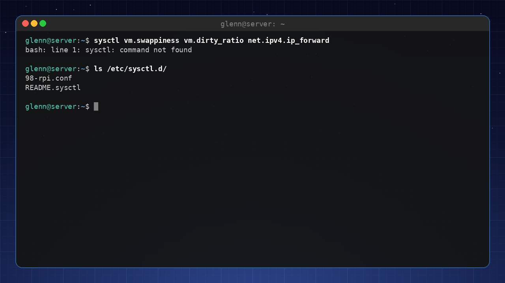
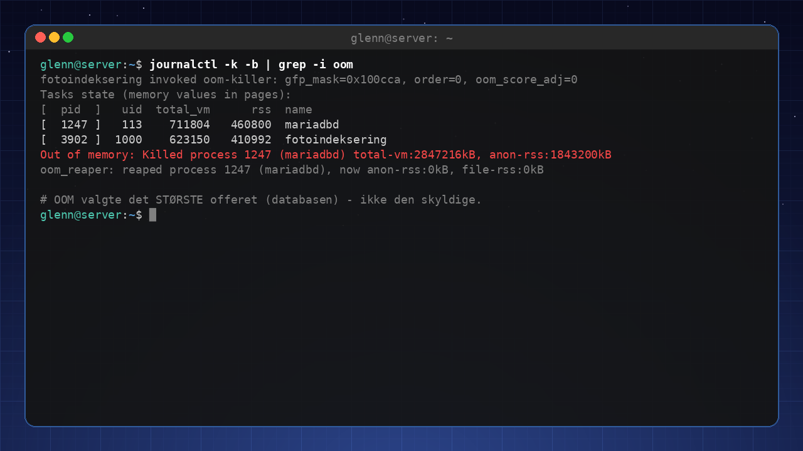
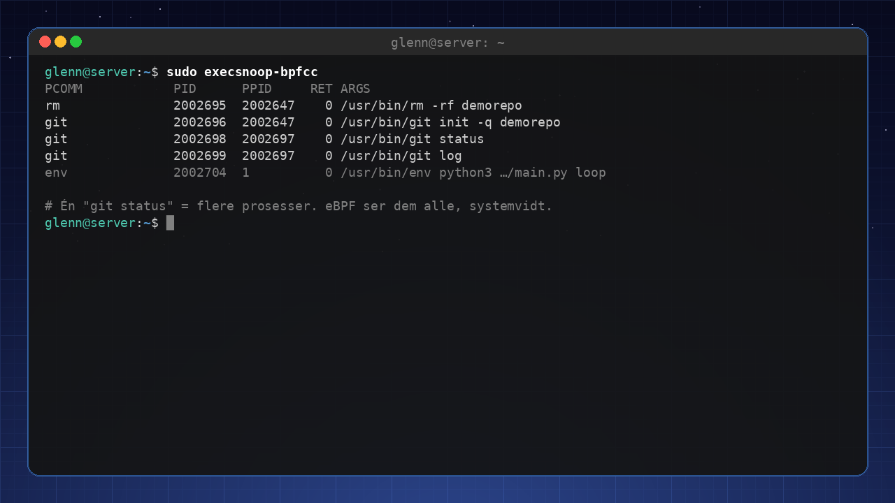
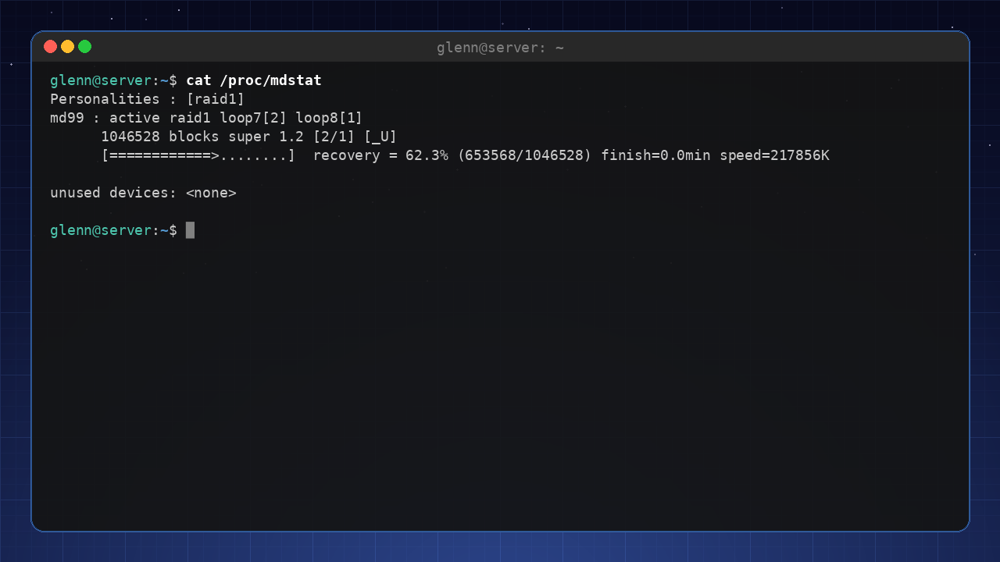
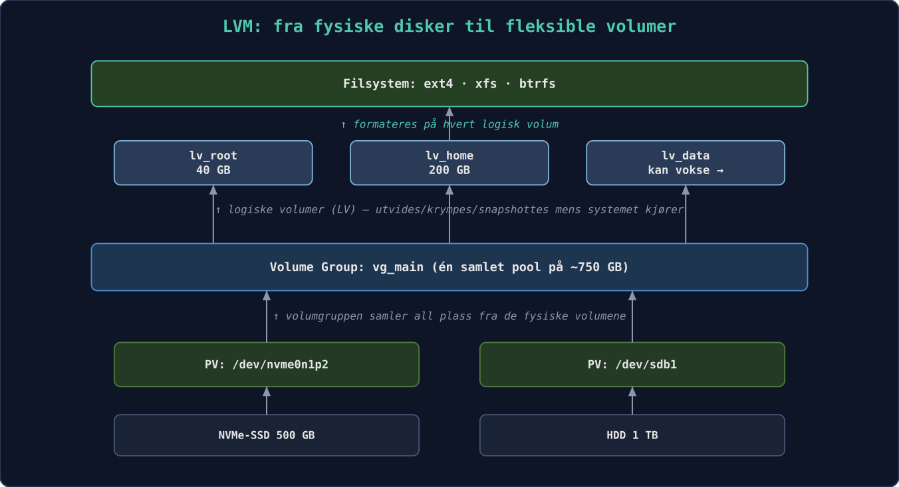
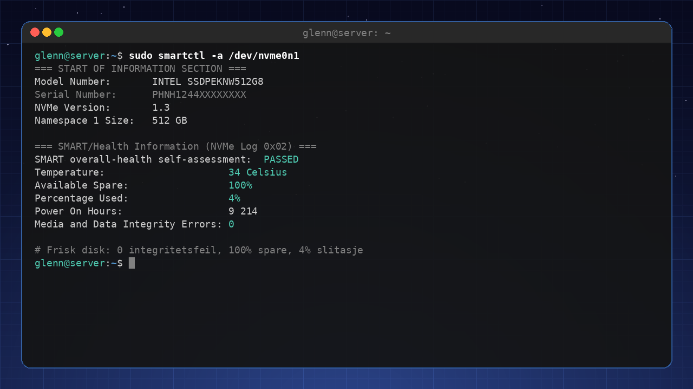
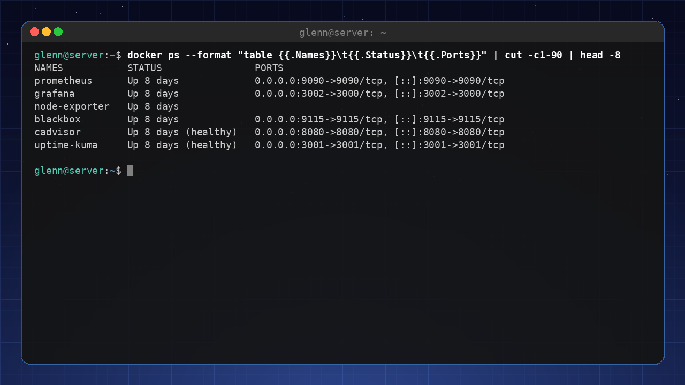
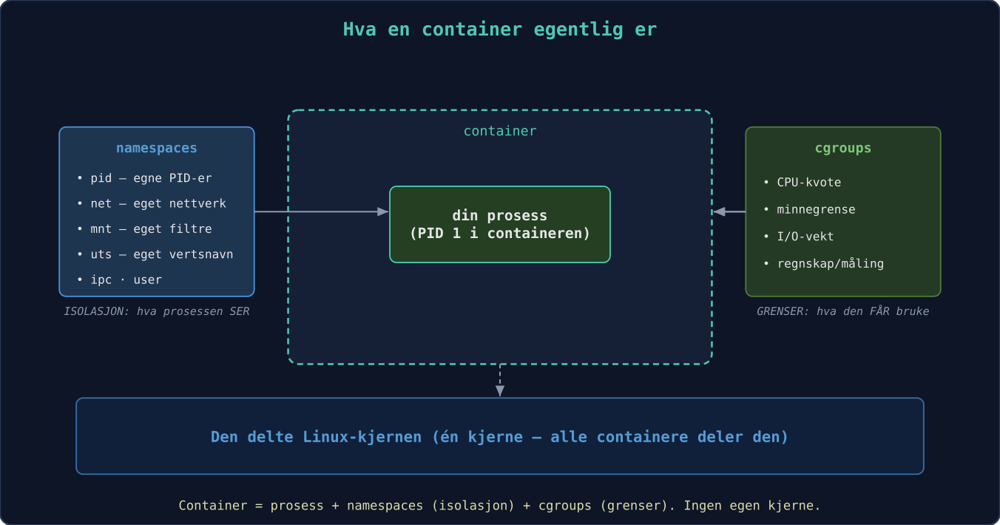
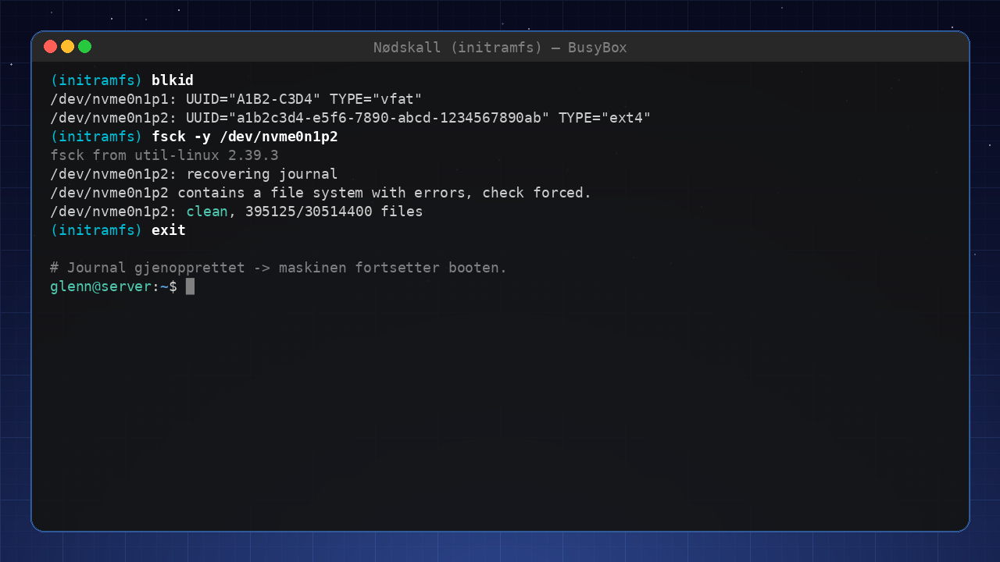
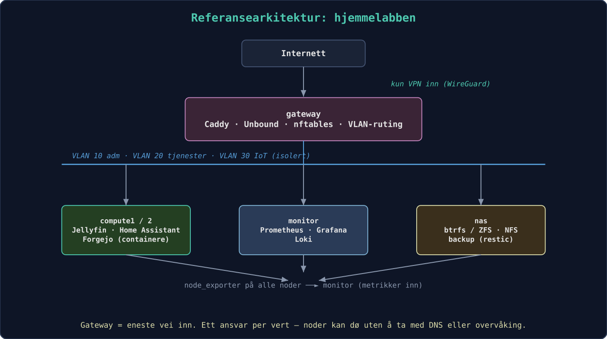

Linux for Experts 2027
Third book in the series – master your system at the source level and run your own infrastructure like a pro.
Preface
The third book in the series – for you who understand your system and now want to master it at the source level, and run your own infrastructure like a pro.
You’ve finished Linux for Intermediate Users (or the equivalent): you’re at home in the terminal, you script with a clear conscience, you run services on a home server, and you use Git daily. This book takes the final step – from “understands Linux” to “can explain, troubleshoot, and build everything.”
What this book is NOT: certification prep (LPIC/RHCSA), enterprise operations for large organizations, or a programming course. Deliberately left out are also SELinux in depth, raw WireGuard setup (covered in Book 2), Kubernetes in production, and immutable distros – scoping, not oversight. It’s still a book for the enthusiast – but now with the whole machinery laid open.
The thread running through it all: Over the course of the book you build out your home lab into a complete, monitored, automated, and hardened environment – described as code, so the entire setup can be recreated with a single command.
Welcome to the third book. You’ve already discovered that Linux isn’t an operating system you “know,” but a workshop you keep getting better acquainted with. Now we’re going to open all the doors.
“Expert” here doesn’t mean you remember every flag to
tar or can quote man pages from memory. It
means you’ve developed an intuition for how the system fits together,
and that you can reason your way to solutions for problems
you’ve never seen before. You’re going to learn to ask the machine the
right questions – and to understand the answers.
The book is built around your home lab. It starts as a couple of machines and a few containers, and grows chapter by chapter into a full-fledged, monitored, self-healing environment. What matters most, though, isn’t the end result but all the decisions and understanding you pick up along the way. From chapter 7 onward, everything you do becomes version-controlled and automated – the goal is that on the last page you can recreate the entire lab with one single command.
We keep the same friendly tone as in the earlier books. You’ll find Try it yourself exercises, and challenging sections are marked 🟡 (recommended taste) or 🔴 (optional finale). The chapters follow a fixed template, but principles come before installation manuals. Tools change; understanding lasts. That goes for the version numbers in the book too – kernels, image tags, distro releases – which are as they were when the book was written; the principles hold even as the numbers march on.
Three new devices set this book apart from the previous ones:
“Measure first.” From now on, one rule governs all
tuning: never adjust anything you haven’t measured. The
enthusiast sets vm.swappiness=10 because a blog post said
so; the expert measures before and after. You get the tools along the
way: fio for disk, iperf3 for network,
hyperfine for commands.
“Anatomy of an Incident.” Each part ends with a real troubleshooting story, told as it unfolds: symptom → hypotheses → commands → findings → lesson. Tools can be looked up – it’s the reasoning that makes you an expert.
The Master’s Exam. At the back of the book (Appendix D), ten exercises await where something is wrong in your lab – planted deliberately by a sabotage playbook. No answer key until you’ve tried.
What you’ll need
| Tier | Hardware | Enough for |
|---|---|---|
| Minimum | One machine with 16 GB RAM and VMs | Everything in the book – the whole lab can be virtual |
| Recommended | PC + one lab machine (old PC or Pi) | More realistic networking and operations |
| Luxury | Dedicated hypervisor host + Pi + NAS | The reference architecture in Appendix C |
In other words, the machine you already have will do. Time-wise: Parts 1 and 2 are evening material (2–4 hours per chapter), Part 3 is weekend projects, and Part 4 is for when the crises (or the curiosity) arrive. The lab’s build stages, chapter by chapter, are in Appendix C.
Tested on: Commands and package names in this book
are verified against Debian 13 and Ubuntu 24.04-based systems (including
Linux Mint 22). Where the distros diverge, the text says so. (Example
output – kernel versions, package versions, and the like – varies with
distro and time, so don’t worry if your numbers differ from the book’s.)
If you’re running something else, the differences are small – and now
you have the tools to find them. We write apt throughout;
on Fedora it’s dnf, on Arch pacman – at your
level that translation is trivial (the distro safari in Book 2 gave you
the map).
Now it’s time to see what’s really going on under the hood.
1. The Kernel – the engine you never see
Part 1: The System in Depth
In this chapter you’ll learn:
- Kernel modules: loading, removing, and blacklisting – and why
modprobealmost always beatsinsmod. - Module parameters: tuning a driver with
modinfo -pandoptionslines, without compiling anything. - The initramfs: the mini-system that boots your machine – what has to be in it, and how to avoid breaking it.
- Kernel parameters in real time with
sysctl– and the kernel command line in GRUB, done systematically. - The difference between an oops and a panic, kdump in brief, and Magic SysRq as the last resort.
- What Secure Boot means for third-party modules – the knowledge behind many a black screen.
- 🔴 Optional: compiling your own kernel – with realistic warnings and safety nets.
The Linux kernel is the first code that runs after the bootloader,
and the last to let go when the machine shuts down. For most people it’s
an invisible layer – you only notice it when something goes wrong. In
this chapter we make the kernel visible. Along the way you’ll meet a
principle that follows you through the entire book: everything
is a file. The kernel’s settings, the modules’ parameters, even
the emergency brake that can restart a frozen machine – all of it lives
as readable and writable files under /proc and
/sys.
1.1 Kernel modules
The kernel is modular. Drivers and filesystem support are loaded on
demand. With lsmod you see which modules are active, and
with modprobe you can load or remove them manually. Modules
live under /lib/modules/$(uname -r)/. When you plug in a
USB drive, udev automatically loads usb-storage and
ext4 (or whatever the drive is formatted with).
Start by finding out which module drives your own hardware:
lspci -k | grep -A3 -i network # "Kernel driver in use:" is the answer
lsmod | grep <driver> # and there it is, along with who's using itYou can blacklist modules you don’t want – a problematic Wi-Fi
driver, say – with a file in /etc/modprobe.d/:
# /etc/modprobe.d/blacklist-pcspkr.conf
blacklist pcspkrNote the nuance: blacklist only prevents
automatic loading via hardware aliases. If you want to forbid
the module entirely, even when something requests it by name, you use
the hard variant install pcspkr /bin/false – loading then
“succeeds” without anything happening.
And if you try to remove a module that’s in use
(sudo modprobe -r snd_hda_intel), you’ll most likely get
“Module is in use” – PipeWire is holding it. That error message is
instructive in itself: the kernel refuses to remove modules that others
depend on.
1.2 Module parameters – tune the driver without compiling
Most modules have tunable parameters – switches and values the
developer has exposed. modinfo -p lists them with
explanations:
modinfo -p snd_hda_intel | head -5power_save:Automatic power-saving timeout (in second, 0 = disable). (int)
power_save_controller:Reset controller in power save mode. (bool)
enable_msi:Enable Message Signaled Interrupt (MSI) (bint)
...The current values live – of course – as files, under
/sys/module/<module>/parameters/:
cat /sys/module/snd_hda_intel/parameters/power_saveSome of these files are writable and can be changed in real time;
others are read only when the module loads. The permanent route is an
options line in /etc/modprobe.d/:
# /etc/modprobe.d/audio.conf
options snd_hda_intel power_save=1The next time the module loads (in practice: next boot), the
parameter takes effect. This is the tool for when the internet says “set
options iwlwifi 11n_disable=8 to fix your flaky Wi-Fi” –
now you know what you’re actually doing, and you can check with
modinfo -p iwlwifi what the switch means. For modules
compiled into the kernel (not loadable), the same thing is set
as module.parameter=value on the kernel command line –
we’ll get to that in 1.6.
1.3 modprobe vs. insmod – dependencies don’t resolve themselves
Modules depend on each other: ext4 needs
mbcache and jbd2, and many network drivers
need shared helper libraries. The map of these dependencies lives in
/lib/modules/$(uname -r)/modules.dep and is built by
depmod:
modprobe --show-depends ext4 # what would modprobe load, and in what order?insmod /lib/modules/6.8.0-134-generic/kernel/lib/crc16.ko
insmod /lib/modules/6.8.0-134-generic/kernel/fs/mbcache.ko
insmod /lib/modules/6.8.0-134-generic/kernel/fs/jbd2/jbd2.ko
insmod /lib/modules/6.8.0-134-generic/kernel/fs/ext4/ext4.koThere you see the whole division of labor: insmod is the
low-level tool that loads one .ko file, knowing nothing about
dependencies or /etc/modprobe.d/. modprobe is
the boss that looks things up in modules.dep, loads
everything in the right order, and respects blacklists and
options lines. That’s why insmod is almost
never the right choice – run it on a module with unmet dependencies and
you get cryptic “Unknown symbol” errors in dmesg. The one
place insmod belongs: when you’re developing a module
yourself and want to load your freshly built .ko file straight from the
build directory.
If you’ve copied a module file under /lib/modules/
manually (it happens, e.g. with a vendor-supplied driver), you have to
update the map before modprobe can find it:
sudo depmod -aPackages and DKMS do this for you – which is why you rarely think about it.
1.4 The initramfs – the mini-system before the system
Here’s a chicken-and-egg problem: the kernel needs the disk driver and the filesystem module to mount the root filesystem – but the modules live on the root filesystem. The solution is the initramfs: a small, compressed archive containing exactly the modules and tools needed to reach root. The bootloader loads both the kernel and the initramfs into memory; the kernel unpacks the archive as a temporary root filesystem in RAM, runs a small script that loads modules, finds the root disk (unlocking encryption and activating LVM/RAID if needed) – and then switches to the real root filesystem.
What must be in it? Everything that stands between the kernel and the root filesystem:
- The driver for the disk controller (
nvme,ahci,virtio_blkin VMs). - The filesystem module for root (
ext4,btrfs…). dm-cryptmodules and tools if root is encrypted – plus the keyboard driver, or you won’t be able to type the passphrase!- LVM or mdadm support if root lives there (chapter 5).
See for yourself what’s in yours:
lsinitramfs /boot/initrd.img-$(uname -r) | grep -E 'nvme|ext4|dm-crypt'The initramfs is built by update-initramfs and must be
rebuilt whenever the assumptions change – a new disk controller, a
changed /etc/crypttab, or an
options/blacklist line in
/etc/modprobe.d/ that needs to apply already during
boot:
sudo update-initramfs -u # update for the running kernel
sudo update-initramfs -u -k all # for all installed kernelsIf you’re on Fedora/Arch: the same job is done by
dracut (Fedora) and mkinitcpio (Arch,
configured via HOOKS=(...) in
/etc/mkinitcpio.conf). The principle – and the failure
modes – are identical.
And when it goes wrong? If a required module is missing, the kernel can’t find the root filesystem. After a timeout you land in the initramfs’s emergency shell – a spartan BusyBox prompt:
Gave up waiting for root file system device.
(initramfs) _It looks like the end of the world, but it’s actually a
tool: you can list devices with ls /dev, load
modules manually with modprobe, and mount root by hand. The
full rescue procedure – including chrooting from a live USB to rerun
update-initramfs – is the subject of chapter 16.
⚠️ A broken initramfs = a machine that won’t boot. Therefore: don’t delete old kernels the moment a new one is installed. GRUB keeps the previous kernel (with its own, working initramfs) under “Advanced options” – that’s your safety net. Always verify that a new kernel boots before you clean out the old one.
1.5 Kernel parameters and sysctl
The kernel’s behavior can be tuned in real time via
/proc/sys/. The sysctl tool gives you a tidy
path to these. Run sysctl -a and let yourself be fascinated
– here you’ll find everything from network settings
(net.core.somaxconn) to memory management
(vm.swappiness). The dots in the name are literally
directory separators: vm.swappiness is the file
/proc/sys/vm/swappiness, and cat and
echo work just as well as sysctl. By putting
lines in /etc/sysctl.d/ you make changes permanent
(sudo sysctl --system reloads them without a reboot).
Typical parameters you’ll want to tune on a server: -
vm.swappiness=10 – makes the system stay away from swap for
as long as possible (the full story of swap and memory comes in chapter
3). - net.ipv4.ip_forward=1 – turns on routing (you’ll need
it in chapter 10). - kernel.sysrq=1 – enables Magic SysRq
for emergency recovery (see 1.7).

1.6 The kernel command line – GRUB, the e key, and /proc/cmdline
The bootloader (GRUB) passes command-line arguments to the kernel.
You may have used nomodeset to get graphics working. The
permanent parameters live in /etc/default/grub under
GRUB_CMDLINE_LINUX_DEFAULT; after a change, you run
sudo update-grub. With quiet and
splash you suppress most of the boot messages – but as an
expert you may well leave them off, to catch errors as they happen.
The ground truth – what the kernel actually received at this boot – is always in:
cat /proc/cmdlineBOOT_IMAGE=/boot/vmlinuz-6.8.0-134-generic root=UUID=3f1c... ro quiet splashCheck it before you troubleshoot “why isn’t my parameter working?” –
often the answer is that it never made it in (forgot
update-grub, or wrong variable in
/etc/default/grub).
Not everyone boots with GRUB: systemd-boot and UKI. A growing share of systems – Pop!_OS, some Fedora variants, many Arch setups – use systemd-boot instead. It reads its entries straight from the ESP partition;
bootctl listshows them, andbootctl statusshows which bootloader you actually have. There’s noupdate-grubto forget here: kernel packages add entries viakernel-install, and the command line sits as plain text in the entry files on the ESP. The next step in the same evolution is Unified Kernel Images (UKI): kernel, initramfs, and command line packed into one EFI binary that can be signed as a unit – which plays very well with Secure Boot (1.8). The rescue techniques in chapter 16 apply regardless; only the bootloader repair differs (bootctl installinstead ofgrub-install). And/proc/cmdlineis the ground truth no matter which bootloader you run.
Temporary editing – the expert’s favorite trick: In
the GRUB menu (hold Shift or press Esc during boot if the menu is
hidden), press e on an entry, edit the line starting with
linux, and boot with Ctrl+X. The change applies to this
one boot only – perfect for experiments, and completely safe: the
next boot is exactly as before.
Parameters worth knowing by heart:
| Parameter | Does | When |
|---|---|---|
nomodeset |
Disables the kernel’s graphics setup | Black screen during boot (chapter 17) |
systemd.unit=rescue.target |
Boot to single-user mode with a root shell | Troubleshooting services that hang the boot |
systemd.unit=emergency.target |
Even more minimal – hardly anything mounted | Broken /etc/fstab |
init=/bin/bash |
Skip systemd entirely – straight into a shell | Forgotten root password, totally wrecked init |
console=ttyS0,115200 |
Console on the serial port | Headless lab servers and VMs (virsh console!) |
mitigations=off |
Disables CPU vulnerability mitigations | ⚠️ See below |
init=/bin/bash deserves a footnote: you land in a shell
where root is mounted read-only and nothing else is running –
remember mount -o remount,rw / before changing anything,
and sync before forcing a reboot. Chapter 16 uses this as
one of its rescue tools.
⚠️ mitigations=off gives measurably better performance
on older CPUs by disabling the protections against
Spectre/Meltdown-class vulnerabilities. On an isolated lab machine it
can be a deliberate choice – on anything that runs foreign code (a
browser! containers with other people’s images!) it’s a bad idea. The
threat-model thinking that settles such questions comes in chapter
15.
1.7 Oops, panic, and Magic SysRq
Two words are often confused, and the difference matters:
An oops is the kernel’s “exception”: it hit a bug
(typically a null pointer in a driver), writes an error report to the
log, kills the process that was involved – and keeps running.
You’ll find it in sudo dmesg or journalctl -k,
recognizable by “Oops:” or “BUG:” followed by a “Call Trace”. After an
oops the kernel is marked tainted and in an unknown
state: save the logs, plan a reboot – but you have time to shut down
cleanly.
A kernel panic is when the kernel cannot continue without risking data corruption – often an oops in a place where there’s no process to sacrifice (interrupt context), or the root filesystem never got mounted. Everything freezes, with a dump on the screen. Here’s how to read the most important line:
RIP: 0010:usb_submit_urb+0x1f/0x5a0 [usbcore]RIP is the instruction pointer: the crash happened in
the function usb_submit_urb, 0x1f bytes into it, and the
module name in brackets – [usbcore] – is the prime suspect.
The function names are resolved automatically against the kernel’s
symbol table (/proc/kallsyms on a running system, the file
System.map-$(uname -r) in /boot). If a
third-party module is in the brackets ([nvidia],
[zfs]), you’ve almost always found the culprit. No brackets
means the kernel’s own code – in which case defective hardware (RAM!) is
statistically the most common cause, not a kernel bug.
kdump – an autopsy instead of guesswork: You rarely
get a chance to read the panic screen, and it doesn’t survive a reboot.
kdump solves this with kexec: a spare kernel
sits ready in a reserved memory region (the crashkernel=
parameter on the command line – on Debian/Ubuntu,
kdump-tools sets it automatically for you), and on panic
that kernel boots – without restarting the hardware – and
writes a memory image to /var/crash/:
sudo apt install kdump-tools # answer yes to enable
kdump-config show # "ready to kdump" is the goalFor the home lab, analyzing the dump itself (the crash
tool) is rarely worth the effort – but the fact that the dump
exists, with the log from the moment of panic in the dmesg
file next to it, turns “the machine rebooted last night” into a solvable
mystery instead of a frustrating one.
Magic SysRq – the emergency brake: When the machine
seems frozen, the kernel is often still listening at a level below
everything else: the key combination Alt+SysRq (SysRq usually shares a
key with PrtSc) plus a command letter. What’s allowed is governed by
kernel.sysrq – a bitmask where 1 means
“everything” and e.g. 176 (a common default) only allows
sync, remount, and reboot. Set kernel.sysrq=1 in
/etc/sysctl.d/ on lab machines.
The classic is the sequence REISUB (hold Alt+SysRq, press the letters a couple of seconds apart): Raw (take the keyboard back from the graphics environment), tErm (SIGTERM to everyone – chapter 2 explains why TERM before KILL), kIll (SIGKILL to the rest), Sync (write buffers to disk), Umount (remount everything read-only), reBoot. It’s a controlled emergency landing – unlike the power button, which is jumping without a parachute as far as your filesystems are concerned.
And because everything is a file: the same commands can be sent via
/proc/sysrq-trigger – invaluable when you’re in over SSH on
a machine whose local console is dead:
echo s | sudo tee /proc/sysrq-trigger # sync
echo b | sudo tee /proc/sysrq-trigger # immediate reboot – NO sync first, do s and u yourself!1.8 Secure Boot and signed modules
One mechanism explains a surprising number of “the driver installed fine but doesn’t work” mysteries: UEFI Secure Boot. With Secure Boot on, the firmware only starts bootloaders that are cryptographically signed; the distro’s shim and kernel are signed, and the kernel enters lockdown mode – it refuses to load unsigned modules. Check your own status:
mokutil --sb-state # SecureBoot enabled/disabled
sudo dmesg | grep -i 'secure boot\|lockdown'For everything that comes from the distro’s package repository this
is invisible – the modules are signed with the distro’s key. The problem
is third-party modules built locally via DKMS: the
NVIDIA driver, VirtualBox, ZFS. They’re built on your machine and cannot
possibly be pre-signed. The solution is MOK (Machine
Owner Key): a key you own, which you enroll in the firmware
with mokutil, and which DKMS then uses to sign the modules.
Debian/Ubuntu/Mint set this up semi-automatically: during installation
of a DKMS package you’re asked for a one-time password, and at the next
boot a blue “MOK Manager” screen appears – do not skip
it; choose “Enroll MOK” and enter the password. If you skip it,
the symptom is a classic:
sudo modprobe nvidia
# modprobe: ERROR: could not insert 'nvidia': Key was rejected by serviceThe module is perfectly built – the kernel just refuses to trust it.
The alternatives are to enroll the key after the fact
(mokutil --import /var/lib/dkms/mok.pub or your distro’s
variant – the path varies, so find yours with
sudo find /var/lib -name 'mok*' 2>/dev/null – then
reboot and MOK Manager) or to disable Secure Boot in the firmware – an
entirely legitimate choice on a lab machine, but a trade-off you should
make deliberately (chapter 15). The full drama of “NVIDIA driver +
Secure Boot = black screen” gets its practical treatment in chapter 17 –
but now you already know why it happens.
1.9 🔴 Optional finale: Compile your own kernel
This is more of an educational journey than a necessity. When you boot with a kernel you assembled yourself, much of the mystique evaporates – and you gain an invaluable understanding of which components actually make up a kernel. But let’s be honest about what you’re giving up first:
- The distro patches: Your distro’s kernel is not the vanilla kernel from kernel.org – it carries hundreds of patches (hardware fixes, AppArmor setup, backported security fixes). Your self-built kernel doesn’t have them.
- Security updates: The distro’s kernel is updated by
apt; yours you maintain yourself – or let it rot. - Secure Boot: Your self-built kernel is unsigned. With Secure Boot on, it simply won’t boot – you either have to sign it with your MOK key (see 1.8) or disable Secure Boot while you experiment.
Therefore: do this in a VM, or on the lab machine where the previous kernel is standing by in GRUB anyway.
The configuration itself is half the learning, and there are three paths:
make menuconfig– the interactive menu system. Fascinating to explore, but answering 12,000 questions sensibly from scratch is unrealistic.make oldconfig– start from an existing config (copy your distro’s:cp /boot/config-$(uname -r) .config) and only get asked about new options. The sensible default route.make localmodconfig– like oldconfig, but disables every module that isn’t loaded right now. Build time plummets (minutes instead of hours) – but plug in your USB gadgets first, or you’ll build a kernel without support for them.
sudo apt build-dep linux # the build tools
tar xf linux-6.x.tar.xz && cd linux-6.x # latest stable from kernel.org
cp /boot/config-$(uname -r) .config # start from the distro's config
make olddefconfig # like oldconfig, but takes default answers for everything new
make -j$(nproc) # coffee. lots of coffee. (localmodconfig: one cup)
sudo make modules_install install # puts kernel+initramfs in /boot and runs update-grub(linux-6.x is a placeholder – grab the latest stable
from kernel.org, the 6.x series, and consider the latest LTS if you’d
rather not upgrade often.)
The last step matters more than it looks: make install
adds the new kernel to GRUB – it replaces nothing. Your distro
kernel is still there under “Advanced options” as a fallback, with its
own initramfs. If the new kernel doesn’t boot (and it often doesn’t on
the first try – that’s half the point), you just pick the old one and
try again. The same safety net as in 1.4: never delete a working
kernel before its successor has proven itself.
Try it yourself:
- Find your network card’s driver with
lspci -k, and see it inlsmod. Then load and remove a harmless module:sudo modprobe pcspkr && sudo modprobe -r pcspkr, and watch the events withsudo dmesg | tail. - Pick a module you actually use (e.g.
snd_hda_intelor your Wi-Fi driver), runmodinfo -pon it, and read the current values in/sys/module/<module>/parameters/. Do you recognize any of the switches from forum threads you’ve followed? - Run
modprobe --show-depends ext4and compare withgrep ext4 /lib/modules/$(uname -r)/modules.dep– you’re seeing the same map from two angles. - Look inside your own initramfs:
lsinitramfs /boot/initrd.img-$(uname -r) | grep -E 'nvme|ahci|ext4|btrfs'. Can you find the driver for your disk controller and your root filesystem? - Compare
cat /proc/cmdlinewithGRUB_CMDLINE_LINUX_DEFAULTin/etc/default/grub. Also checkmokutil --sb-state– is Secure Boot on for you? - 🟡 Boot once into rescue mode: press
ein the GRUB menu, addsystemd.unit=rescue.targetto thelinuxline, and boot with Ctrl+X. Look around, thenreboot– the next boot is completely normal. (Feel free to do it in a VM the first time.) - 🟡 Enable full SysRq (
sudo sysctl kernel.sysrq=1) and test the most harmless command:echo s | sudo tee /proc/sysrq-trigger, then look for “Emergency Sync complete” insudo dmesg | tail. Now you know the emergency brake works – before you need it. - 🔴 In a VM: install
kdump-tools, verify withkdump-config show, and trigger a controlled panic withecho c | sudo tee /proc/sysrq-trigger. Watch the VM kexec-boot, and find the autopsy report under/var/crash/. Read thedmesgfile there and identify the RIP line. - 🔴 Build your own kernel in a VM following the recipe in 1.9 – with
localmodconfigto keep the build time down. Boot it, rununame -r, and enjoy the view. Then boot back into the distro kernel via “Advanced options”, so you’ve practiced the safety net too.
Key takeaways from this chapter
modproberesolves dependencies viamodules.dep(built bydepmod) and reads/etc/modprobe.d/;insmoddoes neither – use it only on modules you’ve built yourself.- Module parameters:
modinfo -pshows them,/sys/module/<m>/parameters/shows current values,optionslines in/etc/modprobe.d/make them permanent. - The initramfs contains everything between the kernel and the root
filesystem;
update-initramfs -ubuilds it,lsinitramfsshows its contents, and if something’s missing you land in the(initramfs)shell (chapter 16). The previous kernel in GRUB is the safety net – never delete it too early. sysctltunes the kernel in real time via/proc/sys/;/etc/sysctl.d/makes it permanent.- The command line:
ein GRUB changes one boot,/etc/default/grub+update-grubchanges all of them, and/proc/cmdlineis the ground truth. If the system boots with systemd-boot/UKI instead of GRUB, the tools arebootctlandkernel-install– noupdate-grub.systemd.unit=rescue.targetandinit=/bin/bashare rescue tools;mitigations=offis a trade-off, not a free lunch. - Oops = the kernel limps on (read
journalctl -k, plan a reboot); panic = full stop. The RIP line with a module name in brackets points to the culprit; kdump gives you the autopsy, Magic SysRq (REISUB) gives you the controlled emergency landing. - Secure Boot requires signed modules: DKMS modules are signed with
your MOK key via
mokutil– “Key was rejected by service” means the key isn’t enrolled, not that the driver is broken (chapter 17). - Your own kernel costs you distro patches, automatic updates, and the
Secure Boot signature – build with
oldconfig/localmodconfigfrom the distro’s.config, and always keep a working kernel in GRUB.
2. Processes, Signals, and cgroups
Part 1: The System in Depth
In this chapter you’ll learn:
- What a process really is – and how to read everything about
it in
/proc. - Signals: the language you speak to processes, and why SIGKILL should be the last resort.
- The process tree and process states – the truth about zombies and the unkillable.
- Priorities with
niceandionice– and why they are only wishes. - Cgroups: how systemd (and containers) set limits processes can’t escape.
- Slices, scopes, and services: systemd’s map of the cgroup tree – and how you choose whom the OOM killer takes first.
- Capabilities: root broken into pieces – the bridge to hardening (chapter 15) and containers (chapter 13).
- Two systemd tricks you’ll use for the rest of the book: drop-ins and template units.
A process is a program in execution – so far the beginner definition. The expert needs more: how processes come into being, how they die, how you talk to them while they live, and how you set limits they cannot escape. That last part is the foundation under the containers in chapter 13 – and under the incident that closes Part 1, when the OOM killer picked the wrong victim.
2.1 What a process really is
Every process has a PID and a parent
(PPID) – all of them descendants of PID 1 (systemd).
But the truly useful part is that the process’s entire inner life lies
open in /proc/<PID>/ – the “everything is a file”
principle from chapter 1 in practice:
ls /proc/$$/ # $$ = the PID of the shell you're sitting in
cat /proc/$$/cmdline # the command line it was started with
ls -l /proc/$$/cwd # symlink to the working directory – right now
ls -l /proc/$$/fd # all open files, sockets, and pipes
grep -E 'State|VmRSS' /proc/$$/status # state and actual memory use/proc/<PID>/fd is underrated in troubleshooting:
“which file is this process actually writing to?” is answered with a
single ls -l. (The lsof tool from chapter 4 is
in practice a pretty frontend to exactly this.)
The rest of the directory is an answer book – each file answers its own troubleshooting question:
tr '\0' '\n' < /proc/$$/environ # the environment it STARTED with (null-separated, hence tr)
cat /proc/$$/limits # the ulimits that actually apply – "too many open files"?
cat /proc/$$/io # bytes read and written – who's grinding on the disk?
cat /proc/$$/sched # got CPU or just waited? (runtime, context switches)
cat /proc/$$/smaps_rollup # memory, honestly accountedTwo of them deserve elaboration. environ is the answer
when a service “doesn’t see” the variable you set – you set it in your
shell, not in the service’s environment, and here you see the ground
truth. And smaps_rollup corrects a lie in ps:
RSS counts shared libraries in full in every process that uses
them. The Pss field distributes shared memory fairly among
its users, and Private_Dirty is what only this process is
holding on to – the number that’s actually freed if it dies. Ten nginx
workers “using 50 MB each” in ps are in reality sharing
most of it. The tools smem and ps_mem do this
arithmetic for all processes at once and sort by Pss – handy when you
want to find the actual memory culprit. (Want it per memory
region instead of as a sum: smaps, same directory.)
And when ps aux shows too much: build your own view with
-o:
ps -o pid,ppid,stat,ni,rss,cmd -p $$ # exactly the columns you care about
ps -eo pid,ppid,stat,cmd --forest | less # the whole tree, indented2.2 Signals – the language of processes
kill sends signals, not necessarily death. The ones
you’ll actually meet:
| Signal | No. | Meaning | Can be caught? |
|---|---|---|---|
| SIGTERM | 15 | “Please exit” – the process gets to clean up | Yes |
| SIGKILL | 9 | “Die now” – the kernel removes the process directly | No |
| SIGHUP | 1 | “The line dropped” – services often use it to reload their config | Yes |
| SIGINT | 2 | Ctrl+C in the terminal | Yes |
| SIGSTOP / SIGCONT | 19/18 | Freeze / thaw (SIGSTOP can’t be caught either) | No / Yes |
| SIGUSR1/2 | 10/12 | “Free for any use” – asks e.g. dd for a progress
report |
Yes |
(kill -l lists them all; man 7 signal
explains them.)
Why the order TERM → KILL matters: the process can
catch SIGTERM (with trap, as in your scripts from
Book 2) and use it to close files, flush buffers, and log out of the
database. SIGKILL is never delivered to the process – the kernel simply
removes it: no cleanup, half-written files, leftover lock files. Hence:
kill PID, wait a few seconds, then possibly
kill -9. (systemd does exactly this on
systemctl stop: TERM, a grace period, then KILL.)
In practice you target processes by name, not number:
pgrep -a jellyfin # find and show – always pgrep BEFORE pkill
pkill -HUP nginx # ask all the nginx processes to reread their config
sudo systemctl kill -s HUP nginx # same, but precisely scoped to the service's cgroupThe last one is the expert’s variant: systemctl kill
hits exactly the processes that belong to the service – never a
random process that happens to share the name. (And avoid getting used
to killall: on certain other Unix systems it literally
means “kill everything.”)
2.3 The process tree, zombies, and the unkillable
pstree -p shows the family relationships. Two fates are
worth understanding:
Orphans: if the parent dies first, the child is adopted by PID 1 (or a subreaper, such as a terminal multiplexer). Entirely undramatic – it’s how nohup jobs and tmux sessions survive.
Zombies (Z in the STAT column): the
process is finished, but the parent hasn’t collected its exit
code yet. A zombie uses no CPU and no memory – just a row in the process
table. It can’t be killed, because it’s already dead; what helps is the
parent cleaning up (or dying itself, so PID 1 takes over).
Watch one be born and die:
python3 -c 'import os,time
if os.fork() == 0: exit() # the child exits immediately
time.sleep(15)' # the parent waits without collecting the exit code
# in another terminal, within 15 seconds:
ps -eo pid,stat,cmd | grep -w Z # <defunct> – there's the zombieAfter 15 seconds the parent dies, and the zombie disappears with it. Many zombies from the same program are a bug in the program – not in Linux.
The truly unkillable are not the zombies but the
D state: uninterruptible sleep, almost always
waiting for I/O (a dying disk, a hung NFS mount). A D process ignores
even SIGKILL – it cannot be interrupted in the middle of a kernel call.
If you see processes stuck in D: stop shooting at the process and find
the I/O problem (iotop, dmesg – chapter 4
takes the hunt further).
The states you read in ps: R running,
S sleeping (normal), D waiting for I/O,
T stopped, Z zombie.
2.4 nice and ionice – priority without guarantees
Before the hard limits: the soft ones. nice lowers CPU
priority (0 is the default, 19 is “back of the line”),
renice changes a running process, and ionice
does the same for disk:
nice -n 19 tar czf backup.tar.gz ~/data # start out nice
sudo renice 19 -p 4242 # make a running process nice
ionice -c 3 -p 4242 # I/O class idle: disk only when nobody else wants itNote the limitation: nice only helps when there’s
competition for the resources, and guarantees nothing. For
batch jobs it’s often all you need – incident #3 later in the book is
solved with IOSchedulingClass=idle, which is systemd’s way
of saying ionice -c 3. If you need guarantees, you go to
cgroups.
And at the very opposite end of the scale: real
time. chrt sets the POSIX real-time classes
(SCHED_FIFO/RR), which take precedence over everything ordinary
– nice values included:
chrt -p 4242 # show class and priority for a running process
sudo chrt -f 50 audio-processing # SCHED_FIFO, priority 50 – ahead of everything normal🔴 Treat chrt like a loaded gun: a real-time process in
an endless loop never voluntarily gives up the CPU, and can in practice
freeze the machine – not even the SSH session you were going to rescue
yourself with gets any runtime. Use it only for short, well-tested audio
and measurement jobs, and deny services that don’t need it the entire
capability with RestrictRealtime=yes (chapter 15).
2.5 Cgroups – hard limits, measured consumption
Control groups (cgroups v2) are the kernel’s mechanism for
limiting, measuring, and isolating resource use for
groups of processes. Systemd organizes the whole machine into a
cgroup tree – see it for yourself with systemd-cgls:

The figure shows: directives like MemoryMax= and
CPUQuota= are set on branches and inherited down the
hierarchy – nginx cannot escape the quota by starting more
workers.

The limits are set in unit files (or drop-ins, see 2.9):
[Service]
MemoryHigh=400M # soft limit: above this the process is throttled and memory reclaimed aggressively
MemoryMax=500M # hard limit: above this → OOM kill, but ONLY within this cgroup
CPUQuota=50% # hard CPU limit: at most half a core, no matter how idle the machine is
CPUWeight=50 # soft: half weight WHEN there's competition for CPU (default is 100)The soft/hard distinction is the expert knowledge here:
MemoryHigh gives the service a chance to behave (and gives
you a blip in your metrics), MemoryMax is the guillotine –
but a local guillotine that protects the rest of the machine.
That’s exactly the medicine from incident #1: the photo indexing got
MemoryHigh, and the database no longer had to die for its
sins.
Memory and CPU are just two of the controllers. Here are the four you’ll actually use – every limit exists both as a file in the cgroup and as a systemd directive:
| Resource | File in the cgroup | systemd directive | Typical use |
|---|---|---|---|
| CPU | cpu.max |
CPUQuota= |
rein in a CPU-hungry job |
| Memory | memory.high / memory.max /
memory.swap.max |
MemoryHigh= / MemoryMax= /
MemorySwapMax= |
brake / guillotine / swap ceiling |
| I/O | io.max / io.latency |
IOReadBandwidthMax= et al. /
IODeviceLatencyTargetSec= |
bandwidth cap / latency target |
| Process count | pids.max |
TasksMax= |
fork-bomb protection |
Two of them deserve a footnote. io.latency is not a cap
but a target: you say “this group shall have at most 10 ms of
I/O latency,” and the kernel throttles the other groups when
the target is missed – the right tool when the database should have
first claim on the disk. And pids.max is the underrated
fork-bomb protection: a service that strays into endless forking bangs
its head against the ceiling of its own cgroup instead of filling the
entire process table. (systemd already sets
DefaultTasksMax= on all services – which is why a classic
fork bomb in a service no longer takes down the whole machine.)
The files can be read – and written – directly:
cat /sys/fs/cgroup/system.slice/ssh.service/pids.max
echo 200 | sudo tee /sys/fs/cgroup/system.slice/ssh.service/pids.max # applies until restartBut set the limit in the unit file instead
(TasksMax=200): sysfs changes vanish at the next reboot –
the same lesson as with sysctl in chapter 1.
And everything can be measured while it runs – cgroups keep the books whether or not you’ve set any limits:
cat /sys/fs/cgroup/system.slice/ssh.service/memory.current # actual use, right now
systemd-cgtop # "top", but per cgroupOne-off jobs don’t need a unit file – systemd-run
creates a temporary one:
systemd-run --user -p CPUQuota=10% dd if=/dev/zero of=/dev/nullThis is the bedrock the containers in chapter 13 stand on: a container is, at bottom, processes in a cgroup plus namespaces. If you understand the tree above, you’ve already understood half of container technology.
2.6 Slices, scopes, and services – systemd’s map of the tree
You’ve seen systemd-cgls – now you’ll read the output
like a native. systemd builds the tree out of three unit types:
.sliceunits are the branches – pure grouping, no processes of their own. Limits set on a slice apply to the sum of everything beneath it..serviceunits are the leaves systemd itself starts – every service in its own cgroup, which is whysystemctl killhits so precisely..scopeunits are processes that came into being somewhere else but should be accounted for in the tree: SSH sessions, terminal windows,systemd-run --scopejobs, VMs.
The top of the tree is always the same: system.slice
(all system services), user.slice (one
user-<UID>.slice per logged-in user), and
machine.slice (VMs and containers, chapters 13–14). That
gives you immediately useful handles – if you want all user sessions
combined to never choke the services, you set the limit on
user.slice, in one place:
systemd-cgls /system.slice # one branch at a time
systemd-cgtop -m # "top" per cgroup, sorted by memory (-c CPU, -i I/O)
systemctl status 4242 # the expert trick: which unit OWNS this PID?
sudo systemctl set-property user.slice MemoryHigh=4G # limit on a whole branch, liveYou create your own branches with Slice=: define
batch.slice with CPUWeight=20, set
Slice=batch.slice in all your batch jobs – one limit, many
services.
2.7 Who shall die?
OOMScoreAdjust= vs. MemoryMax=
If the whole machine runs out of memory, the kernel’s OOM killer wakes up and picks a victim by score – chapter 3 covers the full arithmetic. But you can look at the cards already:
cat /proc/$$/oom_score # the kernel's dice roll: higher number dies first
cat /proc/$$/oom_score_adj # your thumb on the scale: −1000 to +1000OOMScoreAdjust= in a unit file sets that last number:
-500 says “take someone else first,” +500 says
“feel free to take me.” (-1000 means “never” – reserved for
things like sshd; use it with respect, because an unkillable memory leak
is a nightmare.)
So you have two tools that are often confused, each with its own job:
MemoryMax=is a local hard limit: it protects the rest of the machine against this service. Set it on the suspects – services that might take it into their heads to balloon.OOMScoreAdjust=influences the global choice: it protects this service against the rest of the machine. Set it (negative) on the victims that must survive – the database, SSH.
Incident #1 with the benefit of hindsight: the photo indexing should
have had MemoryHigh=/MemoryMax= (suspect), the
database OOMScoreAdjust=-500 (victim). Belt and
suspenders.
2.8 Capabilities – root broken into pieces
Finally, a dimension of processes you need for both security and
containers: capabilities. Classic Unix is binary – root
gets everything, everyone else gets the rest. Modern Linux breaks root’s
superpowers into roughly 40 pieces: CAP_NET_BIND_SERVICE
(bind ports below 1024), CAP_NET_RAW (raw network packets –
which is why ping can run without root),
CAP_SYS_ADMIN (“the new root” – so broad it’s almost as
dangerous as everything). Every process carries its own sets, and you
read them straight out of /proc:
grep Cap /proc/$$/status # five bitmasks – CapEff is "what applies right now"
capsh --decode=000001ffffffffff # translate the mask into names (package libcap2-bin)
getpcaps 4242 # same answer, pre-translated, per PID
capsh --print # your own, right now(The system call behind the adjustments is called prctl
– you’ll see it in strace output in chapter 4, typically
when a process drops capabilities it’s finished with.)
The expert use is the systemd directives – this is how a service runs as a harmless user but gets to bind port 80:
[Service]
User=web
AmbientCapabilities=CAP_NET_BIND_SERVICE # gets exactly this piece
CapabilityBoundingSet=CAP_NET_BIND_SERVICE # ...and can NEVER acquire moreThis is the bridge onward: hardening in chapter 15 is largely about
shrinking CapabilityBoundingSet= (and
systemd-analyze security grades you on it), and the
containers in chapter 13 are to a large degree defined by which
capabilities they don’t have – container runtimes drop most of
them by default.
2.9 Two systemd tricks experts use daily
Override without touching the package’s files:
sudo systemctl edit myservice opens an empty “drop-in” file
in /etc/systemd/system/myservice.service.d/. Everything you
write there overrides the package’s unit file – and survives upgrades.
This is how you put MemoryMax= on a service you don’t own.
systemctl cat myservice shows the result with all
drop-ins.
Template units: A file named
backup@.service can be started as
backup@documents.service and
backup@photos.service – %i in the file is
replaced with whatever comes after the at sign. One definition, many
instances. You’ll meet the pattern everywhere: getty@tty1,
wg-quick@wg0.
Try it yourself:
- Explore your own shell:
ls -l /proc/$$/fdandgrep State /proc/$$/status. Open a file withlessin another window and watch it show up underfd. - Run the zombie demo from 2.3 and watch
<defunct>come and go inps. - Start
systemd-run --user -p CPUQuota=10% dd if=/dev/zero of=/dev/null, see thattopshows ~10%, find it insystemd-cgls --user, and read itsmemory.currentunder/sys/fs/cgroup/user.slice/. Stop it withsystemctl --user stop <the name you were given>. - 🟡 Test the guillotine safely:
systemd-run --user --scope -p MemoryMax=100M stress --vm 1 --vm-bytes 200M– the job is OOM-killed inside its own cgroup without the machine noticing a thing. See the proof withjournalctl --user -e. - Send
SIGUSR1to a runningdd(pkill -USR1 dd) and watch it report progress – signals are more than murder. - Read more of your shell’s records:
tr '\0' '\n' < /proc/$$/environ,cat /proc/$$/limits, andcat /proc/$$/oom_score. Does “Max open files” matchulimit -n? - Decode PID 1’s superpowers: take the
CapEffmask fromgrep Cap /proc/1/statusand runcapsh --decode=<the mask>. Compare with your own shell (capsh --print). - 🔴 Detonate a fork bomb in a cage:
systemd-run --user --scope -p TasksMax=30 -p CPUQuota=20% bash -c ':(){ :|:& };:'. Type the command EXACTLY as written – if you forget-p TasksMax=30, there is no cage, and the bomb really does take down the machine. Success looks like this:pids.currentin the scope’s cgroup directory sits banging against 30, the terminal fills up with “Retry: Resource temporarily unavailable” – and the rest of the machine stays responsive. Find the scope withsystemd-cgls --user, and clean up withsystemctl --user stop <the scope name>.
Key takeaways from this chapter
/proc/<PID>/is the process’s open record –fd,status,limits,environ,io, andsmaps_rollupanswer most questions.Pssis the honest memory number; RSS lies about shared memory.- TERM before KILL, always: SIGKILL means zero cleanup.
systemctl killhits precisely. - Zombies are harmless rows in a table; the
Dstate means “find the I/O problem, don’t shoot the process.” - nice/ionice are wishes,
chrtis an order (and dangerous in a loop –RestrictRealtime=exists for a reason); cgroups are guarantees.MemoryHighbrakes,MemoryMaxbeheads – locally. - Limits are set on branches of the cgroup tree and inherited downward
– this is what containers are made of.
TasksMax=is the fork-bomb protection. - Slices are branches, services are leaves, scopes are adopted
children.
systemd-cgtopshows the books;systemctl status <PID>shows the owner. MemoryMax=protects the machine against the service;OOMScoreAdjust=protects the service against the machine. Chapter 3 covers the arithmetic behind it.- Capabilities are root broken into pieces:
AmbientCapabilities=gives a harmless user exactly enough – the foundation under chapters 13 and 15. systemctl edit(drop-ins) andname@.service(templates) are tools you’ll use for the rest of the book.
3. Memory and Performance – the Truth About “Full RAM”
Part 1: The System in Depth
In this chapter you’ll learn:
- Why “free” memory is almost always in use – deliberately – and the difference between the page cache and buffers.
- How to read
/proc/meminfo,vmstat, andsar -rwithout misreading them: Active/Inactive, Dirty, Writeback, anonymous vs. file-backed memory. - What
drop_cachesactually does – and why benchmarking is the only good reason to use it. - Swap, swappiness – and zram vs. zswap: which is which, and when compressed memory pays off.
- The OOM killer: how it picks its victim, and how you influence the choice.
- Transparent Huge Pages (THP): free performance for some, a latency ghost for others.
- PSI – the kernel’s own pressure gauges, the modern supplement to load average.
- The NUMA basics that explain oddities on used servers.
“Linux is eating all my memory!” you hear beginners say. The beginner
answer is “no, that’s just cache.” The expert answer is longer – and
more useful: memory management in Linux is a system of lists,
thresholds, and trade-offs that you can read straight out of
/proc, just like you read processes in chapter 2. If you
can read it, you can tell “the machine is busy” from “the machine is
about to drown” – long before the OOM killer has to pick a victim.
3.1 Page cache and buffers – free performance, precisely explained
Linux uses free RAM as disk cache. When you read a file, its contents
are copied into memory. Read it again and it’s lightning fast. When you
write, data goes to the cache first and gets flushed to disk later
(write-back). free shows “available” memory, which is the
real amount free for new processes – cache counts as available because
the kernel can drop it instantly.
free shows two columns people mix up:
- buff (Buffers): cache for block devices – filesystem metadata and raw block I/O. Usually a few dozen MB.
- cache (Cached): the page cache – the actual contents of files you’ve read or written. This is where the big gigabytes live.
And one more trap: Cached includes
Shmem – tmpfs and shared memory. A 4 GB file in
/tmp (if that’s tmpfs) looks like “cache” but can
not be dropped – it exists nowhere else. That’s the most common
reason “available” is lower than free + buff/cache would
suggest.
The rule of thumb: look at available, ignore free. A machine with 200 MB “free” and 12 GB “available” is doing perfectly fine.
3.2 Reading /proc/meminfo like an expert
free is the summary; /proc/meminfo is the
full ledger. The fields that actually matter:
grep -E '^(MemFree|MemAvailable|Buffers|Cached|Shmem|Active|Inactive|Dirty|Writeback|AnonPages|SReclaimable):' /proc/meminfo| Field | Means | Common misreading |
|---|---|---|
MemFree |
RAM nobody is using for anything | “Low MemFree = problem.” No – unused RAM is wasted RAM. |
MemAvailable |
The kernel’s estimate of what new processes can get | The number you should actually look at. |
Active / Inactive |
The kernel’s two LRU lists: recently used pages vs. reclaim candidates | “Inactive = waste.” No – it’s the restocking shelf the kernel draws from first when someone needs memory. |
Active(anon) / Inactive(anon) |
Anonymous memory (heap, stack – no file behind it) | Can only be reclaimed via swap. Without swap, this memory is locked in. |
Active(file) / Inactive(file) |
File-backed memory (the page cache) | Can be dropped (clean) or written back (dirty) – which is why file cache is “cheap” and anonymous memory is “expensive.” |
Dirty |
Written pages not yet on disk | A big number during a big copy is normal – that’s write-back doing its job. |
Writeback |
Pages being written to disk right now | Persistently high = the disk can’t keep up. The storage hunt continues in chapter 5. |
Shmem |
tmpfs and shared memory | Looks like cache, cannot be dropped. |
SReclaimable |
Reclaimable slab (dentry/inode caches) | Also part of “available” – the kernel’s own metadata caches. |
The anonymous vs. file-backed distinction is the key to this whole chapter: file pages have a copy on disk and can be released for free; anonymous pages have no file behind them and must go to swap to be reclaimable. That’s why a system without swap, under memory pressure, ends up throwing away the entire page cache (and turning slow as molasses from all the re-reading) before the OOM killer finally steps in.
3.3 vmstat and sar -r – read correctly
vmstat 1 gives you one snapshot per second. The columns
that actually reveal memory pressure:
vmstat 1 5procs -----------memory---------- ---swap-- -----io---- -system-- -------cpu-------
r b swpd free buff cache si so bi bo in cs us sy id wa st
1 0 204800 312456 48220 6892344 0 0 4 12 310 620 3 1 95 1 0- si / so (swap in/out, KB/s): this is the
distress signal – not
swpd. That swap is in use (swpd> 0) only means the kernel at some point found cold memory it would rather use for cache. Sustained so means it’s pushing pages out right now; si at the same time means it’s pulling them back in again – that’s thrashing, and the machine feels dead. - b: processes in uninterruptible wait – the
Dstate from chapter 2.3, almost always I/O. - wa: CPU time spent waiting for I/O. High
wa+ highb= the disk is the bottleneck, not the CPU.
The most common misreading in one sentence: “swap is in use, so we have a problem” is wrong – sustained si/so is the problem.
sar -r (from the sysstat package) gives the
same picture over time – and has a trap of its own:
%memused includes cache and therefore typically sits in the
90s on a perfectly healthy machine. Look at kbavail
instead, and – for capacity planning – %commit: how much
memory processes have been promised in total, which can exceed
100% (overcommit is normal; it only becomes dangerous when the promises
are all called in at once). Chapter 12 systematizes this with continuous
collection.
3.4 drop_caches – what it does, and when it’s pointless
/proc/sys/vm/drop_caches takes three values:
1 drops the page cache, 2 drops the slab
caches (dentries/inodes), 3 both. Only clean pages
are dropped – hence sync first, so dirty pages get written
to disk and become clean:
sync
echo 3 | sudo tee /proc/sys/vm/drop_caches⚠️ This does not “free up” memory you need. The
kernel reclaims cache automatically – in the right order, guided by the
LRU lists from 3.2 – the very moment someone actually needs the memory.
Dropping the caches manually only makes the machine slower,
because everything has to be re-read from disk, and free
looks “prettier” for a few minutes. Production scripts running
drop_caches from cron are a sure sign that someone misread
free.
The one good reason: benchmarking. If you want to measure cold performance (first read after boot), the cache has to go – otherwise you’re measuring RAM speed and thinking it’s the disk. This is what the “measure first” principle looks like in practice:
# Create a 1 GB test file
dd if=/dev/urandom of=~/testfile bs=1M count=1024
# Cold read: the disk has to deliver
sync; echo 3 | sudo tee /proc/sys/vm/drop_caches
time cat ~/testfile > /dev/null
# Warm read: the page cache delivers
time cat ~/testfile > /dev/nullTypical result on a SATA SSD: ~2.0 s cold, ~0.15 s
warm – a factor of 10–15. On spinning rust, often a factor of
50. That’s the entire page cache chapter in two numbers. With
hyperfine (from Book 2’s “measure first” toolbox) it
becomes reproducible:
hyperfine --prepare 'sync; echo 3 | sudo tee /proc/sys/vm/drop_caches' 'cat ~/testfile > /dev/null'--prepare runs before every round, so all the
measurements are cold – that’s exactly why the flag exists.
3.5 Swap and swappiness
Swap is not “emergency RAM” – it’s the kernel’s ability to reclaim anonymous memory (cf. 3.2). Without swap, only the file cache can be sacrificed; with swap, the kernel can additionally park cold heap pages from processes that never touch them, and use the space for cache that actually does useful work.
vm.swappiness (0–200, default 60) controls the balance
between swapping anonymous memory and dropping file cache. A low value
(10) means “drop cache first, keep process memory in RAM as long as
possible” – sensible on a desktop, where an application being swapped
back in feels like stuttering. On servers with a good SSD, the default
is rarely worth touching – and if you have zram (next section), a
higher swappiness is often the right call, since “swap” is then
compressed RAM and nearly free.
3.6 zram and zswap – compressed memory in practice
The two get mixed up constantly, but they are different mechanisms:
- zram is a compressed ramdisk used as a swap device. Pages that get “swapped out” are compressed and stay in RAM – the disk isn’t touched at all. Typical compression is 2–3:1: 2 GB of zram swap might cost 800 MB of physical RAM.
- zswap is a compressed buffer in front of
an existing disk swap. Pages are compressed into a RAM pool first; only
when the pool is full are the oldest ones written to the disk behind it.
It’s enabled with the kernel parameter
zswap.enabled=1(chapter 1) – but note that zswap is already on by default in many newer kernels and distros; check withcat /sys/module/zswap/parameters/enabled. If you set up zram swap on such a system, make a deliberate choice about the combination – letting zswap compress pages on their way into an already-compressed zram device is just a waste of CPU.
The rule of thumb: zram when you don’t want disk swap at all (little RAM, a Raspberry Pi with a wear-prone SD card, a laptop with a small SSD), zswap when you already have disk swap and want to make it less painful – among other reasons because hibernation requires real disk swap, which zram cannot provide. If you have plenty of RAM and almost never any swap traffic, neither gives you a measurable gain – compressing pages that never get swapped is just CPU cycles burned for nothing.
Practical setup with systemd-zram-generator (the package
has the same name on Debian/Mint; the alternative
zram-tools with /etc/default/zramswap works
too):
sudo apt install systemd-zram-generator# /etc/systemd/zram-generator.conf
[zram0]
zram-size = ram / 2
compression-algorithm = zstdsudo systemctl daemon-reload
sudo systemctl start systemd-zram-setup@zram0.service
zramctl # shows the device, algorithm, and actual compression
swapon --show # zram0 should be at the top, with higher priority than disk swapThe zramctl columns DATA (uncompressed) versus COMPR
(actual RAM use) show you the compression ratio in black and white –
measure, don’t assume.
If you’re on Fedora/Arch: Fedora has shipped
swap-on-zram as the default since Fedora 33 – if you’re coming from
there, all of this is already in place, and zramctl shows
it. On Arch, zram-generator is the same package and the
same configuration file.
3.7 The OOM killer
When memory is full and the kernel can’t reclaim any more, it has to
pick a victim. The Out-of-Memory killer (OOM) gives every process a
“badness score” that essentially tracks memory usage (root processes get
a small discount). You can adjust vulnerability via
/proc/<PID>/oom_score_adj: the scale runs from
-1000 (full immunity – sshd uses it, so you don’t get
locked out of a leaking server) to +1000 (volunteer first
victim). A value like -500 only reduces the
probability – it does not grant immunity. See the current score with
cat /proc/<PID>/oom_score. The history lives in
dmesg.

Note the logic in the caption: the OOM killer punishes the
biggest, not the guilty. The database that has built
up legitimate memory usage over weeks scores higher than the indexing
job that triggered the crisis. That’s exactly why chapter 2.5 put
MemoryHigh/MemoryMax on the culprit: with
cgroup limits, the OOM kill becomes local – the guillotine
falls inside the job’s own cgroup, and the database survives. In the
systemd world there’s also systemd-oomd, which intervenes
before the kernel’s OOM killer – it listens to the pressure
gauges you’ll meet in 3.9.
3.8 Transparent Huge Pages – free for some, a ghost for others
The standard page size on x86-64 is 4 KiB. For a process with 8 GB of memory, that’s two million pages – and the TLB (the CPU’s cache for address translation) holds only a few thousand. Transparent Huge Pages lets the kernel quietly use 2 MiB pages for large, contiguous regions: 512 times fewer TLB lookups, a measurable win for memory-intensive workloads.
So why not always? Because “transparent” has a price: the kernel
(khugepaged) has to find and assemble 2 MiB of contiguous
physical memory, which on a fragmented system means compaction work –
and that can surface as unexplained latency spikes in the middle of
someone else’s critical path. On top of that, 2 MiB pages waste memory
when the program only touches a few KiB of them. That’s why Redis and
MongoDB explicitly warn against always.
cat /sys/kernel/mm/transparent_hugepage/enabled
# always [madvise] neveralways: the kernel uses huge pages everywhere it can.madvise: only where the program asks for it withmadvise(MADV_HUGEPAGE)– a sensible default, and what most distributions now ship.never: never.
And – “measure first”: before you touch anything, see whether THP is even in play on your machine:
grep AnonHugePages /proc/meminfo # how much anonymous memory is on huge pages right now
grep thp_fault_alloc /proc/vmstat # how often the kernel actually allocates themIf AnonHugePages is a large share of
AnonPages, the setting matters to you; if it’s near zero,
the whole debate is academic on your machine. ⚠️ A change in
/sys only lasts until reboot – and if you make it
permanent (the kernel parameter
transparent_hugepage=madvise, cf. chapter 1), measure your
workload before and after, with hyperfine or
perf stat from chapter 4 (dTLB-load-misses is
the counter that reveals whether huge pages helped). A setting whose
effect you haven’t measured is a superstition.
3.9 PSI – the kernel’s own pressure gauges
Load average is one big sack of both “wants CPU” and “waiting for disk” – the number says that something is tight, never what. Since kernel 4.20 there’s something better: Pressure Stall Information, three files that measure exactly what fraction of the time tasks spend stalled against a resource:
cat /proc/pressure/memorysome avg10=2.04 avg60=0.75 avg300=0.40 total=12876411
full avg10=0.32 avg60=0.11 avg300=0.05 total=4563122- some: fraction of time (in percent) that at least one task was stuck waiting for the resource. Somebody is squeezed.
- full: fraction of time that all non-idle tasks were stuck at once – the whole machine got no useful work done. This is the number that hurts.
- avg10 / avg60 / avg300: rolling averages over 10,
60, and 300 seconds – acute, recent, sustained.
totalis accumulated stall time in microseconds, handy for computing rates.
The same format exists for cpu and io (CPU
has no meaningful full at the system level – by definition,
everyone can’t be waiting for CPU at once without somebody having it).
The interpretation key: memory full avg10 above a few
percent means the machine is spending noticeable time on reclaim and
swapping right now – that’s thrashing quantified, and the
signal systemd-oomd uses to intervene before the kernel’s
OOM killer. PSI also exists per cgroup
(/sys/fs/cgroup/.../memory.pressure), so you can see
which service is suffering – the bridge between chapter 2 and
the containers in chapter 13. And in chapter 12 you’ll have
node-exporter scrape PSI continuously, so Grafana shows the pressure
over time and Alertmanager speaks up before you notice it yourself.
3.10 NUMA – when memory has geography
On machines with multiple CPU sockets, each socket has its own memory: local memory is fast, the neighbor’s memory goes over an interconnect and is measurably slower. This is NUMA – Non-Uniform Memory Access. The kernel tries to keep processes and their memory on the same node, but doesn’t always succeed.
numactl --hardwareA typical home lab machine shows one node – in which case the whole
topic is irrelevant to you, and that’s the main point: on
single-node machines, NUMA problems don’t exist. But if you buy
a used dual-socket rack server (temptingly cheap on eBay, Craigslist, or
at a university surplus sale), NUMA explains oddities like a VM with
half the machine’s RAM performing unevenly: its memory is spread across
two nodes, and half the accesses take the detour. numastat
shows hits and misses per node, and
numactl --cpunodebind=0 --membind=0 command pins a job to
one node. You rarely need more than that – but now you know where to
look when the used server acts “weird.” The virtualization chapter (14)
comes back to how you size VMs with this in mind.
3.11 The toolbox
free -h– the summary; read available, ignore free.cat /proc/meminfo– the full ledger (reading key in 3.2).vmstat 1– continuous: si/so is the distress signal, b and wa point to I/O.sar -r(sysstat) – the same over time; remember that%memusedincludes cache.smem– actual memory use per process, with shared libraries fairly apportioned (PSS).cat /proc/pressure/{cpu,memory,io}– the pressure gauges from 3.9.zramctl/swapon --show– compressed swap, in black and white.numactl --hardware/numastat– the geography of memory.
Try it yourself:
- Run
free -hand note “available.” Start a memory-hungry job, e.g.stress --vm 1 --vm-bytes 2G(sudo apt install stress). Watch “available” sink andbuff/cacheperhaps shrink. Interrupt with Ctrl+C and watch the memory come back. - Run
vmstat 1in one window while the stress job from exercise 1 runs in another – if you have swap, look for movement insi/so; watchfreeandcachemove either way. - Open two windows:
watch -n1 'grep -E "^(Dirty|Writeback):" /proc/meminfo'in one,dd if=/dev/zero of=~/big.tmp bs=1M count=2048in the other. Watch Dirty build up and Writeback drain – the write-back mechanism from 3.1, live. Clean up withrm ~/big.tmp. - 🟡 The cold/warm measurement from 3.4: create the test file, drop
the caches (requires sudo), and time
catcold versus warm. Note the factor – it’s your disk’s most honest report card, and a preview of chapter 5. - Read
cat /proc/pressure/memoryat rest, and again while the stress job is running. Can you getsome avg10above zero? Above 1%? - Check
cat /sys/kernel/mm/transparent_hugepage/enabledandgrep AnonHugePages /proc/meminfo– is THP in play on your machine, or is it academic for you? - 🟡 Set up zram on the lab machine following the recipe in 3.6. Run
the stress job again and read
zramctl: what compression ratio do you get on DATA versus COMPR? - 🔴 Combine with chapter 2: run
systemd-run --user --scope -p MemoryMax=200M stress --vm 1 --vm-bytes 400M, and readmemory.pressurefor the scope under/sys/fs/cgroup/user.slice/while it’s being squeezed. You’re now seeing memory pressure per service – exactly what the monitoring in chapter 12 will capture automatically.
Key takeaways from this chapter
- Read available, not free: cache is available memory hard at work. Buffers is block metadata, Cached is file contents – and includes tmpfs, which can not be dropped.
- Anonymous memory must be swapped to be reclaimed; file pages can
simply be released. That’s why swap makes the system smarter,
not slower – sustained
si/soin vmstat is the distress signal, not the fact that swap is in use. - Dirty/Writeback is write-back at work: high during writes is normal, persistently high means the disk can’t keep up (chapter 5).
drop_cacheshas exactly one good use: cold benchmarks. It doesn’t free memory you need – the kernel does that itself, better.- zram = compressed swap in RAM (little RAM, SD/SSD wear – the Fedora
default); zswap = a compressed buffer in front of disk swap. Measure the
ratio with
zramctl. - The OOM killer punishes the biggest, not the guilty – cgroup limits from chapter 2 make the kill local, and systemd-oomd intervenes earlier via PSI.
- THP:
madviseis a sensible default;alwayscan cause latency spikes. Measure (AnonHugePages,perf statin chapter 4) before you change anything. - PSI (
/proc/pressure/) quantifies what load average only hints at:some= somebody is waiting,full= everybody is waiting. Scraped in chapter 12. - NUMA doesn’t concern single-node machines – but it explains uneven
performance on used multi-socket servers.
numactl --hardwaregives you the answer in one second.
4. X-Ray Vision: strace, lsof, and perf
Part 1: The System in Depth
In this chapter you’ll learn:
strace: see every system call a program makes – and the flags that make it usable:-f,-p,-e trace=,-T, and the statistician-c.- The pitfalls: why strace costs performance, what yama/ptrace restrictions are, and the setuid trap.
- “Who’s holding this file/port?” recipes with
lsof,/proc/<PID>/fd, andss– including deleted-but-open files. perffromperf topto flame graphs – and the two failures everyone hits first: the paranoid sysctl and missing symbols.- The eBPF toolbox: several bpftrace one-liners and the bpfcc classics
opensnoop,execsnoop,biolatency, andtcplife. - The “measure first” reflex: numbers before and after the fix, not
gut feeling – and
trace-cmdas the next step when even perf doesn’t see enough.
When a program behaves strangely, you want to see what it’s actually
doing – not guess. These tools give you X-ray vision, each with its own
focus: strace sees one process in microscopic
detail, lsof sees what’s open right now,
perf sees where the time goes, and eBPF sees
the whole system at once. The PSI numbers from chapter 3 tell
you that the machine is suffering; the tools here tell you
who is tormenting it and why. This is the chapter that
turns “it just fails” into “I can see why it fails.”
4.1 strace – system calls in real time
strace captures every system call a program makes – the
entire conversation between the program and the kernel. You can start a
program under strace, or attach to a running process with
-p. Typical scenario: a process hangs.
sudo strace -p $(pgrep -o nginx) may reveal that it’s
waiting in a connect() toward a DNS server that isn’t
answering. Or that openat() fails with ENOENT
because a configuration file is missing:
strace ls -l /no/thing
# ...
# openat(AT_FDCWD, "/no/thing", O_RDONLY|...) = -1 ENOENT (No such file or directory)The error code is right there in the output – no interpretation
needed. (man 3 errno lists all the codes.)
Raw strace output is a firehose. Three flags make it drinkable:
-f – follow child processes. Almost
always necessary. Modern software forks: nginx has workers, scripts
start subcommands, sudo turns into something else. Without
-f you only see the parent – and wonder why “nothing is
happening.” Get used to typing strace -f by default.
-e trace= – filter by category or call.
The categories are the expert’s shortcuts:
strace -f -e trace=network curl -s http://example.com # only socket calls – DNS and TCP visible
strace -f -e trace=%file ls /etc # only file-related calls
strace -f -e trace=openat,stat cat /etc/hostname # exactly the calls you care about%file, %network, %process, and
%signal cover the most common hunts. The answer to “which
config files does this program actually read?” is always
-e trace=%file – you’ll be surprised how many places things
go looking.
-T and -r – time.
-T shows how long each call took (in
<0.000042> parentheses at the end), -r
shows time since the previous call. When something “hangs a little,”
-T is the verdict: one connect() at
<5.00231> is a DNS timeout, a thousand fast
stat() calls are something else entirely.
4.2 strace as statistician – and “measure first” in practice
-c turns strace from a log into an accounting: no line
per call, but a table at the end – number of calls, time, and errors per
system call. It’s the first choice when the question is “why is this
slow?” rather than “why does this fail?”.
Here is the measure-first principle in miniature – a before/after
measurement you can do right now. A script that shouts for
/bin/echo a thousand times:
strace -cf bash -c 'for i in $(seq 1000); do /bin/echo hi; done' >/dev/null
# % time seconds usecs/call calls errors syscall
# ------ ----------- ----------- --------- --------- ----------------
# 28.4 0.211 211 1000 clone
# 24.1 0.179 179 1001 execve
# ... ~13,000 totalA thousand clone + a thousand execve – one
process per line of output. The fix is to use the shell’s
built-in echo:
strace -cf bash -c 'for i in $(seq 1000); do echo hi; done' >/dev/null
# ~40 calls total. No clone, no execve.From ~13,000 system calls to ~40 – and the runtime falls to match.
The point isn’t echo; the point is the way of working: measure,
change, measure again. The numbers before and after are the proof that
the fix worked – gut feeling is not. (Same reflex with
hyperfine for wall-clock time and perf later
in the chapter for CPU time.)
Also look at the errors column in the
-c table: thousands of ENOENT from
openat often mean a program is hunting through long search
paths for every single file – a classic and easily fixed performance
problem.
4.3 🔴 Fault injection – and the pitfalls you must know
strace can do more than watch system calls – it can
sabotage them in a controlled way.
-e inject= lets you force errors that are hard to provoke
for real: full disk, network down, missing permissions.
strace -e trace=openat -e inject=openat:error=ENOSPC ./my_program
# every openat() now returns -1 ENOSPC – the program THINKS the disk is fullThis is how you test error handling before reality does:
does your backup script handle a full disk, or does it leave behind half
a file and exit 0? You can also hit only every n-th call
(:when=3+) or add a delay (:delay_enter=) to
simulate a slow disk.
🔴 Warning: Fault injection changes reality for the process. Never run it against a production process or anything you can’t afford to have crash – the program gets real errors and may respond with real destruction (aborted writes, corrupt state). Test on copies, in a VM, or against a program started for that purpose alone.
And three pitfalls that apply to all use of strace:
Performance. strace uses the kernel’s
ptrace mechanism: the process is stopped at the
entry and exit of every single system call while strace takes notes. A
syscall-heavy program can become 10–100× slower. Attaching strace to a
busy production service is therefore an intervention, not an observation
– use -e trace= to narrow it down, keep it short, or use
the eBPF tools in 4.7, which watch without stopping anyone.
ptrace restrictions (yama). On Ubuntu/Mint and most
modern distros, the kernel refuses to let ordinary users attach to
processes that aren’t their own children – even your own
processes. That’s the security module yama
(sysctl kernel.yama.ptrace_scope, default 1 –
a sysctl, as in chapter 1). If you get
Operation not permitted on strace -p: use
sudo, don’t turn off the protection.
The setuid trap. If you run
strace sudo whoami, sudo fails mysteriously. Under ptrace,
the kernel refuses to let setuid programs raise their privileges
(otherwise anyone could eavesdrop on them – and worse). The solution is
to flip the order: sudo strace whoami, or attach to the
process after it has raised itself.
4.4 lsof, /proc, and ss – who’s holding this file? This port?
In Unix everything is a file – and lsof
(list open
files) shows all the open ones: regular files, sockets,
pipes, devices. You saw in chapter 2 that
/proc/<PID>/fd is the ground truth for one
process; lsof is in practice a pretty, searchable frontend
to exactly that – for all processes. The recipes you’ll
actually use:
“Who’s holding this port?”
sudo lsof -i :8096 # which process is listening/talking on port 8096
sudo ss -ltnp 'sport = :8096' # same answer from the sockets side – faster on busy machinesss -tp (without -l) also shows
established connections with process names – “what is it that’s
talking to 185.x.x.x?” is answered there. ss reads the
kernel’s socket tables directly and is the tool you build on in chapter
10.
“Who’s holding this file?”
sudo lsof /var/log/syslog # everyone with the file open, with PID and mode
ls -l /proc/<PID>/fd | grep syslog # cross-check straight in /proc – no tools needed
sudo lsof -p <PID> # the other direction: EVERYTHING one process has open“The disk is full, but du can’t find the
space.” rm only deletes the name of a
file – the blocks are freed only when the last open file handle is
closed (the full inode mechanics behind this come in chapter 5). A log
file deleted while the service is still writing therefore keeps growing
invisibly. The recipe, in short form:
sudo lsof +L1 # "link count under 1" – deleted-but-open files
# COMMAND PID USER FD TYPE SIZE/OFF NLINK NODE NAME
# jellyfin 1234 jelly 4w REG 8589934592 0 262147 /var/log/jellyfin.log (deleted)
sudo truncate -s 0 /proc/1234/fd/4 # emergency: empty it through the file handle, no restartWhy this works, how the df/du discrepancy
reveals the situation, and the proper cures – section 5.1 owns all that.
Here it’s enough to know which two commands answer the question.
4.5 perf – find out where the time goes
perf is the kernel’s own profiler: it takes statistical
samples (“which function was running right now?”) thousands of times per
second, at almost zero cost – safe even on production systems, unlike
strace. The package is called linux-tools-common (+
linux-tools-$(uname -r)) on Ubuntu/Mint.
Three ways of working, in increasing thoroughness:
sudo perf top # "top for functions" – the whole machine, live
perf record -g ./my_program # profile one run, with call stacks (-g)
sudo perf record -g -p <PID> -- sleep 30 # or 30 seconds of a running process
perf report # interactive report of the recording (perf.data)perf top is the first choice when “the machine is slow”
and you don’t know who’s to blame – the function at the top is
the answer, whether it lives in a program or in the kernel.
perf record/report is the next step:
-g includes the call stack, so the report shows not just
that memcpy dominates, but who called it.
Navigate with the arrow keys and Enter to unfold stacks.
And where perf record produces a profile (where
the time went), perf stat is the
counter: it runs a command and presents the ledger from the
CPU’s hardware counters – instructions, cache misses, context switches,
and more:
perf stat -e instructions,cache-misses,context-switches gzip -c big.file >/dev/null
# 4,812,334,190 instructions
# 52,118,402 cache-misses
# 113 context-switchesTwo numbers before and after a change are often all you need – this
is exactly what chapter 3 used perf stat for in the THP
measurement, with dTLB-load-misses as the counter. Rule of
thumb: perf stat answers “how much?”,
perf record answers “where?”.
Two failures everyone meets first:
perf_event_paranoid. As an ordinary
user you’re denied measurements of other people’s processes and the
kernel. It’s governed by a sysctl (the chapter 1 knowledge again):
sudo sysctl kernel.perf_event_paranoid=1 # temporary: allow more for non-rootOr simpler: run perf with sudo and leave the default
alone.
Missing symbols. If the report shows only hex
addresses (0x00007f3a...) instead of function names, debug
symbols are missing for the program or its libraries. On Ubuntu/Mint the
packages are called <package>-dbgsym (requires the
ddebs archive). And if the program is compiled without frame pointers –
as much distro software is – the call stacks are additionally short
and wrong; ask perf to unwind the stack via DWARF debuginfo
instead:
perf record --call-graph dwarf ./my_programIf you’re on Fedora/Arch: the package is simply
called perf, and debug symbols are fetched automatically on
demand via debuginfod – symbols often just work there
without you lifting a finger.
4.6 Flame graphs – the whole profile in one picture
perf report is precise, but a flame
graph shows the entire profile as one interactive SVG image:
the width of each box is its share of the time, the height is the call
stack. Brendan Gregg’s FlameGraph scripts (the same Gregg you’ll meet
again in chapter 21) transform a perf recording in two steps:
git clone https://github.com/brendangregg/FlameGraph
sudo perf record -F 99 -g -p <PID> -- sleep 30 # 99 samples/sec for 30 s
sudo perf script | FlameGraph/stackcollapse-perf.pl \
| FlameGraph/flamegraph.pl > flame.svg
# open flame.svg in the browser – click to zoom, Ctrl+F to searchperf script prints the raw stacks,
stackcollapse counts them, flamegraph.pl
draws. The reading skill: look for wide plateaus – a wide box
high up is a function burning CPU itself; a wide tower is a call path
worth understanding. One glance often replaces half an hour of digging
in perf report – and the SVG can be attached to the bug
report or archived as the “before” picture for your next
optimization.
4.7 🟡 bpftrace – X-ray vision on the whole system at once
strace sees one process – and slows it down badly,
because it stops the process at every system call. eBPF
solves the same problem from the opposite end: instead of stopping the
program and peeking in, you load a tiny program into the kernel
itself, attached to a measurement point (a system call, a kernel
function, a network event). The kernel runs it every time the point is
passed and delivers the numbers to you – without stopping anyone. Before
the program is let in, the kernel’s verifier proves
mathematically that it cannot crash or hang; that’s why this is safe
even in production. The result: you see the whole system at
once, almost for free.
The bpftrace tool turns this into one-liners:
sudo apt install bpftrace
# Who is opening which files, right now, on the whole machine?
sudo bpftrace -e 'tracepoint:syscalls:sys_enter_openat { printf("%s → %s\n", comm, str(args->filename)); }'The pattern is always the same – probe { action } – so
one learned line quickly becomes four:
# Which programs are STARTED, system-wide? (exec tracing)
sudo bpftrace -e 'tracepoint:syscalls:sys_enter_execve { printf("%s → %s\n", comm, str(args->filename)); }'
# Who makes the most system calls? Counted in the kernel, printed at Ctrl+C:
sudo bpftrace -e 'tracepoint:raw_syscalls:sys_enter { @[comm] = count(); }'
# Size histogram of block I/O – who writes big and who writes small:
sudo bpftrace -e 'tracepoint:block:block_rq_issue { @bytes = hist(args->bytes); }'Notice @[comm] = count(): the aggregation happens in
the kernel, and you only get the finished table. That’s why eBPF is
almost free where strace is a handbrake.
4.8 bpfcc-tools – the classics that each answer their own question
The bpfcc-tools package gives you ready-made eBPF tools
(on Ubuntu/Mint with the -bpfcc suffix). Four of them cover
a surprising share of everyday troubleshooting – learn which
question each of them answers:
| Tool | The question it answers |
|---|---|
opensnoop-bpfcc |
“Which files are being opened, by whom – and which opens fail?” (config-file hunting without strace) |
execsnoop-bpfcc |
“Which processes are being started?” – reveals what a “magic” script actually runs |
biolatency-bpfcc |
“How long does disk I/O take?” – latency histogram; the verdict when
processes sit in D (chapter 2) and the SMART numbers from
chapter 5 need interpreting |
tcplife-bpfcc |
“Which TCP connections are created, how long do they live, how many bytes?” – connection accounting where tcpdump (chapter 10) shows packet contents |
These are the spot-check tools you grab when the dashboards from
chapter 12 show that something is wrong: Prometheus says “disk
latency rose at 14:32,” biolatency-bpfcc says by how
much, and opensnoop-bpfcc says who.
Continuous monitoring plus X-ray vision on demand – that’s the pair that
makes you accurate.
If you’re on Fedora/Arch: the package is called
bcc-tools, and the tools lack the suffix – they’re called
opensnoop, execsnoop, etc. (on Fedora they
live in /usr/share/bcc/tools/).
Try it yourself: Run
sudo execsnoop-bpfcc in one terminal and
git status in another. See how many processes one “simple”
command actually starts.

4.9 Further down: ftrace and trace-cmd
One more tool belongs on the map, even though you’ll need it less
often: ftrace, the kernel’s built-in function tracer.
Where perf takes samples, ftrace can log every single
kernel function that gets called, with timestamps – the entire machinery
beneath a system call, in order. The raw interface lives in
/sys/kernel/tracing/, but the trace-cmd
frontend is the way in:
sudo apt install trace-cmd
sudo trace-cmd record -p function_graph -P <PID> # trace one process's journey through the kernel
sudo trace-cmd report | less # call tree with time per functionThe rule of use is simple: start with perf or bpftrace; reach for
ftrace when you know which kernel call is slow and need to see
what happens inside it. It’s the tool for questions like “why
does this particular fsync() take 400 ms?” – and a natural
continuation if chapter 1 gave you a taste for the kernel’s insides.
Try it yourself:
- Run
strace ls -l /no/thingand find theopenatcall that returns-1 ENOENT. Then runstrace -e trace=%file ls /etcand see how many files one “simple” command touches. - Follow a network program:
strace -f -e trace=network -T curl -s http://example.com >/dev/null. Find theconnect()calls and read the times in the<...>parentheses – how long did DNS take? - Do the before/after measurement from 4.2 yourself:
strace -cf bash -c 'for i in $(seq 1000); do /bin/echo hi; done' >/dev/null, then the same with the built-inecho. Compare the total number of calls. - Recreate the “deleted-but-open” situation: run
exec 3<> /tmp/big.fileandrm /tmp/big.filein one shell, find the file again withsudo lsof +L1and under/proc/$$/fd, and close withexec 3>&-. - 🟡 Profile something real:
sudo perf topwhile runningsha256sumon a large file – which function tops the list? Then make a flame graph of the same thing with the recipe in 4.6. - 🟡 Run the syscall counter from 4.7
(
raw_syscalls:sys_enter) for 30 seconds on your desktop machine. Who on your machine is chattiest with the kernel – and would you have guessed it? - 🔴 Fault injection – only against a harmless victim:
strace -e trace=openat -e inject=openat:error=ENOENT cat /etc/hostname. Watchcatfail on a file that exists. Reflect on what the same trick would do to your backup script – and test it, on a copy.
Key takeaways from this chapter
strace -fis the default (the children are half the story);-e trace=filters,-Tfinds the call that hangs,-cfinds the thousand calls that add up to the slowness.- strace stops the process at every call – expensive in
production.
sudosolves yama denials;strace sudois a trap,sudo straceis correct. - 🔴
-e inject=tests error handling by serving up real errors – invaluable on test copies, dangerous against everything else. - “Who’s holding the port/file?”:
lsof -i :portandss -tpfor ports,lsof <file>and/proc/<PID>/fdfor files,lsof +L1for deleted files eating disk in secret. - perf takes cheap samples:
perf topfor “who?”,perf record -g+perf reportfor “why?”,perf statfor the pure counters (“how much?”), flame graph for the whole picture. The paranoid sysctl and missing symbols (--call-graph dwarf, dbgsym packages) are the first two hurdles. - eBPF sees the whole system without stopping anyone: bpftrace for
tailor-made questions, the bpfcc classics for the four most common ones
– and ftrace/
trace-cmdwhen you must see inside a slow kernel call. - Measure first, measure after: the numbers from
strace -c, perf, or hyperfine are the proof that the fix worked.
5. Serious Storage – RAID, LVM, btrfs, and ZFS
Part 1: The System in Depth
In this chapter you’ll learn:
- Why
rmon a log file doesn’t free any space – and howlsof +L1finds the culprit. - Software RAID with mdadm: building, fire drill – and monitoring that actually wakes you up.
- LVM in depth: snapshots with rollback, thin provisioning (and the danger of overcommit), SSD caching.
- btrfs at a serious minimum: subvolumes,
send/receive,scrub, andbalance– and the RAID5/6 warning. - ZFS: why the license tangle exists, and your first pool in ten minutes.
- SMART and TRIM: the few attributes that actually predict disk death,
smartdalerting – and letting the SSD tidy up after itself. - LUKS that unlocks itself:
systemd-cryptenrollwith TPM2 or FIDO2 – and why the passphrase slot is sacred. - fio with realistic profiles: queue depth, block size, and latency percentiles – measure first, or ache afterward.
Filesystems and volumes are more than just room for files. Storage is where mistakes are most expensive: a forgotten service holding a deleted file open, a RAID that has been degraded for three months without anyone saying so, a thin pool that filled up one night in February. This chapter teaches you to build flexible, self-healing storage – and, at least as important, to know when it is no longer healthy.
5.1 Inodes, links,
and why rm doesn’t free space
Every file has an inode – metadata (owner, permissions, timestamps)
and pointers to data blocks. A filename is just a link to an inode.
ln creates a new link (hard link) – as long as at least one
link exists, the data is kept. rm deletes only the link;
the inode and the blocks are removed only when the last link is gone
and no process has the file open. That’s why you can delete a
log file while a service is still writing to it – the space is freed
when the service closes the file.
report.txt ───────┐
├──► inode 5324 ──► [data blocks on the disk]
hardlink.txt ─────┘ │
└── owner, permissions, timestamps
shortcut.txt ··· (symlink: points to the NAME "report.txt", not the inode)
rm report.txt → the inode lives on (hardlink.txt holds it)
rm hardlink.txt → the inode is freed … when the last open file handle closesThe figure shows: filenames are just links to an inode – the data lives as long as at least one link or one open file handle exists.
This is not academic. The classic looks like this: the disk is full,
you find a 12 GB log file, delete it with rm – and
df -h still shows a full disk. The service that
wrote the log has the file open, and the kernel keeps the blocks alive
until the file handle closes. You deleted the name, not the data.
You recognize the symptom by df and du
disagreeing: du walks the directory tree and counts files
with names; df asks the filesystem about actual
block usage. A deleted-but-open file is invisible to du but
occupies space with df. The discrepancy is the
diagnosis. You find the culprit with lsof (chapter 4) and
the little flag +L1 – “show open files with fewer than one
link,” that is, files that are deleted but still open:
sudo lsof +L1
# COMMAND PID USER FD TYPE ... NLINK SIZE NAME
# rsyslogd 812 root 7w REG ... 0 12884901888 /var/log/big.log (deleted)NLINK 0 and (deleted) – there are your 12
gigabytes. Two solutions, in order of preference:
# 1. Empty the file instead of deleting it – next time:
sudo truncate -s 0 /var/log/big.log # or: sudo sh -c '> /var/log/big.log'
# 2. If the file is already deleted: restart the service (closes the handle), or
# the expert edition – empty it via the process's own file handle from the lsof output:
sudo truncate -s 0 /proc/812/fd/7The rule to take with you: log files get emptied, not
deleted – that’s why logrotate exists, and why it
sends SIGHUP (chapter 2) to services after rotating.
5.2 Software RAID with mdadm
One of your disks is going to die – that’s not pessimism, it’s
statistics. The question is whether it happens as an incident you handle
calmly, or a wreck you discover too late. Software RAID with
mdadm is the Linux answer: completely ordinary disks, no
proprietary RAID controller (which is itself a single point of failure –
if it dies, you have to find an identical one), and the entire
state readable in /proc/mdstat. RAID 1 mirrors everything
to two disks and tolerates one dying. RAID 5/6 stripes with parity and
gives more space per dollar – but with a sharp edge: the rebuild after a
disk replacement reads all of the surviving disks and takes
hours, and if disk number two dies along the way (not unlikely when the
disks are the same age and equally worn), everything is gone. Your gauge
is /proc/mdstat: [UU] is a healthy mirror,
[_U] means you’re running on your last disk. Here’s how you
create a mirror:
sudo mdadm --create /dev/md0 --level=1 --raid-devices=2 /dev/sdb1 /dev/sdc1⚠️ RAID is not backup. RAID protects against disk failure – nothing else. Delete a file, and the deletion is mirrored in real time to all the disks. Ransomware encrypts all the copies simultaneously. RAID gives you uptime; backup (Book 2) gives you an undo window. You need both, and each does its own job.
Fire drill without extra hardware: With loop devices you can practice disk failure completely safely:
# Make two "disks" out of files, build a mirror from them
for i in 1 2; do truncate -s 500M disk$i.img; done
sudo losetup /dev/loop101 disk1.img && sudo losetup /dev/loop102 disk2.img
sudo mdadm --create /dev/md9 --level=1 --raid-devices=2 /dev/loop101 /dev/loop102
sudo mdadm --fail /dev/md9 /dev/loop101 # the "disk" dies!
cat /proc/mdstat # [_U] – degraded, but the data lives
sudo mdadm --remove /dev/md9 /dev/loop101 # take out the dead one
sudo mdadm --add /dev/md9 /dev/loop101 # insert a "new" disk
watch cat /proc/mdstat # watch the rebuild liveThe day a real disk dies, your fingers have done this before. That’s the entire difference between panic and routine.

5.3 RAID without alerting is false security
Here comes the point many people skip: a degraded RAID nobody knows about is worse than no RAID – you believe you’re protected while running on your last disk. RAID 1 tolerates one disk dying. It does not tolerate one disk dying in March and the other in August, if nobody replaced the first one.
The antidote is called mdadm --monitor. Most distros
start it automatically as mdmonitor.service – but it stays
mute until you tell it where the alerts should go:
# /etc/mdadm/mdadm.conf (Debian/Mint; /etc/mdadm.conf on certain others)
MAILADDR you@example.com # requires working local e-mail
PROGRAM /usr/local/bin/md-alert # OR: run this on every eventE-mail from a home server is fragile – use ntfy instead, like the
rest of the lab (Book 2). The PROGRAM script receives the
event and the device as arguments:
#!/bin/sh
# /usr/local/bin/md-alert – two lines are the entire alerting system
curl -s -d "mdadm: $1 on ${2:-unknown device}" https://ntfy.sh/your-secret-channelAnd – as with backup – an alerting system you’ve never seen fire does not exist. Test it:
sudo mdadm --monitor --scan --test --oneshot # sends a TestMessage for every array – NOWIf the message reached your phone, you’re in business. The third leg
is metrics: node_exporter (chapter 12) reads
/proc/mdstat on its own and exposes
node_md_disks{state="failed"} – so once the Prometheus lab
is up, you add an alert rule on exactly that, and have belt and
suspenders.
5.4 LVM – flexible volumes
Partitions are decisions you make on installation day and live with
for years – and “how big should root be?” is a question nobody answers
correctly three years in advance. LVM (Logical Volume Manager) removes
the problem by inserting a layer between the disks and the filesystems:
physical volumes (PVs) are enrolled into a common pot (VG, volume
group), and from the pot you carve logical volumes (LVs) in the size you
need right now – they can grow, be snapshotted, and be moved
while the system is running. The sharp edge sits in the direction:
growing is safe and done live; shrinking requires
unmounting and is where people lose filesystems (never shrink the LV
before the filesystem – or let -r do both in the right
order). Your gauges are sudo vgs (the VFree
column – how much the pot has left to hand out) and
sudo lvs (the volumes and their state); those two commands
are your view into the entire stack, and you’ll be running them often
throughout the chapter.

The basic flow is three commands and a filesystem – and the most important everyday payoff is that volumes can grow while in use:
sudo pvcreate /dev/md0 # the RAID from 5.2 as the foundation
sudo vgcreate vg-data /dev/md0
sudo lvcreate -L 50G -n media vg-data
sudo mkfs.ext4 /dev/vg-data/media
# Six months later, no unmounting, no downtime:
sudo lvextend -r -L +20G /dev/vg-data/media # -r grows the filesystem in the same strokeNote -r (--resizefs): it spares you the
classic “grew the LV, forgot the filesystem” moment.
5.5 LVM snapshots in practice – an undo window on command
A snapshot is a frozen point-in-time image of a volume, created in a second. LVM uses copy-on-write: the snapshot starts empty and fills only with the changes that happen afterward – so it doesn’t need to be as big as the original, just big enough for the changes during the snapshot’s lifetime:
sudo lvcreate -s -L 5G -n root-before-upgrade /dev/vg-system/rootNow you can run the scary upgrade with peace of mind. Afterward you have two exits:
# Everything went fine – discard the undo window (snapshots cost performance while they live):
sudo lvremove /dev/vg-system/root-before-upgrade
# Everything went WRONG – roll back:
sudo lvconvert --merge /dev/vg-system/root-before-upgrade
# If the volume is in use (e.g. the root filesystem), the actual rollback happens
# at the next activation – in practice: at the next reboot. The snapshot vanishes in the merge.⚠️ A full snapshot dies. When the changes exceed the snapshot’s size, the snapshot becomes invalid and is discarded – your original volume is safe, but the undo window is gone. Keep an eye on
sudo lvs(theData%column) for long-lived snapshots.
lvconvert, by the way, is LVM’s Swiss Army knife: the
same tool converts between volume types – snapshot merge as above,
linear volume to mirrored (--type raid1), and ordinary LV
to cache or thin setups as in the next section.
5.6 Thin provisioning and SSD caching – powerful, with sharp edges
Ordinary LVs reserve all their space up front. Thin provisioning flips that: you create a pool of real space, and volumes that merely pretend – blocks are allocated only when something is actually written:
sudo lvcreate --type thin-pool -L 100G -n pool vg-data
sudo lvcreate -V 80G --thin -n vm-web vg-data/pool # -V: virtual size
sudo lvcreate -V 80G --thin -n vm-db vg-data/pool # 160G "promised" out of 100G realThe gains are real: space is shared intelligently, and snapshots of thin volumes are almost free (no separate size to guess at, far lower performance cost than classic snapshots). That’s why Proxmox uses LVM-thin as its default VM storage (chapter 14).
⚠️ Overcommit is a loan you can default on. In the example above, 160 GB is promised, 100 GB exists. If the pool goes completely full, all the thin volumes get I/O errors at the same time – filesystems are remounted read-only or corrupted, and cleaning up a full pool is unpleasant expert surgery. A full disk is a bad day; a full thin pool is a bad week. Monitor
sudo lvs(Data%on the pool), set a Prometheus alert (chapter 12), and let LVM help you:thin_pool_autoextend_threshold = 80in/etc/lvm/lvm.confgrows the pool automatically – if the VG has free space to draw on.
SSD cache in one command: if you have a big HDD
volume and a small SSD to spare, lvconvert can put the SSD
in front as a cache – the hottest blocks are served from SSD, the rest
from HDD:
sudo lvcreate -L 50G -n fast vg-data /dev/nvme0n1p3 # cache volume ON the SSD
sudo lvconvert --type cache --cachevol fast vg-data/media
sudo lvconvert --splitcache vg-data/media # undo: detach the cache safelyYou rarely need to know more about it than that – but know it exists before you buy a huge SSD “just in case.”
5.7 btrfs – snapshots as a first-class citizen
btrfs and ZFS are the next generation: built-in snapshots, compression, checksums on everything, and self-healing against bitrot. btrfs is built into the Linux kernel and easy to adopt – and four concepts take you from “have heard of it” to “use it”:
Subvolumes are the filesystem’s own snapshottable
branches – think “directories with superpowers.” The Ubuntu/Mint
convention is @ for the root and @home for the
home directories, mounted separately. The point: you can then roll back
the system without rolling back your documents.
sudo btrfs subvolume list / # see your branches
sudo btrfs subvolume snapshot -r / /.snapshots/root-2027-01-15 # -r: read-onlyIf you’re on Fedora/Arch: Fedora installs with btrfs
by default but names the subvolumes root and
home instead of @ and @home –
same idea, different names. On Arch you choose the layout yourself; the
@ convention is wise if you want to use tools like
Timeshift.
send/receive turns read-only snapshots into a backup
engine: btrfs send serializes a snapshot (or just the
difference from the previous one), receive unpacks
it on another disk or machine:
sudo btrfs send /.snapshots/root-2027-01-15 | sudo btrfs receive /mnt/backupdisk/
# next time, only the changes since last time – incremental backup done properly:
sudo btrfs send -p /.snapshots/root-2027-01-15 /.snapshots/root-2027-02-15 \
| sudo btrfs receive /mnt/backupdisk/scrub reads all blocks and verifies the checksums –
this is how the self-healing is actually triggered (with
redundancy, errors are repaired automatically; without it, you at least
learn which file is rotten). Run it monthly with a systemd
timer (chapter 2 gave you template units –
btrfs-scrub@-.timer from the btrfs-progs
package is exactly one of those):
sudo btrfs scrub start /
sudo btrfs scrub status / # runs in the background; 0 csum errors is the goal
sudo systemctl enable --now btrfs-scrub@-.timer # "-" = escaped path for "/"balance redistributes block groups – needed when
btrfs filesystem usage / shows a lot of
allocated-but-empty, or after you’ve added a disk. Run it with a
filter, or you’ll move everything and it takes hours:
sudo btrfs balance start -dusage=50 / # only data blocks less than 50% full⚠️ btrfs RAID5/6: still no. btrfs has built-in RAID, and mirroring (
raid1) is solid and recommended. But the RAID5/6 modes have known holes (including the “write hole” on power loss) and are still not considered safe by the developers themselves. If you want parity RAID: mdadm underneath (5.2) or ZFS raidz (5.8) – not btrfs raid5/6.
5.8 ZFS – the license tangle, and your first pool
ZFS comes via OpenZFS and is loved for its stability and richness of
features. Why isn’t it in the kernel when everyone loves it? The
license: ZFS is CDDL, the kernel is GPL, and most – but not all –
lawyers believe they can’t be mixed in the same source tree. Ubuntu’s
lawyers disagree and ship prebuilt modules; Debian stays on the safe
side and builds them locally with DKMS on your machine; the kernel
developers won’t take the chance, especially not with Oracle as the
rights holder. Nobody has the definitive answer – which is why
installation feels different from distro to distro. (If you’re
on Fedora/Arch: Fedora doesn’t package ZFS at all – there,
btrfs is the first choice; on Arch it exists via
DKMS/archzfs, with kernel upgrades that occasionally have
to wait for the module.)
Once the module is in place, ZFS is astonishingly little to learn for a lot in return. The entire basic flow – pool, dataset, snapshot, scrub – is four commands:
sudo zpool create -o ashift=12 tank mirror /dev/sdb /dev/sdc # mirrored pool, 4k-aligned
sudo zfs create -o compression=lz4 tank/backup # dataset ≈ subvolume
sudo zfs snapshot tank/backup@2027-01-15 # instant, free
sudo zpool scrub tank && zpool status # health check + reportNotice the model: you don’t create partitions and filesystems – you
create datasets that share the pool’s space freely,
each with its own settings (compression, quotas, snapshots). Rolling
back is zfs rollback tank/backup@2027-01-15; sending a
backup to another machine is
zfs send | ssh ... zfs receive, exactly parallel to btrfs.
This book doesn’t need to be a ZFS book beyond this – know that raidz1/2
is the solid parity RAID btrfs lacks, that zpool scrub
belongs in a monthly timer just like btrfs scrub, and that Proxmox
(chapter 14) supports ZFS out of the box if your lab is headed that
way.
5.9 SMART – disks talk
All modern disks keep books on their own health – SMART
(Self-Monitoring, Analysis and Reporting Technology).
sudo smartctl -a /dev/sda (package
smartmontools) shows all of it, and “all” is the problem:
the output is full of numbers that look alarming and mean nothing. The
art is knowing which few attributes actually predict disk
death. Backblaze, which publishes failure statistics from hundreds of
thousands of disks, has shown that a handful do exactly that – and that
roughly one disk in four still dies with no SMART warning. Read it this
way: a SMART warning means “replace the disk,” but silence does not mean
“healthy.”
For SATA disks there are three you watch in
sudo smartctl -A /dev/sda (read the RAW_VALUE
column):
Reallocated_Sector_Ct– sectors the disk has given up on and moved to the reserve area. Zero is the norm; a small, stable number can be lived with; a number climbing from week to week means the disk is dying – order the replacement now.Current_Pending_Sector– sectors that couldn’t be read and are waiting for reallocation. That’s unstable data right now: take a backup first, troubleshoot afterward.UDMA_CRC_Error_Count– transfer errors between disk and controller. Here’s the twist: this is almost always the cable, not the disk. Reseat or replace the SATA cable before you throw away a healthy disk. (The counter never resets – what matters is whether it’s increasing.)
NVMe has its own, tidier health log
(sudo smartctl -A /dev/nvme0):
Media and Data Integrity Errors should be
0 – anything else is bad news – and
Percentage Used is the wear estimate
against the rated write volume: 4% after two years is excellent, and
over 100% means “out of spec,” not imminent death. If, on the other
hand, Available Spare falls below its threshold, that’s
acute.

But you’re not supposed to sit and read these numbers by hand –
that’s the job of smartd, which ships in the same package.
One line in /etc/smartd.conf (feel free to replace the
entire default contents) and an alert script following the same recipe
as md-alert in 5.3:
# /etc/smartd.conf
DEVICESCAN -a -o on -S on -n standby,q -m <nomailer> -M exec /usr/local/bin/smart-alert-a monitors everything that matters (the attributes
above included), -o on/-S on turn on the
disk’s own offline tests and attribute saving, -n standby,q
lets sleeping disks sleep instead of waking them every half hour, and
-m <nomailer> -M exec says “don’t attempt e-mail –
run my script”:
#!/bin/sh
# /usr/local/bin/smart-alert – smartd sets the SMARTD_* variables for us
curl -s -d "smartd: $SMARTD_FAILTYPE on $SMARTD_DEVICE – $SMARTD_MESSAGE" \
https://ntfy.sh/your-secret-channelAnd – same rule as in 5.3 – an alert you’ve never seen fire does not
exist. Add -M test to the DEVICESCAN line, run
sudo systemctl restart smartd, and a test alert should hit
your phone immediately. Remove the flag once you’ve seen it work.
And the day the SMART numbers are already ugly and the disk is
stuttering: then it’s no longer monitoring you need, but salvage – the
ddrescue drill in chapter 16 is written for exactly that
moment.
5.10 TRIM – let the SSD tidy up after itself
An SSD cannot overwrite a block directly – it must erase first, and erasing is expensive. So the filesystem has to tell the SSD which blocks are free (discard/TRIM), or the controller believes everything you’ve ever written is still in use, and performance sinks over the years. Two ways to say it:
- The
discardmount flag: TRIM is sent synchronously on every deletion. Sounds right, but costs latency on every singlerm– and has historically triggered firmware bugs on certain disks. fstrim.timer: one collected cleanup per week, outside working hours. This is the recommendation – and most distros (Mint/Ubuntu/Debian, Fedora, Arch) already enable it:
systemctl status fstrim.timer # enabled? Then you're done.
sudo fstrim -av # run manually and see what gets trimmed:
# / : 41.3 GiB (44342394880 bytes) trimmed on /dev/mapper/vg-rootThe pitfall is the layers in between: TRIM has to travel all
the way from the filesystem, through LVM and encryption, down to the
disk – and LUKS blocks it by default (for a subtle
privacy reason: TRIM reveals which parts of the encrypted disk are
empty). If fstrim says “the discard operation is not
supported,” check the chain:
lsblk --discard # DISC-GRAN/DISC-MAX nonzero at every layer = TRIM gets throughIf the columns are 0 at the LUKS layer: add discard to
the /etc/crypttab line (or
luksOpen --allow-discards), update the initramfs, reboot –
and check lsblk --discard again. LVM passes discard through
on its own on modern systems; for thin pools (5.6) TRIM is extra
important, since that’s how freed space comes back to the
pool.
5.11 LUKS that unlocks itself – systemd-cryptenroll and TPM2
Encrypted disks have become the default choice – but the LUKS
passphrase at boot is the reason many leave the home server unencrypted:
nobody wants to run to the basement with a keyboard after every power
outage. systemd-cryptenroll solves it by putting an
extra key in a free LUKS slot and sealing it in the machine’s
TPM2 chip:
sudo systemd-cryptenroll --tpm2-device=auto /dev/sda3 # the LUKS partition, not the mapper deviceBy default the key is bound to PCR 7 – the TPM’s measurement of the
Secure Boot state – so an attacker can’t boot a different OS and
politely ask the TPM for the key. With --tpm2-pcrs=0+7 you
also bind to the firmware measurement: tighter, but then the disk locks
itself after BIOS updates, and you have to type the passphrase and
enroll again. If you have no TPM – or no trust in it – a FIDO2 key is
the alternative: --fido2-device=auto, and the boot ritual
becomes “insert the key and tap it” instead of a phrase.
Then you tell the system to try the TPM first, in
/etc/crypttab:
# /etc/crypttab – tpm2-device=auto tries the TPM, falls back to the passphrase
data UUID=... none tpm2-device=auto,discard(discard is the TRIM pass-through from 5.10 – they
belong together on an SSD.) For volumes unlocked after boot –
data disks, backup volumes – this works right out of the box: it’s
systemd that reads crypttab in the running system, and it understands
tpm2-device=auto. Reboot (or
sudo systemctl restart systemd-cryptsetup@data), and the
volume unlocks itself.
⚠️ The root filesystem is the exception on Debian/Ubuntu/Mint. The root disk is unlocked in the initramfs – and there these distros use not systemd but initramfs-tools’ classic
cryptrootscript, which as of Debian 13/Ubuntu 24.04 cannot use LUKS2 tokens: the TPM plugin (libcryptsetup-token-systemd-tpm2.so) is never copied into the initramfs,tpm2-device=autois ignored, and you get the passphrase prompt as before. Check for yourself with the tool from chapter 1:lsinitramfs /boot/initrd.img-$(uname -r) | grep -i tpm2– an empty answer means no support. If you want TPM-unlocked root, the paths are: switch to dracut (which builds the initramfs with systemd and understands the crypttab option – the default on Fedora;sudo apt install dracutexists on Debian, but it’s a real intervention in the boot chain: test in a VM first), or – simplest and often good enough on a home server – let the root disk keep its passphrase and use TPM2 on the data volumes.
⚠️ Never delete the passphrase slot. The TPM key is bound to this machine in this state: move the disk to another machine, replace the motherboard, or change the Secure Boot setup, and you’re left with a disk only the passphrase can open.
sudo cryptsetup luksDump /dev/sda3shows the slots (and theTokens:section shows the TPM2/FIDO2 enrollments) – there should always be at least one passphrase slot in addition. If you change your mind,systemd-cryptenroll --wipe-slot=tpm2 /dev/sda3removes the TPM enrollment again.
And be honest about the threat model: TPM unlocking protects against the disk being stolen, sold, or thrown away unwiped – it does not protect against the whole machine being carried out, since it unlocks itself at boot (then the login and the lock screen are the defense). Chapter 15 does that whole calculation.
5.12 Measure first: fio with realistic profiles
Choosing between RAID levels, filesystems, or “is my SSD actually
slow?” – measure with fio. Run the same test before and
after the change – the numbers decide, not gut feeling.
⚠️ fio against a block device DESTROYS DATA.
--filename=/dev/sdbwith a write test overwrites the disk without asking – filesystem, partition table, everything. Always use a file on a mounted filesystem, as in the examples here, unless you’re testing a disk that’s being repurposed anyway.
sudo apt install fio
cd /path/to/the/disk/you/want/to/test # fio tests where the test file lives!
# Profile 1 – sequential read, large blocks: "how fast do I copy big files?"
fio --name=seq-read --filename=fio.test --size=2G --rw=read --bs=1M \
--iodepth=8 --ioengine=libaio --direct=1 --runtime=30 --time_based
# Profile 2 – random read, 4k, queue depth 1: "how snappy does the system disk FEEL?"
fio --name=rand-qd1 --filename=fio.test --size=2G --rw=randread --bs=4k \
--iodepth=1 --ioengine=libaio --direct=1 --runtime=30 --time_based
# Profile 3 – same, queue depth 32: "what can the disk take when many ask at once?"
fio --name=rand-qd32 --filename=fio.test --size=2G --rw=randread --bs=4k \
--iodepth=32 --ioengine=libaio --direct=1 --runtime=30 --time_based
rm fio.testThree choices decide what you’re actually measuring:
- Block size (
--bs): large blocks (1M) measure throughput (MB/s) – file copying, backup, media. Small blocks (4k) measure IOPS – databases, the system disk, “why is everything stuttering?”. One disk can be brilliant at one and miserable at the other. - Queue depth (
--iodepth): QD1 is “one question at a time” – how an interactive system usually experiences the disk, and where latency is everything. QD32 is “everyone asks at once” – where NVMe disks shine with parallelism. The datasheet numbers (“1 million IOPS!”) are always measured at high QD; your everyday experience lives at QD1. --direct=1: bypasses the page cache (chapter 3). Forget it on a read test, and you’re measuring RAM speed while believing your SSD does 6 GB/s. That’s the most common mismeasurement there is – and the reason--end_fsync=1belongs on write tests.
And in the output: skip the average, read the latency percentiles:
clat percentiles (usec):
| 50.00th=[ 110], 99.00th=[ 190], 99.90th=[ 334], 99.99th=[ 9110]p50 is the typical experience; p99/p99.9 are the hiccups users curse about. A disk with a nice average and an ugly tail feels slow. The orders of magnitude to calibrate your gut against: an HDD does roughly 100–200 IOPS on 4k randread with ~5–10 ms latency (the read head physically moves!); a SATA SSD does tens of thousands of IOPS at ~100 µs; an NVMe does hundreds of thousands at tens of µs. Run profile 2 on an old HDD and then an SSD, and you’ll see with your own eyes why “switch to an SSD” was the best performance advice of the decade.
Try it yourself:
- Deleted-but-open: Run
tail -f /tmp/demo.login one terminal (create the file first, preferably with some content fromdd if=/dev/urandom of=/tmp/demo.log bs=1M count=100). Delete the file in another terminal, see thatdfdoesn’t change, find it withsudo lsof +L1, and empty it via/proc/<PID>/fd/<FD>as in 5.1. - If you have a spare disk (or USB stick), create an LVM volume:
pvcreate,vgcreate,lvcreate, format withmkfs.ext4, mount, and grow it withlvextend -r. Take a snapshot withlvcreate -s, change some files, and roll back withlvconvert --merge. - Run the RAID fire drill from 5.2 with loop devices – all the way
until
[UU]is back. - 🟡 Point the
PROGRAMline inmdadm.confat an ntfy channel (5.3) and trigger a test alert withsudo mdadm --monitor --scan --test --oneshot. No message = find out why now, not the day a disk dies. - 🟡 Thin overcommit at play: Create a thin pool on a
loop device (5.6), create two volumes that together promise more than
the pool has, and fill them with
ddwhile watchingwatch sudo lvs. SeeData%climb – and stop before 100%, now that you know what happens there. - 🟡 Create a btrfs filesystem on a loop file, create a subvolume,
take a read-only snapshot, and send it to a different
loop-mounted btrfs with
btrfs send | btrfs receive. Runbtrfs scrub startand read the status. - Run fio profiles 2 and 3 from 5.12 on your machine and compare IOPS
and p99 latency. Then run profile 2 once more without
--direct=1– and explain, with chapter 3 in hand, why the number suddenly became absurdly high. - Check your TRIM chain:
systemctl status fstrim.timer,lsblk --discard, andsudo fstrim -av. Using LUKS: is discard let through? - Read the SMART numbers on your disks with
sudo smartctl -Aand find the attributes from 5.9 – what’s theRAW_VALUEofReallocated_Sector_Ct(SATA) orPercentage Used(NVMe)? Set upsmartdwith the-M execscript and confirm the test alert with-M test. - 🟡 TPM2 enrollment in a safe sandbox: Create a VM
with an emulated TPM (virt-manager: “Add Hardware” → TPM; requires the
swtpmpackage), install with LUKS, and runsystemd-cryptenroll --tpm2-device=autoagainst the LUKS partition. Settpm2-device=autoin/etc/crypttaband reboot – and notice the difference from the warning in 5.11: a data volume unlocks itself, while the root partition on a Debian/Mint VM still asks for the phrase (initramfs-tools lacks token support – confirm withlsinitramfs | grep -i tpm2). Finally verify withcryptsetup luksDumpthat the passphrase slot still exists.
Key takeaways from this chapter
- Filenames are links; data lives until the last link and the
last open file handle are gone.
df/dudiscrepancy +lsof +L1= deleted-but-open file. Empty log files (truncate), don’t delete them. - RAID gives uptime, not an undo window – and a RAID without tested
alerting (
mdadm --monitor, ntfy, node_exporter) is false security. - LVM:
lvextend -rgrows live; snapshots give rollback withlvconvert --merge; thin provisioning is powerful, but a full pool is a catastrophe – monitorData%. - btrfs: subvolumes (
@/@home) +send/receive+ monthlyscrubis the entire core usage. RAID1 yes, RAID5/6 no. - ZFS is out of the kernel because of CDDL/GPL – but pool, dataset, snapshot, and scrub take ten minutes to learn.
- SMART: on SATA it’s
Reallocated_Sector_Ct,Current_Pending_Sector, andUDMA_CRC_Error_Count(usually the cable!) that count; on NVMe,Media and Data Integrity ErrorsandPercentage Used. Letsmartdkeep watch – and test the alert. - SSDs need TRIM:
fstrim.timerover thediscardflag, and check that it gets through LUKS withlsblk --discard. systemd-cryptenrollunlocks LUKS via TPM2 or FIDO2 – but the TPM binding applies only to this machine in this state. Always keep a passphrase slot – and remember that on Debian/Ubuntu this applies to data volumes, not root (initramfs-tools lacks token support, see 5.11).- fio: choose block size and queue depth to match the question you’re
asking, use
--direct=1, read the percentiles – and never test against a raw disk with data on it.
Anatomy of an Incident #1: The Database Died at 3:12 AM
A true story from a home lab near you. Read it like a detective story – and note the order of the questions.
The symptom: You wake up to Nextcloud showing “Internal Server Error.” Everything else on the server responds.
The hypotheses: Full disk? Crashed database? Network? You check the cheapest one first:
df -h # disk: 62% – not it
systemctl status mariadb # "inactive (dead)" – THEREThe trail: Why did it die? The service’s own log ends abruptly:
journalctl -u mariadb -b | tail -3
# ...
# mariadb.service: Main process exited, code=killed, status=9/KILLstatus=9/KILL – someone sent SIGKILL. But no humans were
awake at 3:12 AM. When a process is killed with nine and there’s no
sender in its own log, the prime suspect is always the same: the kernel.
You check the kernel log:
journalctl -k -b | grep -i oom
# Out of memory: Killed process 1247 (mariadbd) total-vm:2847216kB ...The finding: The OOM killer. But why did the machine
run out of memory at 3 AM? systemctl list-timers reveals
that the photo indexing job (new last week) starts at 3:00 AM – and it
reads the entire photo library into memory, on a VM with 2 GB of RAM
where the database is already using half. The indexing squeezed the
memory, and the OOM killer picked the biggest victim: the
database. The guilty party survived; the innocent one died. Such is the
badness score.
The fix: systemctl start mariadb now.
Then the proper one: sudo systemctl edit foto-indeksering →
MemoryHigh=512M (the trick from chapter 2.5), and
OOMScoreAdjust=-800 in mariadb’s drop-in, so the database
is never first choice again.
The lesson: SIGKILL with no explanation in the service’s log → look in the kernel’s log. OOM picks the biggest, not the guilty. And resource limits (chapter 2) are cheaper than sleepless nights.
6. Python for System Administrators
Part 2: Infrastructure as Code
In this chapter you’ll learn:
- Building CLI tools with
argparse– flags, help text, and validation for free. pathlibas the standard for file paths – no more string-splicing withos.path.- Using
subprocesscorrectly: whyshell=Truewith user input is a gift to attackers, and whatcheck,capture_output, andtimeoutdo for you. - Structured logging that plays on journald’s team – and why “log to stdout” is often the whole answer under systemd.
- Signal handling and
Type=notify: tools that exit cleanly and report when they’re ready – chapter 2 meets systemd. - Testing with pytest – because admin scripts deserve tests too, before they get a cron job.
- Packaging with
pyproject.tomlandpipx– the bridge to chapter 18.
When your bash script passes 50 lines, it’s time to consider Python. Not because bash is bad – but because you now need data structures, error handling, tests, and logging, and in bash all of that becomes a fight against the tool. This chapter isn’t about Python as a language (you know plenty of that already), but about the difference between a script and a tool: a script runs; a tool can be interrupted safely, explains itself in the log, tolerates weird input, has tests, and can be installed. That difference is what decides whether you dare give it a systemd timer.
6.1 argparse – professional CLI tools
With argparse you give the user flags, help text, and
validation for free:
import argparse
parser = argparse.ArgumentParser(description='Backup tool')
parser.add_argument('kilde', help='Path to the source data')
parser.add_argument('--dest', default='/backup', help='Destination directory')
args = parser.parse_args()You’re spared parsing $@ by hand, and your tool behaves
like every other *nix command: -h works, unknown flags
produce an error message with a return code ≠ 0, and the help text
writes itself. That last part is underrated – six months from now,
--help is the only documentation you’ll bother to read.
6.2 pathlib – paths as objects, not strings
The old habit is gluing paths together with strings and
os.path.join, and cutting them apart with
split and regex. Stop doing that –
pathlib.Path is the standard now:
from pathlib import Path
konfig = Path.home() / '.config' / 'backup' / 'config.toml' # / joins paths
if konfig.exists():
innhold = konfig.read_text()
for logg in Path('/var/log').glob('*.log'):
print(logg.name, logg.suffix, logg.parent) # basename/splitext/dirname – for free
Path('/var/lib/mittverktoy').mkdir(parents=True, exist_ok=True) # mkdir -pThe payoff isn’t just prettier code: Path objects
know they are paths. .name, .suffix,
.parent, .stat(), .read_text(),
and .write_text() replace half a dozen os and
os.path functions, and glob patterns are built in. Every
function in the standard library (and subprocess) accepts
Path objects directly. For the rest of the book,
pathlib is the house rule – you’ll see it in action in
6.5.
6.3 subprocess – running external programs correctly
Python’s strength as an admin language is that it doesn’t pretend the
rest of the system doesn’t exist: subprocess.run() runs a
command and returns a CompletedProcess with return code and
output. But this is also where the chapter’s most important security
rule lives.
Never shell=True with user input. See
why:
# VULNERABLE – don't do this:
subprocess.run(f'rsync -av {args.kilde} /backup', shell=True)
# If someone runs your tool with kilde = 'photos; rm -rf ~'
# the command line becomes: rsync -av photos; rm -rf ~
# ...and the shell obediently does both.This is exactly the same class of bug as SQL injection: data gets interpreted as code. The fix is to never let a shell interpret the string – pass the arguments as a list, and they go straight to the program with no shell in between:
import subprocess
try:
result = subprocess.run(
['rsync', '-av', args.kilde, args.dest],
check=True, # return code ≠ 0 → CalledProcessError, no silent failure
capture_output=True, # stdout/stderr end up in result, not in the terminal
text=True, # str instead of bytes
timeout=3600, # never hang forever
)
except subprocess.CalledProcessError as e:
print(f'rsync failed ({e.returncode}): {e.stderr}')
raise SystemExit(1)
except subprocess.TimeoutExpired:
print('rsync took more than an hour – aborted')
raise SystemExit(1)The four flags are the “best practice” quartet:
check=Truemakes failures loud. Without it, the script cheerfully carries on after a failed backup – this book’s most expensive kind of silence.capture_output=Truegives youresult.stdout/result.stderrto parse and log.timeout=is your insurance against hung processes (an NFS mount stuck inDstate, see chapter 2.3). On expiry,run()raisesTimeoutExpired– but only after killing the child process, so you’re not left with an orphaned rsync.- List, not string – the injection vaccine above.
If you actually need shell features (pipes, globbing), build them in
Python instead (globbing via pathlib, pipes via two
run() calls) – or consider whether the job really belongs
in bash after all.
6.4 Structured logging – speak journald’s language
A tool meant to run unattended communicates through its log.
print() doesn’t cut it: no levels, no filtering, and no way
to turn up the detail when something is wrong. The basic setup with the
logging module is four lines:
import logging
logging.basicConfig(
level=logging.INFO,
format='%(levelname)s %(name)s: %(message)s', # note: no timestamp
)
log = logging.getLogger('backup')
log.info('starting backup of %s', args.kilde)
log.warning('skipping %s: no read access', sti)
log.error('rsync failed: %s', e.stderr)Why no timestamp in the format? Because the tool is going to run
under systemd – and then stdout/stderr go automatically to the
journal, which stamps every line with time, unit, PID, and
machine on its own. Logging to stdout is therefore not a shortcut, it’s
correct: journald is your central log collector (and in chapter
12 it gets shipped onward to Loki, so your Python tools show up in
Grafana without a single extra line of code). Files in
/var/log/mittverktoy.log with their own rotation are
reinventing a wheel journald is already rolling.
Give the tool a findable name in the unit file:
[Service]
ExecStart=/usr/local/bin/backup-verktoy /home/glenn/data
SyslogIdentifier=backupjournalctl -t backup -e # only your tool's lines
journalctl -t backup -p warning # ...and only what's worth looking atWant to go further – your own fields you can filter on, not
just text – there’s JournalHandler in the
python3-systemd package:
from systemd.journal import JournalHandler
log.addHandler(JournalHandler(SYSLOG_IDENTIFIER='backup'))Then log.error maps to journald priority
err (so journalctl -p err catches it), and you
can attach structured fields. But start simple: basicConfig
to stdout + SyslogIdentifier= fully covers most admin
tools.
6.5 API calls and Prometheus metrics
Often your tool will want to talk to a web API, for example
Prometheus. Use requests and parse JSON – and remember
timeout= here too (same principle as in 6.3: never hang
forever).
An example that ties the chapters together:
node_exporter (chapter 12) has a textfile collector – it reads
.prom files from a directory and exposes the contents as
metrics. That means a small Python script can make anything
measurable:
#!/usr/bin/env python3
# backup_metrikk.py – how old is the latest backup? (run by a systemd timer)
import time
from pathlib import Path
nyeste = max(Path('/backup').glob('*.tar.gz'), key=lambda p: p.stat().st_mtime)
alder_timer = (time.time() - nyeste.stat().st_mtime) / 3600
Path('/var/lib/node_exporter/textfile/backup.prom').write_text(
f'backup_alder_timer {alder_timer:.1f}\n'
)In chapter 12 you’ll set up the alert rule
backup_alder_timer > 26 – and from then on you
know the backup is running, instead of believing it. Ten lines
of Python, and “measure first” suddenly applies to your backup too.
6.6 Signals and systemd integration – tools that behave
In chapter 2 you learned what systemctl stop does:
SIGTERM, a grace period, then SIGKILL. Now you switch perspective –
you’re the recipient. A Python program that receives SIGTERM
dies on the spot by default: no finally blocks, no cleanup,
half-written files. With the signal module you catch it
instead, just like trap in bash:
import signal
stopp = False
def paa_sigterm(signum, frame):
global stopp
stopp = True # ask the main loop to exit – don't exit here
signal.signal(signal.SIGTERM, paa_sigterm)
for fil in filer:
if stopp:
log.info('got SIGTERM – exiting cleanly after %s', forrige)
break
kopier(fil)Note the pattern: the signal handler does as little as
possible (sets a flag), and the main loop decides on a safe point
to stop – between two files, never in the middle of one. This is what
makes systemctl stop on your tool never leave a mess
behind.
Type=notify – say when you’re actually ready. For
long-lived services you can go one step further. With
Type=notify, systemd waits to report the service as started
until the program itself says READY=1 – and with
WatchdogSec= systemd additionally demands regular signs of
life:
[Service]
Type=notify
WatchdogSec=30
ExecStart=/usr/local/bin/min-daemonThe protocol is delightfully simple: a datagram on a Unix socket that
systemd provides in the environment variable NOTIFY_SOCKET.
The sdnotify and pystemd packages will do it
for you, but it’s small enough to write yourself:
import os, socket
def sd_notify(melding: bytes):
sti = os.environ.get('NOTIFY_SOCKET')
if not sti:
return # not running under systemd – perfectly fine
if sti.startswith('@'): # abstract socket namespace
sti = '\0' + sti[1:]
with socket.socket(socket.AF_UNIX, socket.SOCK_DGRAM) as s:
s.connect(sti)
s.sendall(melding)
sd_notify(b'READY=1') # after init: "dependent units may start now"
# ...and in the main loop, more often than WatchdogSec/2:
sd_notify(b'WATCHDOG=1')The payoff: After=min-daemon.service in other units now
means “after it works”, not “after the process started” – and
if the main loop hangs (deadlock, waiting forever), the
WATCHDOG=1 stops arriving, and systemd kills and restarts
the service automatically. Self-healing in four lines.
6.7 Testing – admin scripts deserve tests too
“It’s just a script” – right up until it runs as root from a timer at 3:00 AM. The rule in this book: if it gets a cron job or a timer, it gets tests first. And the secret that makes admin code testable is separating parsing and logic from command execution:
# diskbruk.py
import subprocess
def parse_df(tekst: str) -> dict[str, int]:
"""{mount_point: percent_used} from `df -P` output."""
bruk = {}
for linje in tekst.splitlines()[1:]: # skip the header line
felter = linje.split()
bruk[felter[5]] = int(felter[4].rstrip('%'))
return bruk
def hent_diskbruk() -> dict[str, int]:
ut = subprocess.run(['df', '-P'], check=True, capture_output=True, text=True)
return parse_df(ut.stdout)parse_df takes a string and returns data – it can be
tested without root, without disks, without luck. And the subprocess
call itself you mock:
# test_diskbruk.py
import subprocess
from unittest.mock import patch
from diskbruk import parse_df, hent_diskbruk
DF_EKSEMPEL = """\
Filesystem 1024-blocks Used Available Capacity Mounted on
/dev/sda2 122880000 98304000 24576000 80% /
/dev/sdb1 976754640 87907918 888846722 9% /backup
"""
def test_parse_df():
bruk = parse_df(DF_EKSEMPEL)
assert bruk['/'] == 80
assert bruk['/backup'] == 9
def test_hent_diskbruk_uten_ekte_df():
juks = subprocess.CompletedProcess(['df', '-P'], 0, stdout=DF_EKSEMPEL)
with patch('diskbruk.subprocess.run', return_value=juks):
assert hent_diskbruk()['/'] == 80sudo apt install python3-pytest
pytest test_diskbruk.py # 2 passed – in milliseconds, without touching the systemTwo tests, and you’ve already caught the classics before they catch
you: the header line, the % sign, a mount point with a
space in it (aha – that one breaks split()! Write
the test that exposes it, and fix the parser). This is the same
discipline ShellCheck gave your bash scripts – and in chapter 8 you’ll
put pytest into the CI pipeline, so no commit reaches the
lab repo without green tests.
6.8 Packaging – from a script in ~/bin to an installable tool
A tool that others (including future you) are going to use deserves
better than cp to /usr/local/bin. The minimum
is one file, pyproject.toml, next to the code:
[project]
name = "backup-verktoy"
version = "0.1.0"
requires-python = ">=3.11"
dependencies = ["requests"]
[project.scripts]
backup-verktoy = "backup_verktoy.cli:main" # entry point: command → function
[build-system]
requires = ["hatchling"]
build-backend = "hatchling.build"The line under [project.scripts] is the key: it says
“the command backup-verktoy shall run the function
main() in the module backup_verktoy.cli”. At
installation, a small wrapper is generated on PATH – no #!
lines, no chmod +x, no symlinks.
And installation? pipx, which you know from Book 2,
works just as well on your own tools as on other people’s:
cd backup-verktoy/
pipx install . # its own venv, the command on PATH – done
backup-verktoy --help
pipx install --editable . # during development: code changes take effect immediatelyThe dependencies (like requests) end up in the tool’s
own virtual environment – system Python stays untouched, and “it works
on my machine” turns into “it installs the same everywhere”. In newer
guides you’ll often meet uv – a lightning-fast replacement
for pip, pipx, and venv written in Rust – but the principles are the
same: pyproject.toml and entry points work identically, so
everything you learn here survives the tool swap. This is the bridge to
chapter 18: there you’ll package this same project as a proper
.deb for the whole lab, and in chapter 7 you’ll let Ansible
roll it out. The structure you just laid down – package, entry point,
tests – is exactly what those chapters build on.
6.9 Example: a small backup tool
Let’s write a backup tool that pulls the whole chapter together:
argparse for flags, pathlib for the paths,
subprocess.run with
list/check/timeout around rsync,
logging to the journal, SIGTERM handling for safe
interruption, parse_ functions with pytest tests – and a
pyproject.toml so it installs with pipx. It
reports to an API when it finishes and runs as a systemd service with
SyslogIdentifier=backup. The skeleton – how the pieces
actually fit together – looks like this:
def main() -> int:
args = lag_parser().parse_args() # 6.1: argparse in its own function → testable
logging.basicConfig(level=logging.INFO, # 6.4: stdout, no timestamp –
format='%(levelname)s %(name)s: %(message)s') # journald stamps it
signal.signal(signal.SIGTERM, paa_sigterm) # 6.6: handler only sets the stop flag
try: # 6.3: the quartet around rsync
subprocess.run(['rsync', '-a', str(args.kilde), str(args.dest)],
check=True, capture_output=True, text=True, timeout=3600)
except subprocess.CalledProcessError as e:
log.error('rsync failed (%d): %s', e.returncode, e.stderr)
return 1
tmp = metrikkfil.with_suffix('.tmp') # 6.5: write the metric atomically –
tmp.write_text(f'backup_alder_timer 0.0\n') # never a half-written .prom file
tmp.rename(metrikkfil) # rename on the same filesystem is atomic
return 0
if __name__ == '__main__':
raise SystemExit(main()) # 6.8: the same main() is the entry point for pipxThe full implementation – with API notification, the
parse_ functions, the tests, and the unit file – is in the
lab repo.
6.10 Measure first: hyperfine
Is your Python version faster than the bash script it replaced? Don’t
guess – measure. hyperfine runs the commands many times and
gives you statistics with warmup runs and standard deviation:
sudo apt install hyperfine
hyperfine './gammel.sh' './ny.py'
# Summary: './ny.py' ran 3.42 ± 0.18 times faster than './gammel.sh'This is the book’s “measure first” principle in miniature: one tool, and the argument about “which is fastest” is over in ten seconds.
Try it yourself:
- Write a Python script that takes a URL as an argument (argparse!),
checks the HTTP status code, and prints OK or FAIL with an appropriate
return code. Make it executable, test it – and compare it against
curl -o /dev/null -w '%{http_code}'in hyperfine. - See the injection with your own eyes – in an empty directory: run
subprocess.run(f'ls {navn}', shell=True)withnavn = 'x; touch HACKET', and watch the fileHACKETappear. Then run the list variantsubprocess.run(['ls', navn])and see the attack turn into a harmless error message. - Take an old script that uses
os.pathand string-splicing, and rewrite the path handling withpathlib. Count the lines before and after. - Add
loggingtobackup_metrikk.pyfrom 6.5, run it withsystemd-run --user -p SyslogIdentifier=backup-test ..., and find the lines again withjournalctl --user -t backup-test. - 🟡 Write a loop that processes “files”
(e.g.
time.sleep(2)× 10) with the SIGTERM handler from 6.6. Start it withsystemd-run --user, runsystemctl --user stopon it, and verify in the journal that it exited cleanly between two “files” – not in the middle of one. - 🟡 Write
parse_dfand the two tests from 6.7, runpytest– then add a test with a mount point containing a space (/mnt/my stuff). Fix the parser until the test goes green. - 🔴 Build a minimal
Type=notifyservice with thesd_notifyfunction from 6.6 andWatchdogSec=10. Have it sendWATCHDOG=1every 3 seconds – then stop sending (comment out the line). Watch in the journal how systemd notices and takes action. - 🔴 Add a
pyproject.tomlwith an entry point to the URL checker from exercise 1, install withpipx install ., and run it from anywhere on PATH. You’ve just published your first tool – to your own machine, so far.
Key takeaways from this chapter
- The difference between a script and a tool: tools can be interrupted safely, explain themselves in the log, tolerate weird input, have tests, and can be installed.
pathlibis the standard for paths;argparseis the standard for the command line.subprocess.runwith a list (nevershell=Truewith user input),check=True,capture_output=True, andtimeout=– the injection vaccine, and loud failures instead of silent catastrophes.- Log to stdout with the
loggingmodule; under systemd that is journald integration.SyslogIdentifier=makes the tool findable, and chapter 12 ships it onward to Loki. - Catch SIGTERM with
signal(flag in the handler, stop at a safe point);Type=notify+sd_notifygives a real “ready” signal and watchdog self-healing. - Separate parsing from command execution, test the parsing with pytest and mock subprocess – before the tool gets a timer. In chapter 8 the pipeline runs the tests for you.
pyproject.toml+ entry point +pipx install .makes the script installable – the bridge to .deb packaging in chapter 18.
7. Ansible – Describe the State, Not the Commands
Part 2: Infrastructure as Code
In this chapter you’ll learn:
- Playbooks and idempotence: why “run it twice, same result” is the whole point.
- The inventory in depth: groups,
group_vars/host_vars– andansible-inventory --graphto see what Ansible actually sees. - Handlers and
notify: restart only when something changed. - The book’s most important Ansible safety net:
validate:– the config error is stopped before the file lands on disk. - Dry runs as a standing habit (
--check --diff) and rolling deployment (serial:). - Secrets: when you choose
ansible-vault, and when sops + age is better. - The idempotence traps:
commandwithoutcreates=, timestamps in templates – and “green but broken”.
With Ansible, your entire home lab becomes reproducible. You write what you want, not how to achieve it. This is idempotence in practice: running the playbook twice produces the same end result.
Why Ansible and not Puppet, Chef, or Salt? Three reasons that matter for a lab: Ansible is agentless – it only needs SSH, which you already have on all your machines (Book 2!), while the others require their own software (and often a master server) on every node. Playbooks are YAML you can still read a year from now. And the community is the biggest, so the recipe you need usually already exists. In large enterprises the others may win – in a home lab, Ansible is the obvious choice.
7.1 Your first playbook
- name: Configure web server
hosts: web
become: yes
tasks:
- name: Install nginx
apt:
name: nginx
state: present
- name: Start the service
systemd:
name: nginx
state: started
enabled: yesRun it with
ansible-playbook playbook.yml -i inventory.ini. If nginx is
already installed, nothing happens – Ansible reports ok
instead of changed. Learn to read that difference:
changed means “I did something”, ok means “the
state was already correct”. A mature playbook reports
changed=0 on the second run. If it doesn’t, you have an
idempotence trap (7.8).
7.2 The inventory in depth – groups, group_vars, and host_vars
The inventory defines your machines. The minimal variant is a single file:
[web]
labserver ansible_host=192.168.1.10
[pi]
pi4 ansible_host=192.168.1.11
[servere:children]
web
piBut variables inside the inventory file scale poorly. The
convention that holds up as the lab grows is directories alongside it:
group_vars/<group-name>.yml applies to everyone in
the group, host_vars/<hostname>.yml applies to one
machine – and Ansible picks them up automatically:
inventory/
├── hosts.ini
├── group_vars/
│ ├── all.yml # applies to everyone: time zone, NTP, your SSH key
│ ├── servere.yml # shared by the group: nfs_server, DNS setup
│ └── pi.yml # ARM quirks
└── host_vars/
└── labserver.yml # this host only: disk layout, which servicesThe precedence is intuitive: most specific wins.
host_vars beats group_vars/<group>,
which beats group_vars/all. So put defaults in
all.yml and override downward – the same mindset as systemd
drop-ins from chapter 2.6.
And when you’re wondering what Ansible actually sees – which machines end up in which groups, and which variables a host ends up with – ask the inventory itself:
ansible-inventory -i inventory --graph # the group tree, with all members
ansible-inventory -i inventory --host labserver # every variable the host ends up with--graph is the first line of defense against “why didn’t
the playbook run against the Pi?” – usually the machine simply isn’t in
the group you thought it was.
🟡 Dynamic inventory: When the lab gains VMs that
come and go (chapter 14), maintaining hosts.ini by hand
gets tedious. That’s when you swap the file for an inventory
plugin that asks the hypervisor:
community.general.proxmox fetches the machine list straight
from the Proxmox API, complete with tags that become groups. Same
commands (--graph included) – but the list writes itself.
Nothing you need from day one; just know the transition exists, and that
it doesn’t require changing your playbooks.
7.3 Roles and secrets: vault or sops + age?
As the lab grows, you organize with roles: one role for
docker, one for monitoring, and so on – reusable building
blocks that site.yml assembles per machine.
Secrets (API keys, passwords) go into Git encrypted, never in plaintext. The book has mentioned both tools – here’s the actual choice:
ansible-vault is the simple answer.
Built in, zero extra tools, one password:
ansible-vault create group_vars/all/vault.yml # opens an editor, saves encrypted
ansible-playbook site.yml --ask-vault-pass # decrypts during the runThe price: the file is all-or-nothing. git diff only
shows that a blob of ciphertext changed contents – not which
key changed. With one user and a handful of secrets, that’s perfectly
fine.
🟡 sops + age is the diffable answer. sops encrypts per value, not per file – the key names stay in plaintext, only the values are ciphertext. Minimal setup:
age-keygen -o ~/.config/sops/age/keys.txt # creates a key pair; the public key is printed
# .sops.yaml in the repo root:
# creation_rules:
# - age: age1qxk...your-public-key
sops secrets/prod.yml # opens an editor; saved encrypted field by fieldThe result in Git looks like this – and now git diff
tells you which key was rotated, without revealing the
value:
db_password: ENC[AES256_GCM,data:Xk2v...,type:str]
api_token: ENC[AES256_GCM,data:9fQz...,type:str]And how does the CI runner decrypt? The runner’s private age key goes
in as a secret in Forgejo (chapter 8) and is written to the environment
variable SOPS_AGE_KEY in the workflow step right before
ansible-playbook runs. The pipeline can then decrypt the
secrets – without the key ever living in the repo.
The rule of thumb: vault when you’re on your own and the secrets are few; sops + age when the secrets will live in Git over time, several machines (or the CI runner in chapter 8) need to decrypt with their own age keys, and you want the history to be readable. Chapter 15 takes secrets management further as part of the threat model.
7.4 Handlers and notify – restart only when something changed
The beginner version restarts the service on every run, “just to be
safe”. That breaks idempotence: a run with no changes shouldn’t touch
anything. The pattern that fixes it is called handlers
– tasks that only run when a task actually reported
changed, and that are deferred to the end of the play:
tasks:
- name: Deploy the nginx config
template:
src: labserver.conf.j2
dest: /etc/nginx/sites-available/labserver.conf
notify: reload nginx
handlers:
- name: reload nginx
systemd:
name: nginx
state: reloadedThree properties make this the idempotent pattern: the
handler runs only on change (unchanged config → no
restart → no downtime), it runs once even if ten tasks
notify it, and it runs at the end – so all the config
pieces are in place before the service is reloaded. (If you need it in
the middle of a play – e.g. before a task that depends on the
new config – there’s meta: flush_handlers.)
Note also reloaded rather than restarted
where the service supports it: nginx re-reads its config without
dropping a single connection. That’s the SIGHUP trick from chapter 2.2,
wrapped up in systemd.
7.5 validate: – the config error that never reaches the disk
Now for the chapter’s most important safety net. Think through what
happens when you roll out a broken sshd_config: the
template task succeeds (the file did get written!), the
handler restarts sshd, sshd refuses to start – and the next SSH
connection to that machine is impossible. The tool you manage the
machine with just sawed off the branch it was sitting on.
validate: reverses the order. Ansible writes the new
file to a temporary path, substitutes it into the command where
the %s is, and puts the file in place only if the
command succeeds:
- name: Hardened sshd config (chapter 15 tightens the contents)
template:
src: sshd_config.j2
dest: /etc/ssh/sshd_config
validate: /usr/sbin/sshd -t -f %s
notify: restart ssh # the service is called "ssh" on Debian/Ubuntu
- name: Sudoers drop-in for the backup user
template:
src: backup-sudo.j2
dest: /etc/sudoers.d/backup
mode: "0440"
validate: visudo -cf %sIf the template produces garbage, the run fails with sshd’s own error message – and the old, working file remains untouched on disk. The handler is never notified. You’re still logged in. This is the difference between “Ansible told you” and “you’re standing with a keyboard in front of the machine in the garage”.
The three you should always validate – because errors in exactly these lock you out or take everything down:
| File | validate command |
|---|---|
sshd_config |
/usr/sbin/sshd -t -f %s |
| sudoers files | visudo -cf %s |
| Caddyfile | caddy validate --config %s --adapter caddyfile |
One honest nuance: validate tests the file in
isolation, at the temporary path. Config fragments that only make
sense as part of a whole – a file in sites-available/
typically references the rest of the nginx setup – can’t be validated on
their own. Then you move the safety net one notch: put
nginx -t as its own task after the deployment,
before the handler is allowed to reload. The point stands either way:
no reload until something has said the config is valid.
You’ll use the same pattern in chapter 10 for the firewall –
nft -c -f %s checks an nftables ruleset without activating
it.
7.6 Dry run first: –check –diff
Make this a reflex, on par with pgrep before
pkill from chapter 2:
ansible-playbook site.yml --check --diff # SHOW what would happen
ansible-playbook site.yml --diff # do it – and show the diffs along the way--check runs the whole playbook without changing
anything; --diff shows line by line what would have been
written to files and templates. Together they are Ansible’s answer to
git diff before git commit: you get to see
that the change in group_vars actually hits the machines
you thought it would – and only them.
Be aware of the limits: command/shell tasks
are skipped in check mode (Ansible can’t know what they would have
done), and tasks that depend on their results may then fail. That’s not
a reason to drop the habit – it’s yet another reason to prefer real
modules over shell (7.8).
In chapter 8 you’ll automate the reflex: the CI pipeline in Forgejo
runs ansible-lint and ansible-playbook --check
on every push, so a typo in the YAML never reaches main –
much less the lab server.
7.7 Rolling deployment: serial and max_fail_percentage
By default, Ansible runs each task on all hosts in parallel. Convenient – right up until the task is “restart the DNS server” and you have two of them precisely so that one always answers. Then you just restarted both at once, and the whole lab lost name resolution.
serial: splits the play into batches that run to
completion one at a time, and max_fail_percentage: pulls
the emergency brake:
- name: Upgrade and restart service nodes
hosts: servere
serial: 1 # one host at a time; [1, "50%"] = careful start, then faster
max_fail_percentage: 0 # one host fails in a batch → the rest stop – no domino effect
tasks:
# ...With serial: 1, the first host is a canary: if
something goes wrong there, the others stand untouched in the old,
working state. In a home lab with three nodes it sounds like overkill –
until the day the playbook has a bug that only shows up on restart. Then
the difference is “one service down” versus “everything down, and the
machine you troubleshoot from is one of them”.
7.8 Idempotence traps – green doesn’t mean healthy
Idempotence isn’t something Ansible gives you – it’s something the modules offer and you can break. The three classic traps:
1. command/shell without a
guard. These modules have no idea what the command does, so
they report changed every time – and run every
time. The fixes:
- name: Initialize the database (first run only)
command: /usr/local/bin/init-db.sh
args:
creates: /var/lib/app/.initialized # if the file exists, the task is skipped
- name: Read out the current version (changes nothing)
command: app --version
register: app_versjon
changed_when: false # honest reporting: this is a readIf you see changed on the same task in every single run,
the playbook is lying about the state – and you’ve lost the most
important signal Ansible gives you.
2. Timestamps in templates. A template with
{{ ansible_date_time.iso8601 }} in the top comment is
never unchanged: every run writes a new file, reports
changed – and drags the handler along, so the service
restarts every night for no reason. If you want to track provenance, use
something stable: the role name and {{ ansible_managed }} –
not the clock.
3. “Green but broken.”
PLAY RECAP ... failed=0 means the tasks succeeded
– not that the service works. Ansible wrote the config, started the
unit, and systemd said yes; that the process died two seconds later, or
that the port never opened, is outside the ledger. So end critical plays
with a verification, so the lie is exposed while you’re still
watching:
- name: Wait until the service actually answers
wait_for:
port: 8096
timeout: 30
- name: And that it answers sensibly
uri:
url: http://localhost:8096/health
status_code: 200(Chapter 12 makes this check permanent – Prometheus asks every fifteen minutes, not just at deployment.)
Anatomy of an Incident (miniature): Green playbook, locked door
A short version in the same genre as the book’s four big incidents – this one happens in almost every home lab once. The goal is for yours to happen in a VM.
Timeline:
- 21:04 – You harden SSH (getting ahead of chapter
15) and edit
sshd_config.j2. In goes, among other things,PasswordAuthentification no– with a typo you don’t see. - 21:06 –
ansible-playbook site.yml. The template task:changed. The handler restarts ssh.PLAY RECAP: ok=14 changed=2 failed=0. Green. You close the lid and call it a night. - 21:06:30 – What you didn’t see: sshd refused to start on the unknown keyword. Ansible didn’t care – the restart task only sent the command, and your existing SSH session lived on (it’s a separate process, independent of the listener – chapter 2.3).
- 07:40 – New workday:
ssh labserver→Connection refused. Nothing is listening on port 22. The machine is in the garage; you stand there with a keyboard and monitor under your arm and typejournalctl -u sshat the console:Bad configuration option: PasswordAuthentification.
The fix right there: correct the typo at the
console, systemctl start ssh. The real
fix: three lines in the playbook –
validate: /usr/sbin/sshd -t -f %s on the template task. Run
it again with the typo still in place, and see the difference: the task
fails with sshd’s own error message, the old config stands
untouched, the handler never runs, and you’re still logged in.
The lesson: a “green playbook” only proves that
Ansible did what you asked – not that what you asked for was wise. The
safety nets that would have caught this are all from this chapter:
validate: (7.5), --check --diff before running
(7.6), a verification task that attempts a new SSH connection
at the end (7.8) – and the analog rule that can’t be automated:
keep the old session open until you’ve tested a new
one.
7.9 From zero to done
The goal is for a fresh Debian install to become a full-fledged node in the lab with one command:
ansible-playbook -i inventory site.yml --ask-become-passAfter this, you have NFS mounts, Docker, monitoring, and all your services. This is the essence of Infrastructure as Code (IaC) – and from now on, the repo this lives in is the book’s connecting thread: chapter 8 gives it CI, chapters 10 and 15 fill it with firewall rules and hardening, and Appendix C shows the full architecture it ends up describing.
Try it yourself:
- Write a playbook that creates a user with an SSH key, installs
htop, and sets the time zone. Run it against a VM – and run it twice: the second run should reportchanged=0. - Build the inventory from 7.2 with
group_vars/andhost_vars/, and verify withansible-inventory --graphandansible-inventory --host <host>. Move a variable from the inventory file intogroup_varsand confirm that--hostshows the same end result. - Put a
commandtask in a playbook and watch it reportchangedon every run. Fix it withcreates:orchanged_when:until the playbook is honest again. - Create a template with
notifyand a handler. Run it, change the template, run again – and see that the handler only fires when the file actually changed. - 🟡 The safety-net exercise (in a VM!): create an
sshd_configtemplate withvalidate: /usr/sbin/sshd -t -f %s, insert a deliberate typo, and watch the run fail without the file on disk being touched – sshd keeps running, and you’re still logged in. Then removevalidate:, repeat in the same VM, and experience the incident above on safe ground. (Snapshot first – chapter 14.) - 🟡 Make
--check --diffa habit: run it before every real run for one week, and note how many times the diff showed something you hadn’t anticipated. - 🔴 Rolling deployment: clone the lab VM so you have two hosts in the
same group, set
serial: 1andmax_fail_percentage: 0on a play that restarts a service, and run it while pinging the service – one host should always answer. Then introduce a failure that triggers the emergency brake, and confirm that host number two was never touched.
Key takeaways from this chapter
- Idempotence is the contract:
changed=0on the second run.commandwithoutcreates=/changed_whenand timestamps in templates break it. - Variables live in
group_vars/host_vars, most specific wins – andansible-inventory --graphshows the ground truth. - Handlers +
notify= restart only on real change, once, at the end. Preferreloadedwhere it exists. validate:is the safety net:sshd -t -f %s,visudo -cf %s,caddy validate– the broken file never reaches the disk. Fragments get validated as a whole before reload.- Always dry-run:
--check --diffbefore every run – and let the CI in chapter 8 do it on every push. serial: 1makes the first host a canary;max_fail_percentage: 0stops the domino run.- Vault when you’re alone and the secrets are few; sops + age when diffable history and multiple keys (CI!) matter.
- A green run doesn’t prove a healthy service – verify with
wait_for/uri, and keep the old SSH session open until the new one works.
8. Your Own Git Server and CI/CD at Home
Part 2: Infrastructure as Code
In this chapter you’ll learn:
- Running your own Git service with Forgejo – and why the lab deserves it.
- Forgejo Actions in practice: runner setup, labels, secrets, and workflows that actually test something.
- Matrix builds: the same test against multiple Python versions or distros in one workflow.
pre-commit: catch the errors before they reach the server – CI becomes the double check, not the first line of defense.- Automatic deployment: push to
main→ Ansible rolls it out. GitOps, home edition. - Runbooks in the repo: the documentation that saves you at three in the morning.
git bisect runagainst the lab repo: find exactly the commit that broke the lab – automatically.
When you manage infrastructure as code, you want control over your code. Forgejo (a lightweight Git service) runs beautifully on a Raspberry Pi. (Heard of Gitea? Forgejo is a community-driven fork of that very Gitea, created in 2022 when Gitea got a commercial owner – they are still very similar, but Forgejo is stewarded by the nonprofit Codeberg and powers Codeberg.org. That’s why this book chooses it.)
And with your own Git server comes your own software factory: every push triggers tests, linting, and – once everything is green – deployment. It’s the same flow the big open-source projects use, just in miniature. The day you send your first patch upstream (chapter 20), you’ll recognize the whole machinery.
8.1 Set up Forgejo
Forgejo is in practice one binary and one data directory – and still
gives you everything you expect from a Git service: web interface, pull
requests, issues, and, as the rest of this chapter is about, built-in
CI/CD. You can install the binary straight on the host, but the
container variant is fastest to get going and easiest to upgrade in a
controlled way. Put the service behind the reverse proxy from chapter
11, and create one repo for your Ansible code and one for your
applications. A lab-style compose.yaml:
services:
forgejo:
# The major number will have moved on by the time you read this – the point stands: pin deliberately,
# and upgrade deliberately (podman pull + read the release notes), never :latest blindly.
image: codeberg.org/forgejo/forgejo:11
restart: unless-stopped
environment:
- USER_UID=1000
- USER_GID=1000
volumes:
- ./data:/data
ports:
- "3000:3000" # web UI (behind the proxy from chapter 11)
- "2222:22" # SSH for git push/pullThe first login makes you an administrator. Enable Actions under Site administration → Actions (in newer versions it’s on by default), and push your lab repo from chapter 7 there. From now on, the lab lives at home – not with a third party.
8.2 Forgejo Actions – the runner does the work
Forgejo has built-in CI/CD, compatible with the GitHub Actions format. But the server runs nothing itself – it just hands out jobs. The workhorse is forgejo-runner, a separate binary you run wherever you want the jobs executed: on the same machine, on another box in the lab, or in a VM (chapter 14) if you want the jobs in a cage.
Three steps from zero to a working runner:
1. Fetch a registration token in Forgejo: Site administration → Actions → Runners → Create new runner (or per organization/repo under Settings → Actions → Runners if the runner should only work for them).
2. Register the runner – this is where you decide
the labels, the names workflows use in
runs-on: to request exactly this runner:
forgejo-runner register --no-interactive \
--instance https://git.example.com \
--token <token-from-the-web-ui> \
--name lab-runner \
--labels docker:docker://node:20-bookworm,ubuntu-latest:docker://ghcr.io/catthehacker/ubuntu:act-22.04Read the label syntax carefully, because this is where everyone
stumbles the first time: name:docker://image means “a job
requesting runs-on: name runs in a container from this
image”. The label ubuntu-latest against an act image means
workflows copied from GitHub work unchanged. There is also
name:host – the job then runs directly on the runner
machine without a container: faster, but zero isolation, so use it only
for runners you keep in a cage of their own.
And be honest about the threat model: docker:// labels
that use the host’s Docker socket effectively give the jobs root power
over the runner machine – CI runs code from everyone who can push, after
all. So run the runner rootless with Podman, or in a dedicated VM
(chapter 14) if anyone besides you has push access.
3. Run the daemon – as a systemd service, of course (chapter 2 gave you the tools):
forgejo-runner daemon # test in the foreground first; then a unit file with
# User=runner, WorkingDirectory=/var/lib/forgejo-runnerThe runner shows up with a green dot under Runners in the web interface. Now the factory has a worker.
8.3 Workflows in practice: lint, tests, secrets, and matrix
Workflows are YAML files in .forgejo/workflows/ in the
repo (the directory .github/workflows/ is read too – handy
for mirrored repos). The basic example – ShellCheck on every push:
# .forgejo/workflows/lint.yaml
name: lint
on: [push]
jobs:
shellcheck:
runs-on: docker
steps:
- uses: actions/checkout@v4
- run: |
apt-get update && apt-get install -y shellcheck
shellcheck scripts/*.shWhen you push a new commit, you get immediate feedback if you’ve
introduced an error. Extend with the jobs that fit the lab:
ansible-lint and ansible-playbook --check for
the roles from chapter 7, pytest for the Python tools from
chapter 6 – exactly the tests you can already run by hand, just
automatic and every time.
Secrets are the answer to “but surely the deploy key
can’t live in the repo?”. Correct – it lives in Forgejo: Settings →
Actions → Secrets, at the repo level or the organization level
(organization secrets are inherited by all the repos – put the SSH key
there once instead of in ten repos). In the workflow you fetch it with
${{ secrets.NAME }}; Forgejo masks the value in the logs.
Same discipline as ansible-vault from chapter 7: secrets are never
versioned in plaintext.
Matrix is the factory’s multiplier: one job definition, several variants. Test your Python tool against three Python versions at once:
name: test
on: [push]
jobs:
pytest:
runs-on: docker
strategy:
matrix:
python: ["3.11", "3.12", "3.13"]
container:
image: python:${{ matrix.python }}-slim
steps:
- uses: actions/checkout@v4
- run: pip install pytest && pytest -qThree jobs run, one per version, and each reports separately – you
see at a glance that the tool works on 3.11 but breaks on 3.13. The same
trick tests a script against multiple distros
(image: ${{ matrix.distro }} with debian:12,
ubuntu:24.04, fedora:41 in the matrix) –
useful before you share the tool with the world in chapter 18.
8.4 Automatic deployment – GitOps, home edition
The last step in the pipeline can be to trigger the Ansible playbook
against the lab. Code changes are then automatically rolled out into the
infrastructure – a push to main is all it takes:
deploy:
needs: [shellcheck, pytest] # runs only when the tests are green
if: github.ref == 'refs/heads/main' # …and only on main
runs-on: docker
steps:
- uses: actions/checkout@v4
- name: Deploy with Ansible
run: |
apt-get update && apt-get install -y ansible openssh-client
install -m 600 /dev/null ~/deploy_key
echo "${{ secrets.DEPLOY_SSH_KEY }}" > ~/deploy_key
ansible-playbook -i inventory/ site.yml --private-key ~/deploy_keyNote the ordering: needs: means deploy never happens on
a red pipeline, and if: means experimental branches never
touch the production lab. This is the GitOps core in one sentence:
the repo is the source of truth, and the machines converge on
it – not the other way around.
8.5 Pre-commit – CI before the server
A pipeline that catches your mistake after push is good. A hook that
catches it before the commit even comes into existence is
better – a shorter path from mistake to message is always a win. The
pre-commit framework (install with
pipx install pre-commit) wires linters into Git’s commit
hook, driven by one file in the repo:
# .pre-commit-config.yaml
repos:
- repo: https://github.com/shellcheck-py/shellcheck-py
rev: v0.10.0.1
hooks:
- id: shellcheck
- repo: https://github.com/astral-sh/ruff-pre-commit
rev: v0.11.0
hooks:
- id: ruff # Python lint for the tools from chapter 6
- repo: https://github.com/ansible/ansible-lint
rev: v25.1.3
hooks:
- id: ansible-lint # the roles from chapter 7pre-commit install # enable the hook in this repo
pre-commit run --all-files # run everything on the whole repo – do this firstFrom now on, the relevant linters run automatically on the files you
try to commit; if one fails, the commit is stopped before it becomes
history. Note the division of labor this creates: pre-commit is
the first line of defense, CI is the double check – it catches
the colleague (or future you on a new machine) who forgot
pre-commit install, and it runs the heavy tests that are
too slow for a commit hook. Both read the same configuration, so you can
even run pre-commit run --all-files as a CI step and get
guaranteed agreement between local and server.
(In a rare hurry, there’s git commit --no-verify. Use it
the way you use kill -9 from chapter 2: knowingly, rarely,
and with a slightly guilty conscience.)
8.6 Document for future you
The IaC repo tells you what the lab is; documentation tells you why – and what to do when it’s on fire. Experts document, and they do it in the repo, not in some detached wiki document nobody can find. Three habits:
- A README per role/service – five lines is enough: what it does, why it exists, which ports, what it depends on.
- Runbooks for known failures – “Jellyfin stutters → check io-wait in Grafana → is it the backup job? → …”. Write it while you troubleshoot, not afterwards – the incident cases in this book are runbooks in narrative form.
- The ops journal is
git log– if the commit messages say why (“Moved backup to 03:30 – saturated the disk during the day”), you have a complete, timestamped journal for free.
Runbooks deserve structure, not just good intentions. Give them their
own directory in the lab repo, one file per procedure, with filenames
you can find again with ls when you’re stressed:
runbooks/
├── jellyfin-stutters.md
├── disk-full-root-partition.md
├── dns-not-responding.md
└── forgejo-runner-dead.mdAnd give every file the same template – five fixed headings that force out what’s actually needed at three in the morning:
# DNS not responding in the lab
**Symptom:** Name resolution fails on all machines; `dig @192.168.10.53 example.com` times out.
**Diagnosis:** `systemctl status unbound` on the DNS host. Is it running? Check `journalctl -u unbound -e`
for config errors after the latest deploy (`git log -1 -- roles/dns/`).
**Fix:** Config error → `git revert` the latest DNS commit, run the playbook again.
Service dead for no reason → `systemctl restart unbound`.
**Verification:** `dig @192.168.10.53 jellyfin.example.com +short` returns an answer; the Grafana panel
"DNS lookups" is green again.
**Last tested:** 2027-03-14 (drill – it worked)The “Last tested” field is the template’s most important line: a runbook nobody has run in a year is a hypothesis, not a procedure. Test them in peacetime – the same philosophy as the fire drills in chapter 16.
Why in the same repo as the code? Three reasons. The runbook
and the configuration it rescues change together – if you swap
DNS solutions in one commit, you update the runbook in the same commit,
and git log shows they belong together. It’s available with
less over SSH when Grafana, the wiki, and half the lab are
down – text files in a Git repo are the most robust storage format you
have. And it comes along in every clone and every backup, for free.
The test for everything you write: the “future me” principle. Six months from now you’ll remember none of this. Write for that person – they’re your most important reader.
8.7 🟡 The Git tools you discover as an expert
Book 2 gave you the workflow; these four are worth knowing about – the man pages take care of the rest the day you need them:
git tag chapter-12– mark milestones. The lab repo does this per chapter; do the same at “everything works” moments.git stash– put half-finished work aside in two seconds when something urgent comes up;git stash popbrings it back.git bisect– binary search through history: mark one good and one bad commit, and Git halves its way to the culprit. Combined with IaC, that means you can find exactly which change broke the lab – section 8.8 turns it into a full exercise.git worktree– several branches checked out at once, each in its own directory, without cloning.
8.8
🟡 Exercise: git bisect run – find the commit that broke
the lab
The scenario: DNS lookups in the lab stopped working, and you know it was fine about 20 commits ago – but which of the 20 was it? Reading the diffs one by one is the amateur’s method. The expert’s method is binary search, and because the lab is code, even the testing can be automated.
Step 1: Write a test script. The contract is simple: exit code 0 means “this commit is healthy”, anything else means “sick”. Because the lab is IaC, the test can be “dry-run the playbook and check the service”:
#!/usr/bin/env bash
# test-lab.sh – exit 0 = healthy commit, exit 1 = sick
set -u
# Does this version of the code survive a dry run? (--check from chapter 7)
ansible-playbook -i inventory/ site.yml --check --diff -l dns-host || exit 1
# And does the service actually answer? (adjust to your own lab)
dig @192.168.10.53 jellyfin.example.com +short | grep -q . || exit 1
exit 0Step 2: Put the script outside the repo.
git bisect checks out old commits – if the script lived in
the repo, it would be swapped out from under your feet:
cp test-lab.sh /tmp/ && chmod +x /tmp/test-lab.shStep 3: Set the bounds and let Git work:
git bisect start
git bisect bad HEAD # it's broken now
git bisect good HEAD~20 # 20 commits ago it worked
git bisect run /tmp/test-lab.shNow the magic happens: Git checks out the midpoint, runs the script, marks the commit good or bad based on the exit code, and keeps halving. 20 commits require only ~4–5 runs (binary search: log₂ 20) – and you don’t touch the keyboard until the verdict lands:
abc1234 is the first bad commit
Tightened the unbound ACL to a single subnetThere’s the culprit, commit message and all. Now you also understand why it broke – the ACL shut out the VLAN from chapter 10.
Step 4: Clean up and fix:
git bisect reset # back to HEAD – always, even if you abort
git revert abc1234 # or fix forward – and update runbooks/dns-not-responding.mdTwo expert details to finish: exit code 125 from the
script means “this commit can’t be tested, skip it” (handy when an
intermediate commit doesn’t even run), and git bisect log
gives you the whole search as a journal – paste it into the fix’s commit
message, and the troubleshooting documents itself.
Try it yourself:
- Install Forgejo in a container (the compose file in 8.1), create a repo, and push your lab code from chapter 7 there.
- Set up
forgejo-runneron a machine in the lab: fetch a token, register with labels as in 8.2, and run a “hello world” workflow (run: echo "the factory lives"). Watch the green check mark appear. - Put the ShellCheck workflow from 8.3 in the lab repo, push a commit
with a deliberate error in a script (
rm $dir/*without quotes is a classic) and watch the pipeline turn red. - Install
pre-commitwith the configuration from 8.5, runpre-commit run --all-files– and then try to commit that same script error. Feel the difference: the message arrives before the commit exists. - 🟡 Write a matrix workflow that tests one of your Python tools from chapter 6 against three Python versions. Can you find (or create) a construct that works in 3.12 but not 3.11?
- 🟡 Write your first runbook using the template in 8.6 – pick a failure you’ve actually had. Test it from start to finish, and put today’s date in “Last tested”.
- 🔴 Bisect fire drill: create a practice repo with a script and 20
small commits, where one commit in the middle of the pile sabotages the
script subtly. Write a test script and find the culprit with
git bisect run– without reading a single diff. Clock how many runs Git needed, and compare with log₂ 20.
Key takeaways from this chapter
- Forgejo gives you the Git service at home;
forgejo-runner turns it into a factory – register with
labels, and
runs-on:selects the runner. - Workflows in
.forgejo/workflows/run the tests you already know by hand – ShellCheck,ansible-lint,pytest– automatically on every push; matrix multiplies them across versions and distros. - Secrets live in Forgejo secrets (repo or organization level), never
in the repo – and
needs:+if:ensure deployment only happens from a greenmain. pre-commitis the first line of defense, CI is the double check – same linters, two layers.- Runbooks live in the repo, one file per procedure, with a fixed template: symptom, diagnosis, fix, verification, last tested. An untested runbook is a hypothesis.
git bisect run+ IaC + a test script = troubleshooting as binary search: 20 commits, ~5 automatic runs, zero diff reading.
9. 🟡 NixOS – Declarative All the Way Down
Part 2: Infrastructure as Code
In this chapter you’ll learn:
- How the entire system – packages, services, users – is described in one declarative file.
- Generations: why every rebuild is a complete, bootable system – and how you roll back.
nixos-rebuild switchvs.bootvs.test– and when to use which.- Garbage collection: why old generations eat disk, and how to clean up without sawing off the rollback branch.
- Flakes: pinned inputs and
flake.lockas a lockfile for the whole system. - When NixOS actually pays off – and when Ansible on a regular distro is the wiser choice.
NixOS is a Linux distribution where the entire system – packages,
configuration, services – is described in one declarative file
(/etc/nixos/configuration.nix). Upgrades are atomic: if
something fails, you just boot the previous generation. This chapter
gives you more than a taste: you’ll set up NixOS in a VM, learn the
generation mechanics that make “undo” a first-class feature, and have
the honest discussion about when this actually beats the Ansible setup
from chapter 7.
9.1 The whole system in one file
This is what “a server” looks like as code:
{
services.openssh.enable = true;
services.nginx.enable = true;
virtualisation.docker.enable = true;
users.users.glenn = {
isNormalUser = true;
extraGroups = [ "wheel" "docker" ];
openssh.authorizedKeys.keys = [ "ssh-ed25519 AAAA… glenn@laptop" ];
};
}sudo nixos-rebuild switch builds and activates –
atomically. Did something go wrong?
sudo nixos-rebuild switch --rollback, or pick the previous
generation in the GRUB menu: every rebuild is a complete,
bootable system, and old generations stick around until you clean up.
It’s the Timeshift idea from Book 1, built into the operating system
itself.
Note what does not happen: you never edit
/etc/nginx/nginx.conf directly. Nix generates it from your
declaration, puts it in /nix/store/, and points symlinks
there. If you change the file by hand, it gets overwritten on the next
rebuild – configuration drift is impossible by definition. It feels like
a straitjacket for the first few weeks, and like a life vest for the
rest of your life.
9.2 Generations: switch, boot, and test
nixos-rebuild has three main modes, and the difference
between them is the expert knowledge that saves you the day a change is
risky:
| Command | Activates now? | Becomes the boot default? | Use when |
|---|---|---|---|
nixos-rebuild switch |
Yes | Yes | Everyday changes: one more service, one more package |
nixos-rebuild boot |
No – only at the next boot | Yes | Kernel upgrades and risky changes |
nixos-rebuild test |
Yes | No | Experiments: a reboot takes you back to the last known good |
boot is the underrated one: it builds the new generation
completely and puts it at the top of the GRUB menu, but doesn’t touch
the running system. New kernel, new graphics drivers, changes to the
disk layout? boot, then a planned restart – and if the
machine doesn’t come up, all the old generations are still in
the GRUB menu, ready to boot. test is the mirror image:
perfect for “I just want to see if this works” – the bootloader is
untouched, so even a total catastrophe doesn’t survive a reboot.
See your history:
nixos-rebuild list-generations # generations with date, kernel, and the active one marked
sudo nix-env --list-generations \
--profile /nix/var/nix/profiles/system # same list, the classic wayAnd undo – two paths:
sudo nixos-rebuild switch --rollback # switch to the previous generation, now
# …or when boot goes wrong: pick an older generation in the GRUB submenu
# "NixOS - All configurations" and boot straight into the pastRollback from GRUB is the real superpower: it doesn’t require a working system. A regular distro with a broken libc is a rescue job for chapter 16; a NixOS machine with a broken libc is one menu choice away from last Tuesday.
9.3 Garbage collection – why old generations eat disk
The price of the time machine: every generation keeps all of
its dependencies alive in /nix/store/ – old kernels, old
glibcs, old everything. After a few months of regular rebuilds, the
store can take tens of gigabytes. Clean up with:
sudo nix-collect-garbage --delete-older-than 30d # delete generations older than 30 days…
sudo nix-collect-garbage -d # …or EVERYTHING except the active one (more brutal)
du -sh /nix/store # see the effectTwo things to know: You can only roll back to generations that
exist – don’t run garbage collection right after a risky
change; let the new generation prove itself first. And the GRUB menu
isn’t cleaned up at that same moment – the deleted entries disappear at
the next nixos-rebuild boot/switch. 30 days is
a sensible default window for the home lab: enough history to undo, not
enough to fill the disk.
9.4 Flakes – a lockfile for the whole system
Classic configuration.nix has a hidden dependency: the
channel – which version of the nixpkgs package
collection the machine subscribes to. Two machines with identical
configuration files can build different systems if their channels were
updated at different times. Flakes remove that last bit
of hidden state: all inputs are pinned explicitly, and a
flake.lock locks them to exact commits. A minimal flake for
a NixOS machine:
{
description = "Home lab: server01";
inputs.nixpkgs.url = "github:NixOS/nixpkgs/nixos-25.05"; # switch to the newest stable release when you read this
outputs = { self, nixpkgs }: {
nixosConfigurations.server01 = nixpkgs.lib.nixosSystem {
system = "x86_64-linux";
modules = [ ./configuration.nix ];
};
};
}sudo nixos-rebuild switch --flake .#server01 # build THIS machine from THIS repo
nix flake update # update flake.lock to the newest pinned inputsThink of flake.lock as package-lock.json –
but for the entire operating system: commit flake.nix
and flake.lock to Git (the same repo discipline as
in chapter 7), and any machine that builds from the same commit gets a
bit-for-bit identical system. Upgrades become a diff in the lockfile
that you can read, test, and if necessary revert – like all other
code.
Formally, flakes are still marked “experimental” and must be enabled
(nix.settings.experimental-features = [ "nix-command" "flakes" ];),
but in practice they are the modern standard: new documentation, new
projects, and most shared configurations you’ll find assume flakes.
Learn them from the start – that’s where everything is pointing.
9.5 NixOS or Ansible? An honest trade-off
Compare with Ansible from chapter 7: the playbook changes a machine toward a desired state; Nix builds the state from scratch every time. Both are infrastructure as code – but they are different philosophies, and the choice deserves more than enthusiasm.
What NixOS gives you:
- Atomic changes with a built-in undo button – no half-finished states, rollback from GRUB even when the system won’t boot.
- The whole system in one repo – not just the services you remembered to write playbooks for; everything is declared, down to kernel choice and bootloader.
- Zero configuration drift – Ansible only guarantees the state of what the playbook mentions; everything else can drift. On NixOS, “everything else” doesn’t exist.
What NixOS costs you:
- A steep learning curve – the Nix language, the module system, and an entirely different mental model. Count on weeks, not evenings.
- Everything outside the Nix model becomes painful –
a downloaded binary expecting
/lib/x86_64-linux-gnu/won’t find it; upstream’s “just run this script” instructions rarely land. Workarounds exist, but they’re extra work. - Troubleshooting is different – the standard reflex of “edit the config file and restart” doesn’t work; you have to find the right module option instead. The knowledge from the rest of this book still applies, but the path to it is new.
- Fragmented documentation – the official manual, the wiki, blog posts, and the flake era don’t always tell the same story. You will end up reading source code (luckily, chapter 20 teaches you to like it).
Decision rule for the home lab: NixOS on machines you reinstall often or experiment hard on – test VMs, a tinkering laptop, a machine where “tear it down and rebuild from Git” is the whole workflow. Ansible on the machines where you want standard Linux knowledge (and all the answers on the internet) to apply directly – the main server with the services the family depends on, and anything someone else might have to operate. And remember it isn’t either–or: many people run one NixOS box in the lab as a learning arena, while the Ansible repo from chapter 7 manages the rest.
Try it yourself:
- 🟡 Install NixOS in a VM – it’s the safe way, and the whole point: a NixOS VM costs nothing to break and recreate. Follow the official quickstart, and feel free to take a VM snapshot after the installation.
- 🟡 Add
services.nginx.enable = true;toconfiguration.nix, runsudo nixos-rebuild switch, and test withcurl localhost. Remove the line, rebuild again – and see that nginx is completely gone, not just stopped. - 🟡 Practice the undo button: make a change with
switch, runnixos-rebuild list-generations, roll back withsudo nixos-rebuild switch --rollback– and then try the same thing via the GRUB submenu on a reboot. - 🟡 Do a few rebuilds, check
du -sh /nix/store, clean up withsudo nix-collect-garbage --delete-older-than 1d, and measure again. Notice that the GRUB menu isn’t cleaned up until the next rebuild. - 🔴 Convert the configuration to a flake (template in 9.4): put
flake.nixandconfiguration.nixin a Git repo, build with--flake, runnix flake updateand read the diff inflake.lock– there you see exactly what a “system upgrade” actually is.
Key takeaways from this chapter
- The whole system in one declarative file: Nix builds the state from scratch – configuration drift is impossible by definition.
switchfor everyday use,bootfor kernels and risk (activates only at the next boot – GRUB always has the old generations),testfor experiments that shouldn’t survive a reboot.- Rollback is first-class:
nixos-rebuild switch --rollbackor a GRUB menu choice – even when the system won’t boot. - Old generations eat disk;
nix-collect-garbage --delete-older-than 30dcleans up – but never right after a risky change. - Flakes pin all inputs;
flake.lockis the lockfile for the whole system. Formally experimental, in practice the modern standard. - NixOS where you tear down and rebuild often; Ansible (chapter 7) where standard knowledge should apply. One NixOS VM in the lab is the cheap way to learn both worlds.
Anatomy of an Incident #2: The playbook that locked every door at once
The symptom: You roll out a “small” SSH hardening
change with Ansible against all the machines. The playbook
reports green. Thirty seconds later: ssh: connect refused –
on every single machine. Including the ones you were going to fix the
others from. You recognize the pattern from the miniature in chapter 7 –
here it is at full scale, and with several layers of lessons.
What happened: The template file for
sshd_config used the variable ssh_allow_users
– which was defined in the group variables for one machine
group, but not the others. There, AllowUsers was left
empty. The handler restarted sshd everywhere, sshd refused to start with
an invalid configuration – and since the playbook ran against all hosts
in parallel, every door died in the same second. Idempotence doesn’t
help when the content is wrong: the playbook did exactly what
you asked, everywhere, efficiently.
The rescue: One terminal still had an open SSH session from before the rollout (established connections survive an sshd restart). From there: fix the variable, run the playbook again. Without that session, it would have been keyboard and monitor in the garage.
The lessons – three lines in the playbook would have stopped it all:
- name: Write sshd_config
template:
src: sshd_config.j2
dest: /etc/ssh/sshd_config
validate: 'sshd -t -f %s' # 1: refuses to write a config sshd itself rejectsPlus serial: 1 at the play level (2: roll out one
machine at a time – the first failure stops the rest) and the habit of
ansible-playbook --check --diff before every real run (3:
see the diff before it happens). And always keep one SSH session open
when you’re changing SSH.
10. Expert-Level Networking
Part 3: Operating Like a Pro
In this chapter you’ll learn:
- nftables for real: sets, maps, rate limiting and logging – rulesets as data, not long lists.
- Loading rulesets atomically with
nft -f, making it idempotent with Ansible – and the watchdog pattern that saves you when you change the firewall over SSH. - VLANs in practice: the IoT gadgets in their own cage, with a forwarding policy that lets them out to the internet but never into the lab.
- Unbound in depth: DNSSEC validation you can prove, internal names with local-zone, and your own reverse zone.
- CGNAT, IPv6, and the real ways into your lab on American ISPs.
- Packet-level troubleshooting: tcpdump’s filter grammar, and
ss,mtrandtracepathas modern triage tools.
The network is the lab’s nervous system. Here we take control of everything from the firewall to DNS.
10.1 nftables – the modern firewall
nftables is the kernel’s own firewall language – the one
iptables gets translated into these days, and the one
ufw hides behind simplifications. We’ll write it directly.
A minimal firewall that allows SSH and HTTPS:
table inet filter {
chain input {
type filter hook input priority 0; policy drop;
iif lo accept
ct state established,related accept
tcp dport {22, 443} accept
}
}Three details make this more than “iptables with a new spelling”:
- The
inetfamily covers IPv4 and IPv6 in the same table – one rule, both protocols. (Remember that for 10.8: your IPv6 firewall is already half written.) hook input priority 0says where in a packet’s journey the chain attaches:inputis traffic to the machine itself;forward(which we’ll need in 10.6) is traffic through it.policy dropis the fate of everything that matches no rule. Combined withct state established,relatedat the top, the logic becomes: replies to conversations we started always get in; everything else must be explicitly invited.
sudo nft list ruleset shows the entire active ruleset –
the command you’ll run most often.

10.2 Sets and maps – rulesets as data
The beginner writes one rule per IP address. The expert separates logic from data: the rules are few and stable; the data lives in sets and maps.
A named set is a named collection you can change
without touching the rules – for example a blocklist (the book’s set is
called blokkliste – Norwegian for exactly that):
table inet filter {
set blokkliste {
type ipv4_addr
flags interval
elements = { 203.0.113.0/24, 198.51.100.7 }
}
chain input {
type filter hook input priority 0; policy drop;
ip saddr @blokkliste drop
# ... the rest of the rules from 10.1
}
}flags interval lets the set hold whole networks, not
just single addresses. And here’s the point: the set can be changed
live, without reloading the ruleset:
sudo nft add element inet filter blokkliste { 192.0.2.99 }
sudo nft delete element inet filter blokkliste { 192.0.2.99 }
sudo nft list set inet filter blokklisteThis is the building block behind tools like fail2ban – and behind your own “block this scanner now” script (the Python tools from chapter 6 can populate the set).
A map goes one step further: it looks up a key and returns a value – for example a verdict (accept/drop) per port:
chain input {
# ...
tcp dport vmap { 22 : accept, 443 : accept, 8096 : accept }
}Or your entire port forwarding as a single DNAT rule with a map from
port to “address . port” (the map is called
portvideresending – “port forwarding”):
table ip nat {
map portvideresending {
type inet_service : ipv4_addr . inet_service
elements = { 8096 : 192.168.20.25 . 8096,
2222 : 192.168.10.5 . 22 }
}
chain prerouting {
type nat hook prerouting priority dstnat; policy accept;
iifname "wan0" dnat ip addr . port to tcp dport map @portvideresending
}
}A new service to expose? One new element in the map – no new rules. Lookups in sets and maps are also hash-based: one rule with a thousand elements is faster than a thousand rules.
10.3 Rate limiting and logging – brake and evidence
Slow down SSH brute force without fail2ban: a
dynamic set with a timeout, where the firewall itself keeps the
naughty list (ssh_syndere – “SSH sinners”):
table inet filter {
set ssh_syndere {
type ipv4_addr
flags dynamic, timeout
timeout 10m
}
chain input {
type filter hook input priority 0; policy drop;
iif lo accept
ct state established,related accept
ip saddr @ssh_syndere drop
tcp dport 22 ct state new add @ssh_syndere { ip saddr limit rate over 3/minute } drop
tcp dport 22 accept
tcp dport 443 accept
}
}Read the middle rule slowly: a new SSH connection counts
against a per-source-address counter; if an address exceeds 3
new connections per minute, it lands in
ssh_syndere for 10 minutes – and the rule above drops
everything from it. Legitimate use (you, with keys and multiplexing from
Book 2) notices nothing; a script that hammers hits the wall after three
attempts. (Older recipes use the meter keyword for the same
thing – dynamic sets are the modern spelling, and they also let you
see the list:
sudo nft list set inet filter ssh_syndere.)
Measure first – prove the brake works. From another machine, before the rule:
for i in $(seq 10); do nc -zw1 192.168.10.5 22 && echo "$i: open"; done
# 1: open 2: open ... 10: open – all ten get throughAfter the rule: the first three answer “open”, then it goes quiet –
and your source address sits in ssh_syndere with a
counting-down timeout. The before/after measurement takes thirty seconds
and is the difference between “I think the brake works” and “I
know”.
Logging: put log prefix on what you
want to see – typically as the second-to-last fate before drop (the
prefix input-avvist means “input-rejected”):
limit rate 6/minute log prefix "input-avvist: "
counter dropThe log ends up in the kernel’s log, not in a separate file
– you read it with journalctl -k -g input-avvist (or
dmesg). The limit rate in front keeps a port
scan from drowning your journal, and counter gives you a
tally even when the log is silent (nft list ruleset shows
it). In chapter 12, Loki forwards these lines to the dashboard, and
“who’s knocking?” becomes a panel.
10.4 Atomic loading, the watchdog pattern, and Ansible
nft add rule ... on the command line is fine for
experiments – but the truth should live in one file:
/etc/nftables.conf, which starts with
flush ruleset and is loaded with:
sudo nft -c -f /etc/nftables.conf # -c: syntax check ONLY, changes nothing
sudo nft -f /etc/nftables.conf # load – atomic: all or nothing
sudo systemctl enable nftables # ...and at bootAtomic here means: the kernel switches to the new ruleset in a single operation. There is no dangerous in-between moment where half the firewall is loaded – unlike the iptables era, when a script could fail on line 14 and leave you half-exposed. Live changes (like the set elements in 10.2) are for operational moments; the file is for state. If you change something live that should survive, it goes into the file.
🔴 Warning: firewall rules over SSH are the saw you’re taking
to the branch you’re sitting on. One forgotten
ct state established,related or a wrong port number, and
the machine in the utility closet is as far away as a server three
states over. Hence the watchdog pattern – load the new
ruleset and a time-delayed rollback in the same command:
sudo sh -c '(echo "flush ruleset"; nft list ruleset) > /root/nft-forrige.conf
nft -f /etc/nftables.conf
sleep 90
nft -f /root/nft-forrige.conf'Open a new SSH session and verify that you can get
in. Everything works? Ctrl+C in the watchdog window before
the 90 seconds are up. Locked out? Do nothing: the watchdog rolls back
by itself. (Why a new session? The old one often survives on
ct state established and gives false confidence.) The
alternative, of course, is to practice in a VM first – chapter 14 gives
you snapshots for exactly this.
Anatomy of an Incident: locked out by your own firewall
Symptom: New, elegant ruleset loaded over SSH at 23:40. The session freezes mid-
nft list ruleset. New connection: Connection timed out. The server sits headless in the utility closet.Diagnosis (next morning, monitor and keyboard balanced on a knee): The ruleset had
policy drop– buttcp dport 22 accepthad ended up in the wrong chain after a copy-paste. Everything was syntactically valid;nft -cwas satisfied. Nobody checked the semantics.Fix:
nft -fof the previous version from Git (the chapter 7 repo!), then the rule into the right chain.Lesson:
-cchecks grammar, not meaning. The watchdog pattern above would have turned this into 90 seconds of annoyance instead of a morning with a keyboard in the closet. And: console access (KVM/Proxmox console, chapter 14) is the firewall’s safety net.
Idempotent with Ansible (chapter 7): the ruleset is a template in the lab repo, validated before it lands, and loaded only when it actually changed:
- name: nftables ruleset in place (validated first)
ansible.builtin.template:
src: nftables.conf.j2
dest: /etc/nftables.conf
validate: nft -c -f %s
notify: load nftables
# handlers:
- name: load nftables
ansible.builtin.command: nft -f /etc/nftables.confvalidate runs nft -c -f against a temporary
copy – if the syntax is invalid, the old file is never touched. Because
the file starts with flush ruleset, nft -f is
naturally idempotent: the state in the kernel is the file, no
matter how many times the handler runs. Your firewall is now code,
versioned and reproducible – the book’s running theme.
10.5 VLANs – segment the network
With VLANs you can isolate IoT gadgets, guests, and servers into
their own segments. A trunk port from the router carries tagged packets.
On Linux you create VLAN interfaces with
ip link add link eth0 name eth0.10 type vlan id 10.
Combined with bridges and nftables, you get a professional setup where a
compromised IoT switch can’t snoop on lab traffic.
Internet ──── router ════ trunk (all VLANs, tagged) ════ switch/server
│
┌───────────────────┬───────────────────┤
VLAN 10 VLAN 20 VLAN 30
administration services IoT
(SSH, Proxmox) (web, media) (isolated – internet only)
▲ ▲ │
└── nftables decides what may cross ────┘The figure shows: one physical trunk link carries all the VLANs tagged; nftables decides which traffic may move between the segments.
10.6 The IoT cage, complete: VLAN, bridge and forwarding policy
The diagram in 10.5 promises that “nftables decides what may cross”. Let’s deliver on that promise: the server will route between the VLANs, and IoT (VLAN 30) gets internet – but never reaches administration (10) or services (20).
First the interfaces and routing (shown here with ip
commands so you can see the mechanics – in the lab you persist this with
systemd-networkd or the Ansible role from chapter 7):
ip link add link eth0 name vlan30 type vlan id 30
ip addr add 192.168.30.1/24 dev vlan30
ip link set vlan30 up
sysctl -w net.ipv4.ip_forward=1 # the server is now a routerIf the VMs from chapter 14 should live on the services VLAN, you
create a bridge and make the VLAN interface a port in
it – the VMs then attach to br20 as if it were a physical
switch in VLAN 20:
ip link add br20 type bridge
ip link set eth0.20 master br20
ip link set br20 upThen the policy itself – this is the forward chain,
traffic through the server:
table inet filter {
chain forward {
type filter hook forward priority 0; policy drop;
ct state established,related accept
ct state invalid drop
# IoT gets the internet – and nothing else
iifname "vlan30" oifname "wan0" accept
# administration may manage everything (but nothing manages administration)
iifname "vlan10" oifname { "vlan20", "vlan30" } accept
}
chain postrouting {
type nat hook postrouting priority srcnat; policy accept;
oifname "wan0" masquerade
}
}Notice the asymmetry – it’s the whole point: there is no rule letting
vlan30 in toward vlan10 or
vlan20. When you (from VLAN 10) open the heat
pump’s app, you initiate the conversation, and the replies come back via
established,related. The heat pump itself can never
start a conversation inward. A compromised IoT gadget sees the
internet – and a wall. (In chapter 12 you’ll put an alert on the
counters in this chain: an IoT gadget that suddenly
tries to reach the LAN is worth a notification.)
10.7 Your own recursive DNS with Unbound
Most routers use the ISP’s DNS. With Unbound you get a local,
recursive DNS server that asks the root servers
directly – no third party logging your lookups. Configure DHCP
(e.g. with dnsmasq or kea) to hand out
Unbound’s address.
Full recursion or forwarding? Recursion (the default) means Unbound hunts from the root servers on down by itself: maximum independence, but a cold cache makes first lookups slower, and some networks block arbitrary outbound port 53. The alternative is to forward to an upstream resolver – preferably encrypted with DNS-over-TLS:
forward-zone:
name: "."
forward-tls-upstream: yes
forward-addr: 9.9.9.9@853#dns.quad9.netThe trade-off, honestly stated: recursion gives no third party a complete log, but root and TLD servers see the lookups unencrypted; forwarding encrypts the transport but moves the trust to a single party. In the home lab, full recursion is the principled choice – and the one that teaches you the most.
DNSSEC validation is on by default in the distro
packages (via auto-trust-anchor-file pointing at the root
key). But “on” is a claim – prove it:
dig @192.168.10.53 +dnssec isc.org
# look for: the ad flag (authenticated data) in the answer, and RRSIG records
dig @192.168.10.53 dnssec-failed.org
# should return SERVFAIL – the domain is signed INCORRECTLY ON PURPOSE; rejection = validation works
delv @192.168.10.53 isc.org
# delv validates on its own and says it outright: "fully validated"If you get an answer from dnssec-failed.org, your
resolver is not validating – and you’ve measured something
worth knowing.
Internal names with local-zone: Unbound answers for
the lab’s names itself, before anything leaves the house. But first a
decision that applies to the whole book: which domain? Internal
names go under home.arpa – reserved for
exactly this, home networks, in RFC 8375 (ICANN has since also reserved
.internal for private use). Don’t invent a homemade
pseudo-TLD like .lan: it’s unreserved and could become a
real TLD tomorrow – and then your names collide with the internet. And
.local is outright forbidden in regular DNS: it’s reserved
for mDNS (Avahi), and reusing it gives you names that work and vanish
unpredictably. If, on the other hand, you want public
certificates on internal services, you need a real domain you own – in
this book example.com (swap in your own) – and we solve
that DNS challenge in chapter 11:
server:
interface: 192.168.10.53
access-control: 192.168.0.0/16 allow
local-zone: "home.arpa." static
local-data: "proxmox.home.arpa. IN A 192.168.10.5"
local-data: "jellyfin.home.arpa. IN A 192.168.20.25"static means: if the name isn’t here, it doesn’t exist
(NXDOMAIN) – no leaking of internal names to the internet. In chapter 11
you’ll point practically all the service names at the reverse
proxy’s address, and let it route onward by name.
A private reverse zone: the forgotten half. When
tcpdump or the logs in chapter 12 show
192.168.20.25, you want names:
local-data-ptr: "192.168.10.5 proxmox.home.arpa"
local-data-ptr: "192.168.20.25 jellyfin.home.arpa"Unbound already ships with a built-in, empty
168.192.in-addr.arpa zone (precisely so that private
addresses never leak out as queries to the root servers – they have no
answer there anyway); local-data-ptr fills it with your
names. Test: dig @192.168.10.53 -x 192.168.20.25 should
answer jellyfin.home.arpa. – and suddenly every
troubleshooting session is a little more readable. (If you instead
delegate the whole zone to another internal DNS, you need
local-zone: "168.192.in-addr.arpa." nodefault to turn off
the built-in one.)
10.8 IPv6 without fear
Many ISPs delegate a /56 prefix – 256 subnets, one per VLAN if you like (US cable providers are often stingier: Comcast typically hands out a /60, still 16 subnets – plenty for a home lab). In the lab you assign stable addresses, reuse the firewall logic from 10.1, and let Unbound do recursive lookups over IPv6 without further ado. What remains is knowing what your ISP actually gives you.
American reality: Practice varies a lot between US ISPs. Cable providers (Comcast/Xfinity, Spectrum) usually give you a public – if dynamic – IPv4 address, so port forwarding works out of the box. CGNAT is the norm on T-Mobile Home Internet and Starlink, and increasingly common on fixed-wireless and some fiber providers. Behind CGNAT you have no public IPv4 address, and port forwarding is impossible – then IPv6 or a VPN out (chapter 15) are the real ways into the lab. Check whether you’re behind CGNAT: if the WAN address on your router is in the 100.64.0.0/10 range, the answer is yes. And a pragmatic option many forget: several ISPs sell a static, public IPv4 address as an add-on – usually on business-class plans, typically $10–30 a month – often the simplest way out if you want to expose services without wrestling with IPv6 or a mesh VPN.
Measure it, don’t guess: not every CGNAT setup uses the 100.64 range on the router’s WAN. Two checks that settle the matter:
curl -4 https://ifconfig.me # the address the world sees you as
# different from your router's WAN address? → there's another NAT between you and the internet: CGNAT
mtr -4 -rc1 $(curl -s4 ifconfig.me) | head -5
# more than one hop home to "yourself"? → same conclusion
ip -6 addr show scope global # a 2xxx: address here = you HAVE working IPv6What IPv6 gives you for free: every machine in the
lab gets a globally routable address – port forwarding as a concept
disappears. “Exposing Jellyfin” is no longer a NAT exercise but a
firewall rule: open inbound 8096 to exactly that machine. And because
your ruleset uses the inet family (10.1), policy drop and
all your rules already apply to IPv6 – you open things deliberately, not
by accident.
And if you’re behind CGNAT with no IPv6 at the receiving end? (Your guests’ cell network is often exactly that – the reverse problem.) Then the options, in increasing order of abstraction:
- Pay for a static IPv4 – mentioned above; boring, predictable, often best.
- A cheap VPS with a WireGuard tunnel home: the VPS has the public address and DNATs (with a map, as in 10.2!) incoming traffic through the tunnel. Full control; you own the whole chain.
- Tailscale Funnel or Cloudflare Tunnel: an outbound tunnel from the lab; the service provider receives the traffic. Zero open ports and zero CGNAT problem – in exchange for a third party in the middle. Tailscale arrives in chapter 15; Cloudflare Tunnel suits the HTTP services behind the proxy in chapter 11.
10.9 tcpdump – see the actual packets
Logs tell you what the programs think happened;
tcpdump shows what actually went on the wire:
sudo tcpdump -i eth0 port 53 # watch the DNS lookups happen live
sudo tcpdump -i any host 192.168.1.50 # all traffic to/from one machine
sudo tcpdump -i eth0 -w dump.pcap port 443 # save for analysis in WiresharkThe classic: a service “isn’t responding”.
tcpdump port 8096 shows SYN packets coming in – but no
SYN-ACK going back. Now you know the packets arrive, but
nothing is listening (or the firewall drops them): the fault is on the
server, not in the network. One minute of tcpdump replaces an hour of
guessing.
 For cozier reading of saved dumps:
For cozier reading of saved dumps: termshark (Wireshark in
the terminal) or Wireshark on the desktop.
The filter grammar is small and composable – learn it once, use it for decades (Wireshark capture filters are the same language):
- Primitives:
host 192.168.1.50,net 192.168.30.0/24,port 53,portrange 8000-9000 - Direction:
src/dstin front of the primitive (dst port 22– only toward SSH) - Protocol:
tcp,udp,icmp,arp,ether host <mac> - Combine with
and,or,not– and parentheses. Put the whole filter in single quotes, or the shell eats your parentheses.
The flags you always want: -nn (no name lookups –
faster, and you’re often troubleshooting DNS itself…), -i
(interface; -i any when you don’t know),
-c 100 (stop after 100 packets),
-w/-r (write/read pcap).
Recipes for this chapter’s lab:
# Which gadgets speak DNS to anything BUT my Unbound? (IoT with hardcoded 8.8.8.8!)
sudo tcpdump -nn -i vlan30 'port 53 and not host 192.168.10.53'
# SYN without ACK – connection attempts that never get answered (port scan, or victim of policy drop)
sudo tcpdump -nn -i any 'tcp[tcpflags] & (tcp-syn|tcp-ack) == tcp-syn'
# All traffic from ONE specific gadget, whatever IP it got today
sudo tcpdump -nn -e -i eth0 ether host dc:a6:32:1b:22:11
# What is 192.168.30.40 up to – besides what I know about?
sudo tcpdump -nn -i eth0 'host 192.168.30.40 and not (port 443 or port 123)'The first recipe is the gold: run it for five minutes on the IoT VLAN after 10.6 is in place, and you see who’s trying to sneak past your resolver. (Next move, for the especially interested: a DNAT rule that force-routes all port 53 from vlan30 to Unbound.)
10.10 ss, mtr and tracepath – modern triage
netstat is history – it lives in the obsolete
net-tools package and scrapes /proc at a
snail’s pace. Its successor ss speaks netlink directly with
the kernel and filters in the kernel:
ss -tlnp # who is LISTENING: TCP, numeric, with process names
ss -tnp dst 192.168.20.25 # active conversations toward one machine
ss -tn state syn-sent # connections that never get an answer – hello, policy drop
ss -s # grand total: how many sockets, in which statesss -tlnp is the new reflex answer to “is the service
even listening?” – check that before you reach for tcpdump.
mtr is traceroute and ping fused
together: continuous measurement of loss and latency per hop,
live. Where traceroute gives you one snapshot, mtr shows the
intermittent – which is what packet loss almost always is:
mtr npr.org # interactive: watch the loss% column per hop
mtr -rwc 100 npr.org # report with 100 measurements – paste straight into your ISP complaintMeasure first, here too: mtr -rwc 100 before and
after you change WiFi channel, cable or switch port. “2% loss
on hop 1” before and “0.0%” after is a story with numbers in it – and
shows whether the problem was yours (hops 1–2) or the ISP’s
(further out). Rule of thumb: loss that appears on one hop but
disappears on the next ones is just a router deprioritizing
ICMP aimed at itself – real loss follows the whole way out.
tracepath is the modest relative: needs
no root, and discovers the path MTU along the way. When
the WireGuard tunnel in chapter 15 “works, but large transfers hang”,
tracepath is the tool that reveals the path can’t take
full-size packets – the answer is an MTU adjustment, not a
reinstall.
10.11 Measure first: iperf3
Before you blame WiFi, cables or the VLAN setup – measure:
iperf3 -s # on one machine (server)
iperf3 -c 192.168.1.10 # from the other: measures actual throughputRun it before and after network changes. “It feels slow” is a hypothesis; 940 Mbit/s is a fact. And after 10.6: measure through the server too (client in one VLAN, server in another) – then you’re measuring your routing and your forward chain, not just the cable.
Try it yourself:
- Set up Unbound in a container or on a VM. Configure a client to use
it and run
dig @<unbound-ip> +dnssec isc.org– verify theadflag. Then prove the validation negatively:dig @<unbound-ip> dnssec-failed.orgshould return SERVFAIL, anddelv @<unbound-ip> isc.orgshould say “fully validated”. Add alocal-data-ptrfor one of your machines and test withdig -x. - 🟡 Create the
blokklisteset from 10.2 and add your phone’s IP address withnft add element– watch the phone lose contact with the server, then remove the element again. Live change, no reload. - 🟡 Set up the SSH brake from 10.3 on a VM and run the before/after
measurement with the
ncloop. Watch yourself land on the naughty list:sudo nft list set inet filter ssh_syndere– and wait out the timeout. - 🔴 Fire drill in a VM (take a snapshot first!): build a ruleset that deliberately lacks the SSH rule, and load it with the watchdog pattern from 10.4. Feel the 90 seconds where the new SSH session fails – and watch the watchdog roll back on its own. Now you trust the pattern before you need it in production.
- Run the DNS recipe from 10.9 on your (IoT) network for five minutes:
tcpdump -nn 'port 53 and not host <your-resolver>'. How many gadgets with hardcoded DNS did you find? - Run
mtr -rwc 100against the same target over WiFi and over cable, and compare loss and latency per hop. Save the reports – that’s your baseline the next time “the network is slow”.
Key takeaways from this chapter
- nftables: logic in rules, data in sets and maps –
blocklists and port forwarding change live, without reloading. The
inetfamily covers IPv4 and IPv6 in one. nft -floads atomically;nft -c -fchecks grammar but not meaning. Over SSH: always the watchdog pattern – new config and a time-delayed rollback in the same command.- The firewall is code: a template +
validate: nft -c -f %sin Ansible makes the ruleset idempotent and versioned (chapter 7). - The IoT cage is an asymmetry:
established,relatedlets replies in, but no rule lets VLAN 30 start anything toward the lab. - Unbound: full recursion = no consolidated third-party log; prove
DNSSEC with the
adflag, SERVFAIL on dnssec-failed.org, anddelv.local-zoneandlocal-data-ptrgive you names – in both directions. - Behind CGNAT, port forwarding is impossible: check with
curl -4 ifconfig.meagainst your router’s WAN address. IPv6 turns exposure into a firewall rule; otherwise: static IPv4, VPS + WireGuard, or a Tailscale/Cloudflare tunnel (chapters 11 and 15). - The triage order:
ss -tlnp(is it listening?),tcpdumpwith the filter grammar (do the packets arrive?),mtr(where along the path does it break?) – and always measure before/after with iperf3 and mtr.
11. Reverse Proxy and TLS Everywhere
Part 3: Operating Like a Pro
In this chapter you’ll learn:
- Why HTTPS belongs on the home network too – and what a reverse proxy actually solves.
- Caddy with automatic Let’s Encrypt – and the DNS challenge in practice, without a single open port.
- Secrets outside the Caddyfile:
EnvironmentFile=and systemd drop-ins. - Your own internal CA with step-ca and mkcert – and the part every guide skips: getting the clients to trust it.
- Security headers (HSTS, nosniff, Referrer-Policy, CSP) with one reusable Caddy snippet.
- Certificate transparency: why all your certificates are public – and what that means for your subdomains.
- When Traefik or nginx actually are better choices than Caddy.
“Why do I have to remember port numbers?” With a reverse proxy you
get normal URLs and automatic HTTPS – even on the home network.
jellyfin.example.com instead of
192.168.20.25:8096, one certificate, one open port
(example.com is the book’s running example domain – swap in
your own wherever you follow the recipes). And because that one port
sits in front of everything, this is also the place where you
enforce encryption and security headers for the whole lab at once.
11.1 Why HTTPS at home?
Encryption prevents snooping on Wi-Fi, and many modern apps (Jellyfin, Home Assistant) require HTTPS to work fully. On top of that, you learn how PKI works, a skill that’s worth its weight in gold. And with the IoT gadgets in their own VLAN (chapter 10), the “internal network” is no longer one trust level anyway – encrypt as if someone is listening, and you never have to wonder.
11.2 Caddy – a reverse proxy with automatic TLS
Caddy obtains Let’s Encrypt certificates automatically and renews them itself. A simple Caddyfile:
jellyfin.example.com {
reverse_proxy 192.168.20.25:8096
} ┌──► jellyfin :8096
browser ───HTTPS:443──► Caddy ──HTTP──►├──► nextcloud :8080
jellyfin.example.com │ └──► grafana :3000
└─ one certificate, one open port,
routing by domain nameThe figure shows: all traffic goes encrypted to Caddy on port 443, which routes onward to the right service based on the domain name.
Making the names exist only internally is handled by your unbound
server from chapter 10: point *.example.com (or whatever
you choose) at the Caddy machine’s IP in local zones, and the names
resolve at home no matter what the world thinks.
11.3 The DNS challenge in practice – certificates without open ports
For internal domains with no public reachability, you use the DNS
challenge: Let’s Encrypt asks you to prove ownership by placing a TXT
record in your DNS zone, instead of reaching your server on port 80/443.
The result: real, valid certificates for services nobody outside can
reach. Note: DNS modules don’t ship with standard
Caddy; you build an edition with your DNS provider’s module via
xcaddy, or download a pre-built variant from
caddyserver.com/download with the module checked.
Concretely, with Cloudflare as the example. First an API token with the least possible privileges – never the global API key: in the Cloudflare dashboard, My Profile → API Tokens → Create Token, the “Edit zone DNS” template, permission Zone / DNS / Edit, scoped to your one zone. Then the build:
xcaddy build --with github.com/caddy-dns/cloudflare # build Caddy with the DNS moduleTwo caveats: xcaddy requires an installed Go toolchain,
and the binary you build must replace the distro package’s
/usr/bin/caddy – otherwise the next apt
upgrade puts the standard binary back, and your DNS module is silently
gone. Use dpkg-divert or Caddy’s documented replacement
method (“Build from source” → “Package support files” in the
documentation), and the self-built binary survives package updates.
*.example.com {
tls {
dns cloudflare {env.CF_API_TOKEN} # prove ownership via DNS – no open ports
}
reverse_proxy 192.168.20.25:8096
}Note {env.CF_API_TOKEN}: the token is
not in the Caddyfile. Your Caddyfile ends up in Git
(chapters 7–8) – secrets do not. Put the token in an environment file
only root can read, and point the service at it with a drop-in
(systemctl edit, the trick from 2.6):
sudo install -m 600 /dev/null /etc/caddy/secrets.env
echo 'CF_API_TOKEN=your-token-here' | sudo tee /etc/caddy/secrets.env >/dev/null
sudo systemctl edit caddy[Service]
EnvironmentFile=/etc/caddy/secrets.envThis is the pattern for all secrets handling in services –
chapter 15 builds on it (and shows the alternatives
LoadCredential= and Ansible vault).
Using a different registrar? Many have their own Caddy plugin –
Namecheap included
(github.com/caddy-dns/namecheap – you create the API key in
the account panel), and check the module list on caddyserver.com for
others. If your provider has no API at all, there’s an elegant general
solution: acme-dns – a tiny DNS server you operate
yourself solely for ACME challenges, which you delegate the
_acme-challenge name to with a single CNAME record at your
provider. One manual record, and the rest is automatic forever.
Whichever method you choose: certificates that renew automatically are certificates that one day stop renewing automatically without you noticing. In chapter 12 you’ll set up alerting on expiry dates with blackbox-exporter – do it, before the calendar does the job for you on the worst possible day.
11.4 Internal certificates – mkcert and step-ca
Sometimes you want certificates for *.home.arpa without
any public domain at all. Then you create your own CA (Certificate
Authority).
mkcert (available in the package repositories) is perfect for development and the lab: zero configuration, done in ten seconds:
mkcert -install # create a local CA and install it in the machine's trust store
mkcert home.arpa "*.home.arpa" # issue certificate + key as two filesYou point Caddy at the files with
tls home.arpa+1.pem home.arpa+1-key.pem instead of
automatic ACME. The limitation is honestly admitted in the name: mkcert
is made for your development machine, not for supplying an
entire lab.
step-ca is the grown-up variant: a running CA service with ACME support, so Caddy (and everything else that speaks ACME) can obtain and renew internal certificates fully automatically – the Let’s Encrypt experience, but indoors. It is not in apt: install it from Smallstep’s own repo or as a binary, see smallstep.com/docs/step-ca/installation. The setup is two commands and a wizard:
step ca init --acme # wizard: CA name, DNS name, password for the CA key
step-ca $(step path)/config/ca.json # start the CA (in production: as a systemd service)And in Caddy, globally at the top of the Caddyfile:
{
acme_ca https://ca.home.arpa:8443/acme/acme/directory
acme_ca_root /etc/ssl/certs/lab-rot-ca.pem
}With that, every service in the lab gets real, short-lived, automatically renewed certificates – with no dependency on anything outside the house.
step-ca can do more: SSH certificates. The same CA can issue SSH certificates. Instead of copying
authorized_keysto every single machine, you point sshd at the CA’s public key withTrustedUserCAKeys– then every server trusts all users the CA vouches for. Users fetch short-lived certificates withstep ssh certificate, and when the certificate expires, the access dies on its own – no cleaning up key files on twenty machines. This is the next step up after theAllowGroupshardening in chapter 15.
11.5 Getting your clients to trust your CA
This is where most guides stop – and this is where the green padlock stops too, if you skip it. A certificate from your own CA is worthless until the clients have the CA’s root certificate in their trust store.
On Linux machines (Debian/Ubuntu/Mint), the
ca-certificates system owns the trust:
sudo cp lab-rot-ca.pem /usr/local/share/ca-certificates/lab-rot-ca.crt # MUST be named .crt
sudo update-ca-certificates # → "1 added"
curl https://jellyfin.home.arpa/ # no -k, no complaints – the trust is in placeThis is a perfect Ansible task (chapter 7): one role that deploys the
root certificate and runs update-ca-certificates on all
machines, and the whole lab agrees on whom it trusts. Two footnotes:
Firefox has historically had its own trust store (newer versions can use
the system’s; check security.enterprise_roots.enabled), and
phones are their own special misery – iOS requires both a profile
installation and a separate “Certificate Trust Settings” click,
while Android apps as a rule ignore user-installed CAs completely (only
the browser trusts them). If phones are important clients in your house,
it’s often less friction to use a real domain with the DNS challenge
from 11.3 – then the trust is free.
And now the warning, in bold because it deserves it:
a CA that your clients trust can issue certificates for
any domain – yourbank.com included – and
the clients will accept them without a peep. If the CA key leaks, an
attacker can decrypt and forge all TLS traffic for every machine that
trusts it. Therefore: password-protect the CA key (step-ca does this for
you), keep the CA machine minimal and locked down (chapter 15), and
never install your lab CA on work machines or other people’s devices. An
internal CA is a sharp tool – treat the key as the single most dangerous
point in the whole lab, because that’s what it is.
11.6 Security headers – hardening in one place
When all traffic goes through Caddy, you can enforce security headers
for all services in one reusable snippet (the Caddyfile calls it
sikkerhetshoder – Norwegian for “security headers”; feel
free to rename it):
(sikkerhetshoder) {
header {
Strict-Transport-Security "max-age=31536000" # HSTS: the browser refuses HTTP for a year
X-Content-Type-Options "nosniff" # don't guess the content type
Referrer-Policy "strict-origin-when-cross-origin" # don't leak internal URLs outward
-Server # and remove the bragging header
}
}
jellyfin.example.com {
import sikkerhetshoder
reverse_proxy 192.168.20.25:8096
}Briefly, on each: HSTS asks the browser to
remember that the domain must use HTTPS – afterwards it refuses
to even try HTTP, even if you type it. Powerful, but sticky: if you
start with max-age=31536000 and your certificate setup
breaks, the domain is unreachable in the browser until you fix TLS –
there is no “continue anyway” button past HSTS. Start with a low value
(max-age=3600) until the setup has proven itself, and stay
away from the preload flag at home: it enrolls the domain
in a list baked into the browsers themselves, and the way out of there
is measured in months. nosniff stops the browser from
“guessing” that a file is really executable HTML.
Referrer-Policy keeps internal URLs (with service names
and paths) from leaking to external sites you click through to.
Content-Security-Policy is the most powerful header –
an allowlist of where the page may load scripts and resources from – but
also the only one you should not set globally: a strict CSP
tends to break the app behind the proxy (and Jellyfin and Grafana set
sensible ones of their own). Set it per service, once you’ve read what
the app needs.
11.7 OCSP stapling and certificate transparency – the public traces
Two things happen to your certificates that are worth knowing about, even though you don’t have to do anything:
OCSP stapling: instead of every client asking the certificate issuer “is this certificate still valid?” (slow, and a privacy leak – the issuer sees who visits you), the server fetches a freshly signed proof of validity and “staples” it to the TLS handshake. Caddy does this automatically, including renewing the proof. In nginx it’s a few config lines; in Caddy it’s a paragraph you just finished reading.
Certificate transparency is more surprising: every
public certificate that is issued – including all of yours from Let’s
Encrypt – is logged in public, searchable logs. Go to crt.sh, search for your domain, and see for
yourself: every certificate you’ve ever been issued, with timestamps.
That also means every subdomain you get a certificate for
becomes public knowledge – archive.example.com,
finance.example.com, it’s all sitting there for anyone who
bothers to look it up (and attackers bother). That’s a solid argument
for the wildcard certificate from 11.3: *.example.com
reveals exactly nothing about what’s behind it. CT is otherwise a good
thing – it’s how misissued certificates get discovered – but it’s a good
thing built on visibility, and the visibility goes both ways.
11.8 Caddy, Traefik, or nginx – an honest trade-off
The book uses Caddy because it has the least friction: automatic TLS, OCSP stapling, and sensible defaults out of the box, and a Caddyfile you can actually read. But “least friction” isn’t always the right answer:
- Traefik shines in container-heavy environments: it reads docker labels and discovers services by itself – start a new container with three labels, and the route and the certificate exist seconds later, without you touching a config file. If your lab runs as Compose stacks with frequent changes (chapter 13), that’s a real win. The price is a steeper configuration model and more moving parts.
- nginx gives you maximum control and performance, and has an ocean of documentation – nearly every self-hosted app has a ready-made nginx recipe. You pay with manual certificate handling (certbot + reload hooks) and more configuration per service. Choose it when you need fine-grained control (rate limiting, advanced caching, exotic rewrites), or when you want to learn the tool you’ll meet everywhere in working life.
- Caddy for everything else – which in practice is most things at home.
The decision rule for the home lab: everything in containers with frequent changes → Traefik; a need for fine-grained control or nginx-specific recipes → nginx; otherwise → Caddy. And most importantly: the architecture from the figure in 11.2 is identical either way – if you swap proxies later, you’re swapping one component, not a way of thinking.
Try it yourself:
- Set up Caddy in front of a simple web app running on a high port.
Give it a local domain in
/etc/hostsand see that you get the green padlock. - Go to crt.sh and search for a domain you own (or your employer’s). See every certificate ever issued – and which subdomains are thereby public knowledge. Convince yourself of the wildcard argument from 11.7.
- 🟡 mkcert exercise:
mkcert -install, issue a certificate fortest.home.arpa, point Caddy at the files with thetlsdirective, and verify withcurl -v https://test.home.arpa/that the chain is accepted without-k. Afterwards, find out where the root certificate ended up (mkcert -CAROOT). - 🟡 Put the
(sikkerhetshoder)snippet from 11.6 on a service and verify withcurl -sI https://your-service/ | grep -iE 'strict|nosniff|referrer'. Set HSTS withmax-age=60first – and experience for yourself that the browser refuses HTTP for the next minute. - 🔴 The full DNS route: an API token with minimal privileges, an
xcaddybuild with the DNS module, the token in/etc/caddy/secrets.envviaEnvironmentFile=, and a wildcard certificate for*.example.com– without a single open port. Finally check on crt.sh that only the wildcard name became public. - 🔴 Set up step-ca with
step ca init --acme, point Caddy at it withacme_ca, and distribute the root certificate to another lab machine withupdate-ca-certificates. Full internal PKI – no internet dependency.
Key takeaways from this chapter
- One proxy, one port, one place for TLS and security headers – routing happens by domain name, and unbound (chapter 10) points the names there.
- The DNS challenge gives you real certificates without open ports; an
API token with minimal privileges, and the secret in
EnvironmentFile=– never in the Caddyfile (more in chapter 15). - mkcert for lab and development, step-ca when you want automatic
internal ACME – but the trust must be distributed
(
update-ca-certificates), and the CA key is the lab’s most dangerous single point. - HSTS is powerful and sticky: low
max-agefirst, neverpreloadat home. nosniff and Referrer-Policy cost nothing; CSP is set per app. - All public certificates are searchable on crt.sh – your subdomains are public. A wildcard hides them.
- Traefik for container-heavy environments, nginx for maximum control, Caddy for least friction – and monitor the expiry dates regardless (chapter 12).
12. Monitoring and Alerting – Prometheus and Grafana
Part 3: Professional Operations
In this chapter you’ll learn:
- The monitoring staircase: from “is it up?” to full observability – and when each step is enough.
- Prometheus and node_exporter: metrics from every machine, collected in one place.
- The textfile collector as a pattern: make anything
measurable with a
.promfile – written atomically. - Recording and alerting rules:
predict_linear, which sees the crisis before it happens, andfor:, which prevents flapping. - Alertmanager with grouping and inhibition: one problem should produce one message, not twenty.
- Logs: when journald is enough, and when Loki + promtail actually pays off.
You’re going from “I think everything is running” to “I know.” This is the “measure first” principle from the preface, elevated to infrastructure: instead of measuring when something is wrong, you measure all the time – and let the system speak up when the numbers point the wrong way.

12.1 Start simple: uptime-kuma and ntfy
Before we build the cathedral, put up the chapel – in five minutes:
- uptime-kuma (one container): a status page that pings your services and HTTP-checks the web interfaces. Green/red, response times, history. For a lab with a handful of services, this is often enough.
- ntfy: push notifications to your phone without
app-store accounts:
curl -d "Disk on nas is 91% full" ntfy.sh/my-secret-channel– and your phone chimes. Note: on the public ntfy.sh, the channel name is the entire “password” – anyone who guesses it can both read and send. Use a long, random string (openssl rand -hex 16), or self-host the service.
These two give you 80% of the peace of mind for 5% of the effort. The rest of the chapter builds the last 20 – metrics over time, logs, and intelligent alerting. And in 12.8 we come back to exactly when the chapel is enough, and when you need the cathedral.
12.2 Prometheus and node_exporter
node_exporter collects CPU, memory, disk, and network stats from each
machine. Prometheus scrapes them and stores time series. With
ansible (chapter 7) you roll node_exporter out to all your
nodes and add them to prometheus.yml:
# prometheus.yml – the core of the configuration
global:
scrape_interval: 15s
rule_files:
- regler.yml # the recording and alerting rules from 12.5 ("regler" = rules)
scrape_configs:
- job_name: node
static_configs:
- targets:
- nas.home.arpa:9100
- pi.home.arpa:9100
- vm-host.home.arpa:9100Notice what node_exporter already gives you for free: the
pressure metrics (PSI) from chapter 3 are there as
node_pressure_* – “how long are processes waiting for
CPU/memory/I/O” – and the mdadm status from chapter 5 as
node_md_disks. Much of what you learned to read manually in
Part 1 now becomes time series you can see trends in.
The Prometheus model is worth understanding, because it explains the
rest of the chapter: everything is time series with
labels.
node_filesystem_avail_bytes{instance="nas.home.arpa:9100", mountpoint="/data"}
is one series; the query language PromQL does math on them. And the
metric up is built in: it’s 1 when a target answered the
last scrape, 0 when it didn’t – your simplest “is the machine up”
indicator.
12.3 Grafana – dashboards that show everything
Grafana pulls data from Prometheus and draws the graphs. Import ready-made dashboards (e.g. ID 1860 for node exporter) and get an instant overview. You can build your own panels, for example “free disk space on /data”, and set color thresholds.
But don’t let the setup live as clicks in the web interface – Grafana can be provisioned, and then the dashboards are code. The data source is a few lines of YAML:
# /etc/grafana/provisioning/datasources/prometheus.yaml
apiVersion: 1
datasources:
- name: Prometheus
type: prometheus
url: http://localhost:9090
isDefault: trueDashboards go in as JSON files in
/var/lib/grafana/dashboards (export from the web interface,
or download 1860 as JSON), and a small provisioning file points there
(the book calls the provider labb – “lab”):
# /etc/grafana/provisioning/dashboards/labb.yaml
apiVersion: 1
providers:
- name: labb
type: file
options:
path: /var/lib/grafana/dashboardsWith that, the FAQ’s advice “don’t back up Grafana – provision it” is honored in practice: your entire Grafana setup is a few text files that belong in the lab repo, and chapter 7 rolls them out. If the container dies, an identical Grafana is back up in minutes – without a single click to reconstruct.
A piece of advice from experience: dashboards are for humans who look at them, and you are not going to look at them every day. That’s fine. The dashboard’s job is to answer when you ask (“what happened last night?”); alerting’s job (12.5–12.6) is to speak up when you don’t ask. Build both, but trust the alerts.
12.4 Your own metrics: the textfile collector as a pattern
node_exporter measures the machine – but the most important questions
are often about your things: is the backup running? Is the
certificate about to expire? In chapter 6 you wrote ten lines of Python
that put backup_alder_timer (“backup age in hours”) into a
.prom file. That wasn’t a one-off trick – it was a
pattern, and it deserves to be generalized.
The textfile collector is node_exporter’s back door
for your own metrics: start it with
--collector.textfile.directory=/var/lib/node_exporter/textfile,
and every .prom file in that directory is exposed as
metrics – side by side with CPU and disk, with the same labels, the same
Grafana, the same alerting path. No new service, no new port.
One rule is sacred: write the file atomically.
Prometheus can scrape at any moment – if you write straight to the
.prom file, it can read a half-written one. The solution is
old Unix wisdom: write to a temporary file in the same
directory, then mv it into place (rename is atomic on the
same filesystem):
#!/bin/bash
# custom-metrics.sh – run by a systemd timer, e.g. every 5 minutes
set -euo pipefail
OUT=/var/lib/node_exporter/textfile
TMP=$(mktemp "$OUT/.metrics.XXXXXX")
{
echo '# HELP apt_ventende_oppdateringer Packages that can be upgraded'
echo '# TYPE apt_ventende_oppdateringer gauge'
echo "apt_ventende_oppdateringer $(apt-get -s upgrade | grep -c '^Inst ')"
# SMART: reallocated sectors – the number from chapter 5 that warns of disk death
# (SATA attribute; for NVMe: use the Media Errors / Percentage Used fields from `smartctl -A`)
echo '# TYPE smart_reallokerte_sektorer gauge'
echo "smart_reallokerte_sektorer{disk=\"sda\"} $(smartctl -A /dev/sda \
| awk '/Reallocated_Sector_Ct/ {print $10}')"
# Days left on the internal certificate from chapter 11
expiry=$(date -d "$(openssl x509 -enddate -noout \
-in /etc/ssl/lab/nas.crt | cut -d= -f2)" +%s)
echo '# TYPE sertifikat_dager_igjen gauge'
echo "sertifikat_dager_igjen $(( (expiry - $(date +%s)) / 86400 ))"
} > "$TMP"
mv "$TMP" "$OUT/custom.prom" # atomic – Prometheus never sees a half-written file(The metric names are the book’s Norwegian ones –
apt_ventende_oppdateringer is “pending apt updates”,
smart_reallokerte_sektorer is “reallocated sectors”,
sertifikat_dager_igjen is “certificate days left”. They
match the rules later in the chapter, so keep them as they are – or
rename them consistently in both places.)
Run it from a systemd timer (template units from chapter 2.6 if you want one per disk), and put both files in the Ansible repo. Typical candidates for your own metrics: backup age (chapter 6), pending updates, SMART attributes (chapter 5), certificate days left (chapter 11), the number of files in a queue directory, the temperature from a sensor. The rule of thumb: if you can write a number to stdout, you can monitor it.
12.5 Recording and alerting rules – seeing the crisis before it happens
Threshold alerts (“disk over 90%”) are fine – but the expert alerts
on the trend. The PromQL function predict_linear
looks at the last few hours of development and extrapolates: “at this
write rate, how much will be free in 24 hours?” Expressions like that
get long fast, so Prometheus lets you precompute them with
recording rules – and alert on them with
alerting rules:
# regler.yml
groups:
- name: disk
rules:
# Recording rule: predicted free space in 24 h, based on a 6 h trend.
# The level:metric:operation convention makes the name self-explanatory.
- record: instance:disk_ledig_om_24t:predikert
expr: >
predict_linear(node_filesystem_avail_bytes{fstype!~"tmpfs|overlay"}[6h],
24 * 3600)
- alert: DiskFullInnenEttDogn
expr: >
instance:disk_ledig_om_24t:predikert < 0
and node_filesystem_avail_bytes / node_filesystem_size_bytes < 0.30
for: 30m
labels:
severity: warning
annotations:
summary: "{{ $labels.instance }}: {{ $labels.mountpoint }} will be full within a day"
description: >-
At the write rate of the past 6 hours, {{ $labels.mountpoint }}
will be full within 24 hours. Clean up, or grow the LVM volume (chapter 5).
- name: backup
rules:
- alert: BackupHengerEtter
expr: backup_alder_timer > 26 # the metric from chapter 6!
for: 1h
labels:
severity: warning
annotations:
summary: "Backup on {{ $labels.instance }} is more than a day old"
description: "The most recent backup is {{ $value | humanize }} hours old. Check the timer: journalctl -u backup.timer"
- name: maskiner
rules:
- alert: MaskinNede
expr: up{job="node"} == 0
for: 3m
labels:
severity: critical
annotations:
summary: "{{ $labels.instance }} is not responding to scrapes"(Rule and alert names are Norwegian too:
DiskFullInnenEttDogn = “disk full within a day”,
BackupHengerEtter = “backup is lagging”,
MaskinNede = “machine down”.) Three details separate good
rules from noisy ones:
- The
for:duration is anti-flapping: the expression must be true continuously for that long before the alert fires. Without it, your phone chimes on every 30-second CPU spike. Rule of thumb:for:at least twice the scrape interval, and longer the more slowly the problem develops. - The
andcondition in the disk rule dampens false prophecies: a nearly empty disk that receives one large file “trends” toward full – but with 70% free, it’s not urgent. Combine trend with level. - Annotations are for humans.
“
node_filesystem_avail_bytes < 0” helps no one at 11 p.m. “/data on nas will be full within a day – clean up or grow the LVM volume” can be acted on from the couch. Write the message for the person you’ll be when it arrives: tired.
A miniature Anatomy of an Incident: the alert that came six hours before the crisis. Thursday 17:40, your phone chimes: “nas: /data will be full within a day.” Odd –
df -hshows 71%. But the graph in Grafana shows a straight line climbing since 14:00: the camera recorder, reconfigured that same afternoon, is recording continuously instead of on motion. A five-minute fix, while dinner is still warm. Withoutpredict_linear, the alert would have been “disk 95%” – at 03:40. Thresholds measure the level; trends measure the direction. It’s the direction that buys you time.
12.6 Alertmanager – from alarms to messages
Prometheus fires alerts; Alertmanager decides what happens to them: where they’re sent (e-mail, Matrix, ntfy), how they’re bundled, and which ones should stay silent. The last two are the difference between an alerting system and a noise machine:
# alertmanager.yml
route:
receiver: ntfy
group_by: [alertname, instance] # same problem on same machine → ONE message
group_wait: 30s # wait a moment: gather alerts that belong together
group_interval: 5m
repeat_interval: 4h # don't nag more often than every 4 hours
receivers:
- name: ntfy
webhook_configs:
- url: https://ntfy.home.arpa/varsler # via an ntfy-alertmanager bridge or webhook
inhibit_rules:
# If the machine is down, we KNOW its services aren't responding.
# Mute everything else from the same instance – one root problem, one alert.
- source_matchers: ['alertname = MaskinNede']
target_matchers: ['severity = warning']
equal: [instance]- Grouping (
group_by) bundles alerts that share labels: if a disk dies and eight filesystem alerts fire at once, you get one message with eight rows – not eight chimes. - Inhibition is its logical relative: while
MaskinNede(“machine down”) is active for aninstance, all milder alerts for the same machine are held back. You don’t need twenty messages saying the services on a dead machine aren’t responding – you need one saying the machine is dead.
Always test the chain end to end:
amtool alert add test-alert severity=warning (or any rule
with expr: vector(1)) and confirm that your phone actually
chimes. An alerting system you’ve never seen fire is a hope – not a
system.
12.7 Logs: journald is already half the job – when do you need Loki?
Here you get an honest trade-off instead of a reflex answer.
journald is already a structured, indexed log database
– per machine. journalctl -u nginx --since -1h -p err is a
precise query, without you having installed anything at all. With two or
three machines, ssh nas journalctl ... is a perfectly
respectable workflow, and if you want the logs physically collected
without a new stack, systemd itself ships
systemd-journal-remote (receiving) and
systemd-journal-gatewayd (HTTP exposure).
But journald only deserves that trust if the journal actually
survives a reboot – and that’s not a given: if
/var/log/journal doesn’t exist, journald keeps the logs in
/run/log/journal on tmpfs, which is wiped at boot. Fix it
once and for all with a drop-in (don’t edit
/etc/systemd/journald.conf directly – drop-ins survive
package updates):
# /etc/systemd/journald.conf.d/persistent.conf
[Journal]
Storage=persistentsudo systemctl restart systemd-journaldThe alternative without a drop-in is to create the directory yourself
– if it exists, journald uses it automatically:
sudo mkdir -p /var/log/journal && sudo systemd-tmpfiles --create --prefix /var/log/journal.
Why this is mandatory: without a persistent journal,
journalctl -b -1 – the log from the previous boot
– is empty, and that’s exactly the one you need in Part 4 when the
machine has crashed and you’re finding out why.
Loki pays off when you want two things journald doesn’t give you: searching across machines in a single query (“show all error messages in the whole lab for the past hour”), and the link to Grafana – the error-rate graph and the logs behind it, in the same time window, on the same screen. The troubleshooting flow becomes: see the blip in the metric → zoom into the time range → read the logs that explain it. That link is what’s worth an extra service.
The agent that ships logs to Loki is called promtail (its successor Grafana Alloy does the same; the configuration idea is identical). The best source isn’t log files but journald itself – that way the systemd metadata comes along as labels:
# promtail-config.yml – minimal: journald → Loki
server:
http_listen_port: 9080
positions:
filename: /var/lib/promtail/positions.yaml # remembers where it left off
clients:
- url: http://loki.home.arpa:3100/loki/api/v1/push
scrape_configs:
- job_name: journal
journal:
max_age: 12h
labels:
job: systemd-journal
relabel_configs:
- source_labels: ['__journal__systemd_unit']
target_label: unit # search per service in Grafana
- source_labels: ['__journal__hostname']
target_label: host # ...and per machineNote the frugality: only unit and host
become labels. Loki indexes labels, not content – many labels
with many values (the PID, say!) make it slow and hungry. The log text
itself is searched with LogQL on demand:
{host="nas"} |= "error".
The decision in short form: 1–3 machines and you rarely troubleshoot across them → journald (possibly journal-remote) is enough. More machines, or you already have Grafana up and want metrics and logs in the same pane → Loki + promtail.
12.8 “Is it up?” – uptime-kuma or blackbox exporter
Back to the question from 12.1 – because now you can place the tools in a decision framework instead of choosing on gut feeling:
- uptime-kuma when the question is “is the service up, and do I want to be told if not”. A ready-made status page, built-in notifications (ntfy!), zero dependency on the rest of the stack. That it stands outside Prometheus is also a strength: it can tell you the monitoring machine itself is down.
- blackbox exporter when you’re already
running Prometheus and want the measurements in the same system: same
rules, same Alertmanager (with grouping and inhibition from 12.6), same
Grafana. It probes HTTP/TCP/ICMP/DNS from the outside – the way your
users experience the service – and gives you
probe_success,probe_duration_seconds, and the gemprobe_ssl_earliest_cert_expiry.
# prometheus.yml – probe all the services behind the proxy from chapter 11
- job_name: blackbox
metrics_path: /probe
params:
module: [http_2xx]
static_configs:
- targets:
- https://jellyfin.example.com
- https://cloud.example.com
relabel_configs:
- source_labels: [__address__]
target_label: __param_target # the target becomes ?target=... in the probe
- source_labels: [__param_target]
target_label: instance # ...and a readable label in the alerts
- target_label: __address__
replacement: blackbox.home.arpa:9115 # the exporter itself is what gets scrapedAnd with certificate expiry as a time series, the alert rule writes
itself – same idea as sertifikat_dager_igjen in 12.4, but
measured from the outside, the way the browser sees it:
- alert: SertifikatUtloperSnart
expr: (probe_ssl_earliest_cert_expiry - time()) / 86400 < 14
for: 6h
labels:
severity: warning
annotations:
summary: "The certificate for {{ $labels.instance }} expires in under 14 days"
description: "Caddy should have renewed this automatically (chapter 11) – something is wrong with the renewal. Check: journalctl -u caddy"Notice what the rule really monitors: not the certificate, but the automation that was supposed to renew it. That’s mature monitoring – you don’t alert on the job, you alert on whether the safety net beneath it holds.
Try it yourself:
- Set up uptime-kuma and ntfy, and have kuma notify you via ntfy when
you stop a service with
systemctl stop. The chapel first. - Install Prometheus and Grafana on the lab machine, roll
node_exporter out to at least one more node, and import dashboard 1860.
Find the PSI metrics (
node_pressure_*) and recognize the numbers from chapter 3. - Write your own
.promfile following the pattern in 12.4 (temp file +mv!), with at least one metric – e.g. the number of files in your downloads folder. Verify withcurl -s localhost:9100/metrics | grep <name>. - 🟡 Create the
BackupHengerEtterrule from 12.5, and test it:touch -d '2 days ago'on the newest backup file, run the metrics script, and watch the alert go frompending(wherefor:is counting) tofiringin the Prometheus interface – and land on your phone. - 🟡 Point the blackbox exporter at the proxy from chapter 11 and
graph
probe_ssl_earliest_cert_expiry– see the date Caddy is going to renew on. - 🔴 Provoke an alert storm – and tame it: stop an entire VM while
both
MaskinNedeand service alerts are active. First run withoutinhibit_rulesand count the messages; then add the inhibition rule from 12.6 and repeat. The difference is the whole point.
Key takeaways from this chapter
- Build the staircase in the right order: uptime-kuma + ntfy give you 80% of the peace of mind in five minutes; the Prometheus stack builds the last 20.
- The textfile collector is the pattern for your own metrics: a number
into a
.promfile – always via temp file +mv, always from a timer. If you can write a number, you can monitor it. - Alert on trends, not just thresholds:
predict_linearbuys you hours.for:prevents flapping; annotations are written for a tired human. - Grouping and inhibition in Alertmanager turn one root problem into one message – “the machine is down” should mute everything it explains.
- journald is already a log database per machine; Loki pays off only when you search across machines and want logs linked to metrics in Grafana. Keep Loki labels few.
- The blackbox exporter measures from the outside –
probe_successand certificate expiry feed into the same rule set. Monitor the automation, not just the service.
13. Containers in Depth
Part 3: Professional Operations
In this chapter you’ll learn:
- What a container really is: namespaces plus cgroups — and
how to build one by hand with
unshare. lsns,/proc/<pid>/ns/, andnsenter— the troubleshooting gold that lets you jump into a running container.- Rootless Podman: the real limitations (ports, ownership, networking) — and why it’s still the right default choice at home.
- The security layers around a container: seccomp, capabilities, and AppArmor/SELinux labels.
- Storage without surprises: volumes vs. bind mounts, tmpfs for secrets, and what overlayfs actually does.
- Quadlet: containers as real systemd services — and when docker-compose is still fine.
- System containers (LXC/nspawn) and an honest assessment of k3s.
You’re already running containers. Now you’ll understand them without the magic. And you actually hold the key already: in chapter 2 you saw that cgroups set limits processes can’t escape. Containers are the other half of the same story — cgroups limit what a process gets to use; namespaces limit what it gets to see. No hypervisor, no guest kernel (that’s the difference from virtual machines, which chapter 14 covers): a container is ordinary processes on your kernel, wrapped up so they believe they’re alone.
13.1 Build your own images
With a Containerfile (Dockerfile) you build an image in layers. Every
RUN command becomes a new layer — minimize them to save
space. Multi-stage builds give you a slim production image without build
tools:
# Containerfile
FROM docker.io/library/python:3.12-slim AS build
WORKDIR /app
COPY requirements.txt .
RUN pip install --no-cache-dir --target=/app/deps -r requirements.txt
FROM docker.io/library/python:3.12-slim
WORKDIR /app
COPY --from=build /app/deps /app/deps
COPY app.py .
ENV PYTHONPATH=/app/deps
USER 1000
CMD ["python3", "app.py"]podman build -t my-app .
podman image tree my-app # look at the layers you just createdTwo habits separate professional images from accidental ones:
the USER directive (don’t run as root
inside the container when you can avoid it — more on why in 13.4), and
pinned base images (python:3.12-slim, not
python:latest — latest is a moving target that
destroys reproducibility, in direct conflict with the “everything as
code” principle from Part 2).
13.2 What a container really is
A container is a process with its own namespaces and its own cgroup. Cgroups you know from chapter 2 — they set the limits. Namespaces give the process a private copy of something the whole machine otherwise shares. There are seven of them:
| Namespace | Isolates | Flag for unshare |
|---|---|---|
| mnt | Mount points — its own filesystem tree | --mount |
| pid | Process IDs — its own PID 1 | --pid |
| net | Network stack — its own interfaces, ports, routes | --net |
| uts | Hostname and domain name | --uts |
| ipc | System V IPC and POSIX message queues | --ipc |
| user | UID/GID mapping — “root” inside ≠ root outside | --user |
| cgroup | The view of the cgroup tree | --cgroup |
(Newer kernels also have an eighth, time, for a private clock — mostly used when migrating containers.)
See them on your own machine — each row in lsns is one
namespace, and the NPROCS column shows how many processes share it:
lsns # all namespaces you can see
lsns -t net # just the network namespaces
ls -l /proc/$$/ns/ # your shell's memberships — symlinks with inode numbersThat last one is worth staring at for a moment: two processes are in
the same namespace if and only if the symlinks in
/proc/<pid>/ns/ point to the same inode. That is the
entire membership model.
Build a container by hand. No Docker, no Podman — just the kernel:
sudo unshare --pid --mount --net --uts --fork --mount-proc bash
# You are now "inside". Look around:
hostname minicontainer && hostname # its own UTS namespace — the host notices nothing
ps aux # just bash and ps — and bash is PID 1!
ip link # only lo, and it's down: a private, empty network
exit--fork is needed because a new PID namespace first
applies to the children of whoever calls unshare;
--mount-proc mounts a fresh /proc so
ps tells the truth inside the new namespace. Add
chroot /my/rootfs (a Debian tree from
debootstrap, say), and you’ve essentially built the core of
Docker yourself — the rest is layer management, network plumbing, and a
pleasant API. All the fancy features are just Linux kernel
functionality, nicely wrapped.

Troubleshooting gold: nsenter. Whatever
can be unshared out of can also be entered. nsenter jumps
into a running process’s namespaces — invaluable when a container is
built so lean that it lacks troubleshooting tools:
podman inspect --format '{{.State.Pid}}' my-app # find the container's PID on the host
sudo nsenter -t <pid> -n ss -tlpn # run the HOST's ss inside the CONTAINER's network
sudo nsenter -t <pid> -n -p -m # full entry: net + pid + mountRead that middle line one more time, because it’s the whole point:
the container doesn’t have ss installed — but it doesn’t
need to. -n switches only the network namespace, so you’re
using the host’s binaries with the container’s view of the world. “Which
ports is it actually listening on?” gets answered in seconds,
no matter how stripped-down the image is.
13.3 Rootless — and the real limitations
Podman runs containers as your regular user, with no daemon and no
root. The trick is user namespaces: root inside the
container maps to your UID outside, and the container’s other users map
to a reserved range defined in /etc/subuid and
/etc/subgid:
grep glenn /etc/subuid # e.g. glenn:100000:65536
podman top my-app huser user # users inside vs. outsideIf a process breaks out of a rootless container, it lands as you — an unprivileged user — not as root. That’s the entire sales pitch, and the reason rootless Podman is the right default at home. (Docker has a rootless mode too, but it’s retrofitted; with Podman it’s the normal state.) But be honest about the costs:
Ports below 1024 are reserved for root.
podman run -p 80:80 fails rootless. Three ways out: publish
on a high port (-p 8080:80), lower the threshold with
sudo sysctl net.ipv4.ip_unprivileged_port_start=80 — or,
what you’ll end up doing in chapter 11 anyway: let the reverse proxy
take port 80/443 and let the containers live on high ports behind
it.
Ownership on volumes looks odd. A file owned by UID 999 inside the container is owned by 100998 (or similar) outside — the subuid mapping in practice. If you need to fix permissions on a bind mount, do it from inside the mapping:
podman unshare ls -l ~/volumes/db # see the files the way the container sees them
podman unshare chown -R 999:999 ~/volumes/dbNetwork performance is lower. Without root, Podman
can’t freely create real veth pairs, so traffic goes through a
user-space translator: historically slirp4netns, now
pasta (faster, the default in newer Podman). On a home
server you’ll rarely notice — for high-traffic services it’s measurable.
Measure before you worry (iperf3 through the container —
the “measure first” principle from chapter 4).
None of these are showstoppers at home; all three have simple workarounds. The default stands: rootless for everything, root only when you have a concrete need you can name.
13.4 Security in a container context
“Containers are isolated” is true enough for everyday use and false enough to deserve its own section. They share a kernel with the host — the isolation is only as good as the layers you leave in place. Three layers do the work (the threat model that decides how far you go comes in chapter 15):
Seccomp filters system calls. The default profile in
Podman/Docker blocks around 40 of the kernel’s ~450 syscalls — exotic
things like kexec_load and open_by_handle_at
that no ordinary application needs, but that have been used in
breakouts. You get it for free; don’t turn it off:
podman run --security-opt seccomp=unconfined ... # ⚠️ don't do this to "fix" a bugIf you hit a mysterious “Operation not permitted” inside a container,
seccomp or capabilities is suspect number one — the right response is to
find which call (with strace from chapter 4) and
open exactly that, not to remove the whole profile.
Capabilities are root’s privilege split into ~40 pieces (networking, mounting, module loading …). Containers get a bundle by default — most services need almost none of it. The expert pattern is drop-everything-and-add-back:
podman run --cap-drop=ALL --cap-add=NET_BIND_SERVICE -p 80:80 nginx
podman inspect --format '{{.EffectiveCaps}}' <container> # the answer keyStart with --cap-drop=ALL, see what breaks, add back one
at a time. A web app that gets by with zero capabilities (most of them!)
has precious little to break out with.
MAC labels (AppArmor on Debian/Ubuntu/Mint, SELinux
on Fedora/RHEL) are the outermost fence. Under SELinux, container
processes run as container_t — a type that can barely touch
anything on the host. You’ll first meet this when a bind mount gives
“Permission denied” even though the file permissions are correct: the
volume lacks a container label. The fix is the
:z/:Z flags:
podman run -v ~/data:/data:Z ... # :Z = private label, for this container only
podman run -v ~/shared:/data:z ... # :z = shared label, several containers can read⚠️
:Zrelabels the directory on the host. Never use it on system directories or your home directory —-v /home/glenn:/data:Zmakes your entire home area inaccessible to everything except the container. Always point at a dedicated data directory.
Chapter 15 applies the same trio — seccomp, capabilities, MAC — to systemd sandboxing of regular services. The mechanisms are identical; containers have simply turned them on for you.
13.5 Storage: volumes, bind mounts, tmpfs — and overlayfs
Everything you write in a container’s own filesystem disappears with the container. Three ways to persist — and a rule of thumb for when to use which:
| Named volume | Bind mount | tmpfs | |
|---|---|---|---|
| Syntax | -v pgdata:/var/lib/postgresql |
-v ~/config/app:/etc/app:ro |
--tmpfs /run |
| Lives | Wherever Podman wants (podman volume inspect) |
Exactly where you said | RAM only |
| Suited for | Data you don’t need to look at: databases, indexes | Config you edit, media you own | Secrets, temp files |
| Survives reboot | Yes | Yes | No — and that’s the point |
The rule: named volumes for data the application owns, bind
mounts for files you own. A Postgres data directory is
something you should never poke at with an editor — let Podman manage it
as a volume (that also spares you the ownership and label trouble from
13.3/13.4; Podman handles both automatically for volumes). A Caddyfile
or config.yml you edit weekly — bind-mount it, preferably
:ro. And tmpfs for anything that shouldn’t
survive: an API-key filesystem in RAM never lands on disk, never in a
backup, never in an image.
Overlayfs is the reason images are cheap. An image is a stack of read-only layers; the container gets one thin, writable layer on top, and overlayfs shows you the sum. If the container writes to a file from a layer below, the whole file is first copied up to the top layer — copy-up. That yields two practical insights:
podman diff <container> # A/C/D list: exactly what the container has changed since the imagepodman diff reads straight from the top layer — that’s
why it can answer exactly, and why it’s gold when you’re wondering “what
has this container actually messed up?”. And the copy-up cost explains a
classic performance mystery: the first write to a large file from an
image layer (a 2 GB database file, say) triggers a copy of the
entire file. One more reason for the rule above — databases
belong on volumes, which live outside the overlay stack.
13.6 Compose vs. Quadlet — containers as services
Docker-compose is pleasant, but it’s its own little universe: its own
restart logic, its own logs, its own lifecycle tool. You already
have a system for “start this at boot, restart on crash, show me
the logs” — it’s called systemd, and you know it from chapter 2.
Quadlet is the bridge: put a .container
file in /etc/containers/systemd/ (or
~/.config/containers/systemd/ for rootless), and Podman
generates a full-fledged systemd service from it:
# /etc/containers/systemd/jellyfin.container
[Unit]
Description=Jellyfin media server
[Container]
Image=docker.io/jellyfin/jellyfin:10.9.11
Volume=jellyfin-config:/config
Volume=/srv/media:/media:ro,z
PublishPort=8096:8096
AutoUpdate=registry
[Service]
Restart=always
[Install]
WantedBy=multi-user.targetsudo systemctl daemon-reload # generates jellyfin.service from the .container file
sudo systemctl start jellyfin
systemctl status jellyfin # a regular service: journalctl, enable, everything worksThe AutoUpdate=registry line does nothing on its own —
the engine is podman-auto-update.timer: enable it
(systemctl enable --now podman-auto-update.timer), and the
registry is checked daily; containers with the directive get pulled
fresh and restarted — with automatic rollback
(podman auto-update --rollback, on by default) if the new
container doesn’t come up.
Recognize the format? It’s a unit file with an extra
[Container] section — everything from chapter 2 applies.
MemoryMax=500M in the [Service] section?
Works. A drop-in with systemctl edit? Works. Dependencies
(After=postgres.service), template units
(app@.container)? Works. The container has become a
first-class citizen of the system instead of a foreign object next to
it. And because it’s just text files in /etc, it’s perfect
Ansible food: a role in chapter 7 that deploys .container
files and runs daemon-reload, and your entire container
fleet is described as code.
When is compose still fine? Two honest answers: during
development, where the speed of
docker compose up/down beats everything, and
when projects ship compose files — most self-hosted
projects do, and a working compose file today beats a perfect Quadlet
file tomorrow. A sensible flow: prototype with compose, migrate to
Quadlet once the service has earned a permanent spot in the lab.
(podlet can even generate .container files
from compose files and podman run commands.)
13.7 🟡 The relatives: system containers
Docker and Podman run application containers — the ideal is
one process per container. LXC and
systemd-nspawn run system containers: an
entire distro with its own init, users, and services — like a VM, but
without the hypervisor cost. Proxmox (chapter 14) uses LXC for exactly
this, and nspawn comes with the systemd you already have:
sudo systemd-nspawn -D /my/rootfs -b boots an entire Debian
in a directory. You don’t even have to build the rootfs yourself:
machinectl pull-tar <url> (or import-tar
for a local archive — newer systemd uses importctl for
this) puts ready-made images in /var/lib/machines, and
machinectl start <name> boots them as managed
machines. Same kernel mechanisms as in 13.2 — just a different usage
pattern: pick an application container for a single service, a system
container when you need “a whole machine” on the cheap.
13.8 🟡 k3s — Kubernetes in a small package
k3s is a lightweight Kubernetes distribution, perfect for home use. You can declaratively run pods with YAML — and a test cluster is actually just three steps away. The entire installation is one call:
curl -sfL https://get.k3s.io | sh - # installs and starts k3s as a systemd service
sudo k3s kubectl get nodes # one node with status Ready — that IS your clusterThen a minimal deployment, declared in YAML the way Kubernetes wants it:
# web.yaml
apiVersion: apps/v1
kind: Deployment
metadata:
name: web
spec:
replicas: 1
selector:
matchLabels:
app: web
template:
metadata:
labels:
app: web
spec:
containers:
- name: nginx
image: docker.io/library/nginx:1.27sudo k3s kubectl apply -f web.yaml # desired state in …
sudo k3s kubectl get pods # … running pod outThere’s your test cluster — and now the honest conclusion:
when is this overkill? Most of the time. Kubernetes pays off
only once you have many services and actually need horizontal scaling,
automatic failover, and GitOps. For a single machine in the basement,
the cluster above is mostly an instructive weekend experiment
(sudo k3s-uninstall.sh cleans up after you) — for most
people, Docker Compose, or Quadlet, which should be looking pretty
tempting by now, will do fine for a long time.
Try it yourself:
- Build an image for a simple Python app with the multi-stage
Containerfile from 13.1. Run it rootless with Podman, and look at the
namespaces it got with
lsnsandls -l /proc/<pid>/ns/. - 🟡 Build a container by hand:
sudo unshare --pid --mount --net --uts --fork --mount-proc bash. Check thatps auxshows you as PID 1, set your own hostname, and confirm from another terminal that the host is untouched. Bonus: put a cgroup limit on it withsystemd-runfrom chapter 2 — then you’ve built both halves yourself. - Start a container
(
podman run -d --name web -p 8080:80 nginx), find the PID withpodman inspect --format '{{.State.Pid}}' web, and runsudo nsenter -t <pid> -n ss -tlpn. You are now troubleshooting a container’s network with tools the container doesn’t have. - 🟡 Run the same nginx with
--cap-drop=ALLand watch it fail in the log (podman logs). Add capabilities back one at a time until it starts — how few could you get away with? - Run
podman diffon a container that’s been running for a while, and explain three of the lines you see. Then clean up: should some of this have been a volume or a tmpfs? - 🟡 Write a
.containerfile for the Python app from exercise 1, put it in~/.config/containers/systemd/, and start it withsystemctl --user daemon-reload && systemctl --user start <name>. Then addMemoryMax=200Mwithsystemctl --user edit— your chapter 2 knowledge works directly on containers. - 🔴 All the way down: build a rootfs with
sudo debootstrap stable /my/rootfs, start it with theunsharecommand from 13.2 pluschroot /my/rootfs /bin/bash— and compare the feeling withpodman run -it debian bash. It’s the same machine(ry).
Key takeaways from this chapter
- A container is processes in namespaces (what they see) plus a cgroup (what they get to use) — chapter 2 was half the syllabus.
lsnsshows namespaces,/proc/<pid>/ns/shows membership, andnsenter -t <pid> -nlets you troubleshoot with the host’s tools inside the container’s network.- Rootless Podman is the default choice: the limitations (ports <1024, subuid ownership, pasta networking) have simple workarounds — a breakout that lands as an unprivileged user does not.
- Security in layers: keep the seccomp default profile, run
--cap-drop=ALLand add back what’s needed, and remember:z/:Zon volumes under SELinux (but never on directories you share with anything else). - Volumes for data the application owns, bind mounts for files you edit, tmpfs for what shouldn’t survive. Databases belong outside the overlay stack — copy-up is expensive for large files.
- Quadlet turns containers into real systemd services:
.containerfiles in/etc/containers/systemd/, everything from chapter 2 works, and Ansible (chapter 7) can deploy them. Keep compose for development and for projects that ship compose files.
14. Virtualization and Home Lab Architecture
Part 3: Professional Operations
In this chapter you’ll learn:
- When you need a full virtual machine — and when a container (chapter 13) is enough.
- KVM/libvirt from the command line:
virt-install,virsh, and snapshots without a GUI. - Libvirt networking done properly: the NAT network behind
virbr0, bridging that makes VMs first-class neighbors on the LAN — and why it doesn’t work over Wi-Fi. - Cloud-init: a new, fully configured VM in seconds — which Ansible (chapter 7) then takes over.
- Proxmox: the LXC vs. KVM decision rules, storage choices, and backup with vzdump.
- Wake-on-LAN in practice: the powerful node sleeps until you need it — and the power budget (Appendix C) thanks you.
Sometimes you need an entire operating system, not just a container.
A container (chapter 13) shares the kernel with the host — lightweight,
but that’s also the limitation: if you want to test a different kernel,
run a different OS, experiment with nftables rules that could lock you
out, or give something full isolation, you need a virtual
machine. KVM is the kernel’s built-in hypervisor (the kvm
module from chapter 1), and libvirt is the management layer on top.
Performance is near native — this is the same technology the cloud
providers build on, just without the bill.
14.1 KVM and libvirt from the command line
Everything you need on a Debian host:
sudo apt install qemu-kvm libvirt-daemon-system virtinst libvirt-clients
sudo adduser $USER libvirt # skip sudo for virsh (log in again)
virt-host-validate # check that VT-x/AMD-V is on — otherwise: BIOSvirsh is your daily tool — think of it as
systemctl for VMs:
virsh list --all # all VMs, including the powered-off ones
virsh start lab-vm1
virsh shutdown lab-vm1 # sends an ACPI "press the power button" — polite
virsh destroy lab-vm1 # yanks the plug — the SIGKILL variant
virsh console lab-vm1 # serial console (exit with Ctrl+])
virsh dominfo lab-vm1 # CPU, memory, state
virsh edit lab-vm1 # the VM's XML definition, straight into $EDITORNotice the parallel from chapter 2: shutdown is SIGTERM
(the guest gets to clean up), destroy is SIGKILL. The same
rule applies: polite first.
Snapshots are the superpower that makes VMs perfect lab rats — with qcow2 disks they’re built in:
virsh snapshot-create-as lab-vm1 pre-upgrade "Right before dist-upgrade"
virsh snapshot-list lab-vm1
virsh snapshot-revert lab-vm1 pre-upgrade # the undo buttonTake a snapshot, sabotage away, roll back. That’s how you practice for chapter 16 without sweaty palms. (Note: snapshots are not backup — they live on the same disk as the VM. More in 14.4.)
14.2 Libvirt networking — NAT, bridging, and isolated labs
Networking is where most VM setups either “just work” or “almost work”. Understand the three variants, and you’ll choose the right one on purpose.
The default network (NAT): Out of the box, libvirt
creates the network default: a virtual switch
virbr0 on the host (typically 192.168.122.0/24), NAT out to
the world, and a dedicated dnsmasq process that hands out
DHCP addresses and answers DNS for the VMs. See for yourself:
virsh net-list --all # default: active, autostart
virsh net-dumpxml default # the entire definition as XML
virsh net-dhcp-leases default # who got which IP — gold when troubleshooting
ip addr show virbr0 # the switch as seen from the host
ps aux | grep dnsmasq # there's the DHCP/DNS server libvirt started for youNAT means: the VMs can reach out (and the host can reach them), but the rest of the LAN can’t see them. Perfect for throwaway VMs and testing — useless for a Jellyfin VM the whole house is supposed to reach.
Bridging — the VM as a first-class neighbor: With a
bridge (br0) on the host’s physical network, the VM hangs
directly on the home network: it gets an IP from the router’s
DHCP, looks like any other machine, and can get DNS names and firewall
rules like one (chapters 10 and 11). You create the bridge with the
host’s networking tools — with systemd-networkd it looks like this:
# /etc/systemd/network/10-br0.netdev
[NetDev]
Name=br0
Kind=bridge
# /etc/systemd/network/11-br0-bind.network
[Match]
Name=eno1
[Network]
Bridge=br0
# /etc/systemd/network/12-br0.network
[Match]
Name=br0
[Network]
DHCP=yesAfter that, just point the VM at the bridge:
--network bridge=br0 in virt-install.
The classic trap: bridging over Wi-Fi doesn’t work.
The 802.11 standard in practice only allows frames with the wireless
card’s own MAC address — the access point drops frames from “foreign”
MACs, which is exactly what a bridge sends on behalf of the VMs. If the
host only has Wi-Fi, your options are NAT (which works fine), or
routing/macvtap with their own quirks. The rule is simple:
VM host on a cable. One more reason the lab machine
sits by the switch, not on the kitchen counter.
Isolated networks — the lab that must not get out:
If you’re practicing something that has no business on the Internet
(DHCP experiments, vulnerability testing, a cluster that should only
talk internally), define a network without a
<forward> element — then there is no way out:
<!-- isolated.xml -->
<network>
<name>isolated</name>
<bridge name='virbr9' stp='on'/>
<ip address='10.99.0.1' netmask='255.255.255.0'>
<dhcp>
<range start='10.99.0.10' end='10.99.0.99'/>
</dhcp>
</ip>
</network>virsh net-define isolated.xml
virsh net-start isolated
virsh net-autostart isolatedVMs on network=isolated see each other and the host —
and nothing else. It’s the VLAN thinking from chapter 10, in miniature
and without extra hardware.
14.3 Cloud-init — machines that configure themselves
Clicking through a Debian installer in 2027 is something you do once — to know what it feels like. After that: cloud images. The distros publish pre-installed qcow2 images that read configuration from a data source at first boot — and the simplest data source is a small ISO you build yourself. Three small files control everything:
user-data — users, keys, packages, and
commands:
#cloud-config
hostname: lab-vm1
users:
- name: glenn
groups: sudo
shell: /bin/bash
sudo: ALL=(ALL) NOPASSWD:ALL
ssh_authorized_keys:
- ssh-ed25519 AAAAC3Nza... glenn@workstation
package_update: true
packages:
- qemu-guest-agent
- python3 # all Ansible needs to take over (chapter 7)
runcmd:
- systemctl enable --now qemu-guest-agentmeta-data — the identity (important
detail: change the instance-id, and cloud-init runs again
at next boot):
instance-id: lab-vm1
local-hostname: lab-vm1network-config — optional; without it,
DHCP is used. If you want a static IP from the first second:
version: 2
ethernets:
enp1s0:
dhcp4: false
addresses: [192.168.122.50/24]
routes:
- to: default
via: 192.168.122.1
nameservers:
addresses: [192.168.122.1]Then the whole flow — from zero to SSH in under a minute:
sudo apt install cloud-image-utils # gives you cloud-localds
wget https://cloud.debian.org/images/cloud/trixie/latest/debian-13-genericcloud-amd64.qcow2
# own disk with the cloud image as a read-only backing file (copy-on-write, chapter 5 thinking)
qemu-img create -f qcow2 -F qcow2 \
-b debian-13-genericcloud-amd64.qcow2 lab-vm1.qcow2 20G
cloud-localds --network-config network-config seed.iso user-data meta-data
virt-install --name lab-vm1 --memory 2048 --vcpus 2 \
--disk path=lab-vm1.qcow2,format=qcow2 \
--disk path=seed.iso,device=cdrom \
--os-variant debian13 --import \
--network network=default --noautoconsole
ssh glenn@192.168.122.50 # done. No installer, no clicking.And here comes the division of labor that makes your lab
reproducible: cloud-init makes the machine reachable —
Ansible makes it finished. Keep user-data
minimal (user, key, python3), and let the playbooks from chapter 7 own
the rest. Then the whole truth lives in your Git repo, and “new VM” is
two commands: one virt-install, one
ansible-playbook.
14.4 Proxmox — hypervisor platform
Proxmox VE packages KVM and LXC in a web interface with cluster support, snapshots, and live migration — Debian under the hood, so everything you know from this book still applies in the shell. For a one-machine lab, plain libvirt is perfectly fine; Proxmox starts paying off when you have multiple nodes, want backup and snapshots in one place, or share the lab with someone who prefers buttons.
⚠️ Two nodes is not a cluster. Proxmox clusters require quorum — a majority among the nodes — and in a 2-node cluster, one dead node means the survivor loses its majority and refuses to start VMs. The solution is a QDevice as the third vote (a Raspberry Pi running
corosync-qnetdis plenty), or in an emergencypvecm expected 1on the surviving node — a manual emergency brake, not an operating pattern. The real solution is called three nodes.
LXC or KVM? The decision rules:
- LXC (system containers, familiar from 13.7): shares the host’s kernel → nearly free in memory and CPU, starts in seconds. The first choice for ordinary Linux services: DNS, reverse proxy, Forgejo, monitoring.
- KVM (full VM): its own kernel, full isolation. Required for other OSes (*BSD, Home Assistant OS), for anything that loads kernel modules or fiddles with kernel parameters — and for whatever you want to live-migrate without caveats.
- The pitfalls: Docker inside LXC is a classic that “almost works” — overlay filesystems and nesting against the host kernel produce intermittent, weird failures. Run Docker/Podman in a VM. Same story with mounting NFS/SMB in unprivileged LXC containers: the kernel refuses. Rule of thumb: if the service needs the kernel for anything beyond running processes, give it a VM.
Storage — the choice that decides what you can do later:
- local-lvm (LVM-thin, default): block storage with fast snapshots and thin provisioning. A solid first choice on a single node.
- ZFS: snapshots, compression, self-healing (chapter 5) — and the key to replication between nodes without shared storage. Remember the memory hunger from the chapter 5 discussion.
- Directory (qcow2 files in a directory): simple and flexible, but snapshot support depends on the file format, and performance is the worst. Fine for ISOs and templates.
In short: snapshots and replication aren’t features you “turn on” — they follow from the storage choice you made when you installed. Choose with chapter 5 fresh in mind.
Backup: vzdump is Proxmox’s built-in
backup tool — run it on a schedule from the GUI or by hand:
vzdump 101 --mode snapshot --storage backup-nas --compress zstd--mode snapshot takes the backup while the guest is
running. If you have more than a handful of guests, Proxmox
Backup Server is worth its own (virtual!) machine: incremental,
deduplicated, with verification and easy file-level restore. But no
technology repeals the 3-2-1 rule: three copies, two
media, one off-site. A backup on the same ZFS pool as the VM is a
snapshot with self-confidence.
The architecture question — what runs where — we gather in Appendix C: the typical pattern is LXC for the light always-on services, VMs for the Docker host and everything experimental, and virtual networks that mirror the VLAN segmentation from chapter 10.
14.5 The lab and the electric bill 🇺🇸
A home lab runs around the clock — and electricity is a real operating cost. At the US national average of about $0.16/kWh (it varies a lot by state — from around $0.10 in the cheapest states to $0.30 and up in California, and more in Hawaii), the math is simple: watts × 8.76 = kWh per year. A Raspberry Pi 5 (~7 W) costs you about 61 kWh/year; an old desktop that “just sits there” (~80 W) pulls ~700 kWh/year — about a dollar a month versus nine or ten, depending on your rate. Measure the actual draw with a smart plug with energy monitoring before you decide on an architecture: the conclusion is often “Pi + old PC that only gets woken on demand” (Wake-on-LAN!) instead of everything-on-all-the-time. Typical numbers (measure yourself — they vary with load and age):
| Device | Typical draw | kWh/yr | Cost/yr @ $0.16/kWh |
|---|---|---|---|
| Raspberry Pi 5 | ~7 W | ~61 | ~$10 |
| Mini PC/NUC | ~12 W | ~105 | ~$17 |
| 2-bay NAS | ~25 W | ~219 | ~$35 |
| Old desktop | ~80 W | ~700 | ~$112 |
Three practical moves: Wake-on-LAN (the next section shows the setup), a smart plug with energy monitoring (gives you both the numbers and remote control of the power), and for the keenest: time-of-use scheduling — if your utility offers TOU rates, run the heavy, non-urgent jobs (transcoding, LFS builds!) in the hours when power is cheapest.
And of course an expert does the math themselves, in one line:
watt=25; price=0.16; awk "BEGIN{printf \"\$%.0f/yr\n\", $watt*8.76*$price}"The power budget belongs in Appendix C along with the rest of the architecture.
14.6 Wake-on-LAN in practice — nodes that sleep
The architecture from Appendix C has a deliberate split: the Pi/NUC is always on and draws almost nothing; the powerful VM host is usually off — but never further away than one network packet. Wake-on-LAN (WoL) is the magic: the network card listens for a “magic packet” even while the machine is powered off, and presses the power button for you. The setup has three steps:
1. BIOS/UEFI: Enable what’s usually called “Wake on LAN”, “Power On by PCI-E”, or “Resume by LAN” under power management. Without this, nothing else helps.
2. The network card on the VM host: Check and enable
with ethtool:
sudo ethtool eno1 | grep Wake-on
# Supports Wake-on: pumbg ← the g means "magic packet" is supported
# Wake-on: d ← d = disabled. Turn it on:
sudo ethtool -s eno1 wol gBut ethtool -s is forgotten on reboot — and some drivers
turn it back off. Make it persistent with a .link file,
which systemd-udevd applies every time the card appears, regardless of
which network manager you use:
# /etc/systemd/network/50-wol.link
[Match]
MACAddress=aa:bb:cc:dd:ee:ff
[Link]
WakeOnLan=magic(Find the MAC address with ip link show eno1 — and write
it down, it’s what you wake the machine with.)
3. Wake it from another machine — typically from the Pi that’s always on:
sudo apt install wakeonlan
wakeonlan aa:bb:cc:dd:ee:ffSeconds later, the host answers on SSH. From here the ideas write
themselves, and everything can be turned into code: an Ansible playbook
(chapter 7) that wakes the host, runs the weekly backup, and puts it
back to sleep with systemctl suspend; a little Python tool
(chapter 6) — lab wake bigrig — with the MAC addresses in a
config file; a cron job that wakes the build machine in the cheap night
hours from the time-of-use section. The requirements: wired network (WoL
over Wi-Fi is as hopeless as bridging over Wi-Fi), and the waker must
sit on the same L2 network — or you have to route magic packets across
the VLAN boundaries from chapter 10.
Try it yourself:
- Install libvirt (14.1), create
user-data/meta-datawith your own SSH key, and boot a Debian cloud image withcloud-localds+virt-installas in 14.3. Time it from command to successfulssh— and compare with the last time you clicked through an installer. - Explore the default network:
virsh net-dumpxml default, find the dnsmasq process withpgrep -a dnsmasq, and look up the VM’s IP withvirsh net-dhcp-leases default. - 🟡 Take a snapshot of the VM, do something dumb on purpose
(
sudo rm /etc/fstabis a classic), and roll back withvirsh snapshot-revert. This is the practice format for all of chapter 16. - 🟡 Define the isolated network from 14.2, connect two VMs to it, and verify that they reach each other but not the Internet. A free network lab.
- 🟡 Set up Wake-on-LAN on a wired machine per 14.6:
ethtool,.linkfile, reboot, check thatWake-on: gsurvived — and wake it from another machine withwakeonlan. Use the smart plug to measure what the machine draws while off (WoL typically costs 1–3 W). - 🔴 Create a bridge
br0on a wired host (14.2), start a VM with--network bridge=br0, and watch it get an IP from your home router’s DHCP — a first-class neighbor on the LAN. Give it a name in your local DNS from chapter 10.
Key takeaways from this chapter
- Container when the kernel can be shared, VM when it can’t: other OSes, own kernels, full isolation — and the Docker host.
virshissystemctlfor VMs:shutdownis TERM,destroyis KILL. Snapshots make VMs safe lab rats — but are not backup.- Libvirt networking on purpose: NAT (
virbr0+ dnsmasq) for testing, bridging for services the whole network should reach (wired only!), isolated networks for labs with no way out. - Cloud-init makes the machine reachable, Ansible makes it finished:
minimal
user-data(user, key, python3), the rest in playbooks — the whole lab in Git. - Proxmox: LXC for light Linux services, KVM for anything that needs the kernel itself. The storage choice (LVM-thin/ZFS/directory) decides snapshots and replication; vzdump + 3-2-1 for backup.
- Wake-on-LAN = BIOS +
ethtool -s ... wol g+.linkfile +wakeonlanfrom another machine: the expensive node sleeps, and the power budget in Appendix C holds.
15. Security, Seriously
Part 3: Professional Operations
In this chapter you’ll learn:
- The threat model as a filter: why “what’s worth the effort?” is the first security question, not the last.
- AppArmor in practice: creating a profile with
aa-genprof, tuning it withaa-logprof, and reading DENIED lines in the journal. systemd-analyze securityas a workflow – measure, tighten, measure again. The book’s “measure first” principle applied to hardening.- SSH hardening without locking yourself out – and how Ansible
validate:makes it safe to automate. - auditd rules that answer questions (“who touched /etc/shadow?”) instead of drowning you in noise.
- Mesh VPN with Tailscale/headscale – and ACL thinking: default deny between your own machines.
Security is about your threat model. What do you want to protect against? For a home lab the answer is rarely “nation-state actors” – it’s automated scans against open ports, a compromised IoT gadget on the inside, and a vulnerability in one of the services you’ve exposed yourself. Everything in this chapter is defensive and aimed at exactly those threats. We take measures without panic – and we measure the effect of each one, just like everywhere else in the book.
15.1 AppArmor and SELinux
Mandatory Access Control (MAC) limits what a process can do, even
when it runs as root. Ordinary file permissions (DAC) ask “who are
you?”; MAC additionally asks “which program are you?” – and a
compromised nginx with an AppArmor profile still can’t read
/etc/shadow, no matter what privileges the attacker manages
to obtain inside the process. It’s the same philosophy as cgroups in
chapter 2: limits the process cannot escape from.
AppArmor (Debian/Ubuntu/Mint) uses per-program profiles, identified by the binary’s path. SELinux (the RHEL family) is more granular – labels on every file and process – but has a well-earned reputation for a steep learning curve. On the book’s distros, AppArmor is what actually runs, so that’s where we get practical.
Status and the landscape:
sudo aa-status # how many profiles, and in which mode
ls /etc/apparmor.d/ # the profiles live here – the name is the binary's path with / turned into .
sudo aa-status | grep -A5 complain # who is only observingSo the profile name usr.sbin.nginx means “the profile
for /usr/sbin/nginx”. Two modes are the key to working
safely:
- complain: violations are logged, but allowed. Training mode – nothing breaks.
- enforce: violations are blocked. Live mode.
Create a profile – the workflow: The tools are in
the apparmor-utils package. aa-genprof
observes the program while you use it, and suggests rules:
sudo apt install apparmor-utils
sudo aa-genprof /usr/local/bin/my-service
# In ANOTHER terminal: run the service through all its normal use
# (start, read config, write logs, handle a request …)
# Back in aa-genprof: press S (Scan) and answer the suggestions:
# Allow / Deny / Glob (generalize the path) – then F (Finish)The result lands in
/etc/apparmor.d/usr.local.bin.my-service. Don’t put it
straight into enforce – let it run in complain for a few days first, so
you catch the usage patterns you forgot during training (log rotation,
the weekly job …):
sudo aa-complain /etc/apparmor.d/usr.local.bin.my-service # observe
# … a few days later:
sudo aa-logprof # fold logged violations into the profile, interactively
sudo aa-enforce /etc/apparmor.d/usr.local.bin.my-service # liveReading a DENIED line is half the skill. The violations land in the kernel log:
journalctl -k -g DENIEDaudit: type=1400 apparmor="DENIED" operation="open"
profile="/usr/local/bin/my-service" name="/etc/shadow"
pid=4242 comm="my-service" requested_mask="r" denied_mask="r"Read it like this: which profile (profile=),
what it attempted (operation="open",
requested_mask="r" = read), and against which path
(name="/etc/shadow"). If it’s legitimate behavior, run
aa-logprof and approve it. If it isn’t – then the profile
just did its job, and you know exactly what happened.
15.2 systemd sandboxing – measure, tighten, measure again
systemd can isolate services without any extra tools. Directives like
ProtectSystem=strict, PrivateTmp=true,
NoNewPrivileges=yes, and ReadOnlyPaths= mean
the service can’t write to the system. This is simple and effective –
make it a habit.
And here the book’s “measure first” principle arrives at security:
systemd-analyze security <service>
gives the service an exposure score from 0 (locked down) to 10 (wide
open) and lists exactly which directives are missing. Run it
before and after hardening – the falling number is your progress:
systemd-analyze security # score table for ALL services
systemd-analyze security nginx # detailed checklist for oneFew tools give you this much hardening per minute – and almost nobody knows it exists.

Make it a standing workflow, not a one-time stunt:
- Measure:
systemd-analyze security my-service– note the score. - Read the list: every line marked ✗ is a directive you can add, with an explanation.
- Drop-in:
sudo systemctl edit my-service(drop-ins from chapter 2 – the package’s files are never touched). - Activate:
sudo systemctl restart my-service. - Test that the service still works. A hardened service that doesn’t work isn’t hardened – it’s broken.
- Measure again – and tighten the next notch when you have time.
A concrete before/after: A typical homegrown service starts at 9.6 (“UNSAFE”). This drop-in file takes it down into the 4s in one minute:
[Service]
NoNewPrivileges=yes
ProtectSystem=strict
ProtectHome=yes
PrivateTmp=yes
PrivateDevices=yes
RestrictAddressFamilies=AF_INET AF_INET6 AF_UNIX
CapabilityBoundingSet=A quick glossary: ProtectSystem=strict makes the entire
filesystem read-only for the service, ProtectHome=yes hides
all home directories, PrivateTmp gives it its own empty
/tmp, RestrictAddressFamilies limits which
socket types it can open, and an empty
CapabilityBoundingSet= strips all of root’s superpowers
(capabilities – a relative of the cgroup limits from chapter 2: the
kernel enforces, the process can’t negotiate).
Restart, measure again: 4.5 (“OK”). Test that the
service works – if it needs to write somewhere, open exactly that path
with ReadWritePaths=/var/lib/my-service.
The next notch is the system-call filter:
SystemCallFilter=@system-service
SystemCallErrorNumber=EPERM
ProtectKernelTunables=yes
ProtectControlGroups=yes
RestrictNamespaces=yes
LockPersonality=yes@system-service is a curated group of the system calls
an ordinary service needs – everything outside it (like
ptrace, mount, reboot) is
blocked. New measurement: 1.8 (“OK”). From 9.6 to 1.8
with one drop-in file – that’s the before/after picture that makes
hardening addictive.
⚠️ SystemCallFilter can break services
subtly. The symptoms are crashes with SIGSYS or mysterious
“Operation not permitted” in the log
(journalctl -u my-service -e). Test thoroughly – and
tighten gradually: the score shows the way, but the service that
still works is the answer key. (The same thinking applies to
containers – chapter 13 shows how rootless operation and seccomp
profiles are the container world’s answer to exactly these
directives.)
15.3 SSH hardening – without locking yourself out
SSH is the home lab’s front door, and the hardening is a few lines.
Put them in their own file under /etc/ssh/sshd_config.d/
(the same drop-in thinking as systemd – the main file is never
touched):
sudo nano /etc/ssh/sshd_config.d/10-hardening.confPermitRootLogin no # root never logs in directly – use sudo
PasswordAuthentication no # keys only
KbdInteractiveAuthentication no # closes the "interactive" password back door too
AllowGroups ssh-users # only members of this group get in
MaxAuthTries 3 # three attempts, then the connection is cut
LoginGraceTime 20 # 20 seconds to authenticate, not 2 minutesAllowGroups (or AllowUsers glenn for
individual users) is underrated: a forgotten test account with a weak
password is worthless to an attacker when it isn’t on the list. Create
the group and join it before you activate:
sudo groupadd ssh-users && sudo usermod -aG ssh-users glennThe next step up after AllowGroups is SSH certificates
issued by step-ca – then you don’t have to maintain key lists per
machine; see the sidebar in chapter 11.
Keys: use ed25519 – modern, fast, and with short keys that are trivial to copy:
ssh-keygen -t ed25519 -C "glenn@workstation"
ssh-copy-id -i ~/.ssh/id_ed25519.pub server1(RSA keys from the old days still work, but don’t create new ones; DSA is dead.)
Validate before you activate – sshd -t
reads the configuration and reports syntax errors without
touching the running service:
sudo sshd -t && sudo systemctl reload ssh⚠️ Test in a separate session BEFORE you log out. A
running SSH session survives reload – so keep it open, open
a new terminal, and log in again. If it doesn’t work, you still
have the old session to fix the mistake. This rule applies every single
time you touch sshd config, no matter how trivial the change looks.
And once the lab is code (chapter 7): Ansible has
validate: for exactly this – the file is put into use
only if sshd -t approves it:
- name: Hardened sshd config
ansible.builtin.template:
src: 10-hardening.conf.j2
dest: /etc/ssh/sshd_config.d/10-hardening.conf
validate: /usr/sbin/sshd -t -f %s
notify: reload sshA mistyped template never rolls out to any machine. That’s the idempotence thinking from chapter 7 applied to the one place you absolutely don’t want to experiment in production.
15.4 auditd – who did what?
auditd logs security events: file accesses, system calls, logins.
With ausearch you can trace exactly which user changed a
sensitive file. An invaluable resource in incident response.
But auditd is also the tool it’s easiest to drown in. The internet is full of CIS rule sets hundreds of lines long that log everything – and logs nobody reads protect nobody. Start from the opposite end: which questions do you want to be able to answer? For a home lab, the most important ones are “did anyone change the identity files?” and “which commands were run as root?”. That’s five rules:
sudo apt install auditd
sudo nano /etc/audit/rules.d/hardening.rules# Changes to identity and privilege files
-w /etc/passwd -p wa -k identity
-w /etc/shadow -p wa -k identity
-w /etc/sudoers -p wa -k sudoers
-w /etc/sudoers.d/ -p wa -k sudoers
# Commands run as root by real, logged-in users (typically via sudo)
-a always,exit -F arch=b64 -S execve -F euid=0 -F auid>=1000 -F auid!=unset -k root-commands-w is a file watch (w = write,
a = attribute change), -k is the key you
search on afterwards. Read the last rule like this: log every program
execution (execve) where the effective user is root
(euid=0), but the originally logged-in user
(auid – which survives sudo) is a regular
account. Activate with sudo augenrules --load, verify with
sudo auditctl -l.
Reading the results:
sudo ausearch -k identity -i --start today # who touched passwd/shadow today? (-i = readable names)
sudo ausearch -k root-commands -i | grep proctitle # what was actually run as root?
sudo aureport -x --summary # the leaderboard: most-executed programs
sudo aureport -au # authentication attempts, successful and notIn the ausearch output, auid is the answer
to “who”: it points to the account that logged in, no matter how many
sudo and su came afterwards.
⚠️ Keep the rule set small. Every rule costs log volume and a little performance, and a rule set you don’t understand is worse than none – it gives false security and real noise. Add one rule when you have a new question you want to be able to answer, not before. (And let Loki from chapter 12 collect the audit logs along with the rest – then you still have them even if the machine is compromised.)
15.5 Hardening and the threat model
Instead of 400-item CIS checklists: four measures in the right order. But everything starts with the question: “What’s worth the effort?” For a home lab, isolated segments and good firewall rules are often what matter most.
A pragmatic order, most expensive threat first:
- Measure the attack surface:
ss -tlnp– every listening port is a door. Services only needed locally get bound to127.0.0.1; the rest stand behind nftables with default drop (chapter 10). - Segment: the IoT gadgets in their own VLAN (chapter 10) is worth more than all the hardening of the gadgets themselves – they are not to be trusted, so build the cage accordingly.
- SSH per 15.3, updates automatic:
unattended-upgradesfor security fixes – an unpatched known vulnerability is the home lab’s most realistic way in. - Sandbox what you expose: every service that accepts traffic from outside deserves the 15.2 treatment – and containers (chapter 13) run rootless.
unattended-upgrades is two commands to set up:
sudo apt install unattended-upgrades
sudo dpkg-reconfigure -plow unattended-upgradesAfter that, security updates install automatically in the background;
what gets updated is controlled in
/etc/apt/apt.conf.d/50unattended-upgrades.
fail2ban is nice noise reduction against password
guessing – but note that with PasswordAuthentication no,
guessing is already stillborn; then fail2ban is mostly cosmetics for the
log. The threat model decides, as always.
15.6 🟡 Mesh VPN: Tailscale and headscale
Plain WireGuard (Book 2) is star-shaped: everything goes via the home server. Tailscale builds a mesh on top of WireGuard: all your devices reach each other directly, with automatic key management, NAT traversal (works behind CGNAT!), and access rules. The trade-off is a cloud-based coordination server – if you want to own that yourself, you run headscale, the open self-hosted edition. Honest assessment: Tailscale is the best “it just works” experience in this book; headscale is right when the principle of self-hosting weighs heaviest.
Getting started is three commands per machine:
sudo apt install tailscale # via Tailscale's apt repo
sudo tailscale up # opens a login link – approve in the browser
tailscale status # all your nodes, with 100.x.y.z addressesTurn on MagicDNS in the admin panel, and the
machines reach each other by name: ssh server1 works from
the cabin, behind CGNAT, without a single opened port at home. (The
Grafana dashboards from chapter 12 are suddenly available everywhere –
safely.)
ACL thinking – default deny here too: Tailscale’s default policy allows everything between all your nodes. That’s the same mistake as a firewall with default accept – and the medicine is the same as in chapter 10: deny everything, open only what’s needed. The moment you replace the default rule, everything not explicitly allowed is blocked:
{
"tagOwners": {
"tag:server": ["autogroup:admin"]
},
"acls": [
// Your admin machines reach the servers on SSH and HTTPS – and only that
{"action": "accept", "src": ["autogroup:admin"], "dst": ["tag:server:22,443"]},
// The monitoring server gets to scrape node_exporter on the others (chapter 12)
{"action": "accept", "src": ["tag:server"], "dst": ["tag:server:9100"]}
]
}Notice what’s not there: your phone doesn’t reach the servers at all, the servers don’t reach your workstation, and a compromised node can’t move freely through the mesh. The difference from nftables is who the rules are about: identities and roles (tags) instead of IP addresses – the rules survive machines changing networks.
headscale for the self-hosting purist: the coordination server is one binary behind the reverse proxy from chapter 11, and the clients are the same – you just point them home:
sudo tailscale up --login-server https://headscale.example.comYou trade away MagicDNS comfort and a ready-made admin panel for full control over your metadata. Both choices are right – for each their own threat model.
Try it yourself:
- Run
systemd-analyze securityand sort mentally: which of your own services has the worst score? Harden it with the drop-in flow from 15.2, measure before and after, and note both numbers in the lab repo’s README. - Harden SSH per 15.3: drop-in file,
sshd -t,reload– and test logging in from a new terminal while the old session stays open. Don’t lock yourself out to save thirty seconds. - 🟡 Create an AppArmor profile for a small script or a service of
your own with
aa-genprof. Put it in enforce and try to read/etc/shadowfrom the service – find the DENIED line withjournalctl -k -g DENIEDand point atprofile=,name=, andrequested_mask=. - 🟡 Install auditd with the five rules from 15.4. Run
sudo touch /etc/passwd(harmless – it only updates the timestamp) and find the event again withausearch -k identity -i. Who doesauidpoint to? - 🟡 Set up Tailscale on two devices, turn on MagicDNS, and replace the default ACL with a default-deny policy that only opens SSH from your machine. Verify that your phone no longer reaches the server.
- 🔴 Put
SystemCallFilter=@system-serviceon a real service in the lab. Watchjournalctl -u <the-service>for a few days – no SIGSYS and no “Operation not permitted”? Then it gets to stay. If you run into trouble: remove the line, and you’ve learned exactly where the limit is for that service.
Key takeaways from this chapter
- Threat model first: for the home lab that means segmentation, default deny, and patching – not paranoia.
- The AppArmor flow is complain → use → aa-logprof → enforce. DENIED lines in the journal tell you exactly who tried what against which path.
systemd-analyze securitymakes hardening measurable: 9.6 → 1.8 with one drop-in. Measure, tighten, test that the service works, measure again.- SSH: keys only (ed25519),
AllowGroups,PermitRootLogin no– and neverreloadwithoutsshd -tand an open spare session. Ansiblevalidate:provides the same safety net as code. - auditd: a few rules that answer real questions beat a hundred lines
of copied checklist.
ausearch -kandaureportare the reading glasses;auidis “who”. - Tailscale/headscale give you a mesh VPN with identity-based ACLs – the same default-deny thinking as nftables, but per role instead of per IP.
Anatomy of an Incident #3: Everything is slow – but only on Wednesdays
The symptom: The family complains: Jellyfin stutters. But only now and then, and never when you check. “It feels slow” is all you have.
From anecdote to data: Without monitoring, this
would have been unsolvable. With Grafana (chapter 12) you open the
node_exporter dashboard and look two weeks back. There: the CPU is
healthy, memory is healthy – but io-wait
(wa from the chapter 3 tools) spikes every Wednesday
14:00–15:30. Exactly when the movie sessions stutter.
The trail: What happens Wednesdays at 14:00?
systemctl list-timers – and there it is:
restic-backup.timer, moved to Wednesday afternoon
“temporarily” three months ago. You confirm it live the next Wednesday:
sudo iotop -o shows restic saturating the disk, and
biolatency (chapter 4) shows disk latency multiplying
tenfold.
The fix – three layers:
sudo systemctl edit restic-backup.service[Service]
IOSchedulingClass=idle # backup gets the disk ONLY when nobody else wants it
Nice=19Plus the timer back to OnCalendar=*-*-* 03:30 – and a
Grafana graph the following week that proves the io-wait spikes
are gone. Measure first, measure after.
The lesson: Periodic problems require historical
data – the monitoring you set up in peacetime is the only road from “it
feels slow” to “it IS the backup job, Wednesdays at 14:00”. And
IOSchedulingClass=idle should have been standard on every
batch job from day one.
16. Troubleshooting Without a Safety Net
Part 4: The Master’s Certificate
In this chapter you’ll learn:
- Why you end up in the initramfs shell – and the systematic way out:
blkid→ manual mount →exit. break=mountas a diagnostic tool: stop the boot on purpose exactly where it usually goes wrong.- The complete chroot recipe from a live USB – with the bind mounts that separate success from cryptic error messages.
- GRUB repair and kernel-panic analysis without panicking yourself.
- Dying disks: why
ddrescuealways comes first, and whattestdisk/photoreccan realistically give you back. - Fire drills in peacetime: a concrete quarterly program that turns disasters into routine.
When the machine won’t boot, the disk is clicking, or everything
looks dark – that’s when you step in. Everything you’ve learned in this
book culminates here: the /proc understanding from chapter
2, the storage layers from chapter 5, the journal from chapter 12. What
separates the expert from the panic-stricken isn’t that the expert never
sees the (initramfs) prompt – it’s that she knows exactly
what it means, and has stood there before. Voluntarily.
16.1 Boot problems: why you end up in the initramfs shell
Remember the sequence from chapter 1.4: the bootloader loads the kernel and the initramfs, and the initramfs’ job is to find and mount the root filesystem – and then pass the baton to systemd. If it can’t, it waits a while and gives up:
Gave up waiting for root file system device.
(initramfs) _The three classic causes, in descending order of frequency:
- The UUID no longer matches. You cloned the disk,
recreated the filesystem, or changed partitions – and
root=UUID=...in GRUB points to a filesystem that doesn’t exist. - A module is missing from the initramfs. A new disk
controller, a disk moved from SATA to NVMe, or a VM that switched from
virtioto something else – the kernel simply doesn’t see the disk. (Chapter 1.4 showed how to inspect the contents withlsinitramfs.) - A broken
/etc/fstab. A typo in the root line, or a mount withdefaultsinstead ofnofailon a disk that’s no longer attached – then the boot stops either in the initramfs or in systemd’s emergency shell right afterward.
What you actually have at that prompt: a BusyBox
shell. That means a spartan but fully usable toolbox – ls,
cat, mount, blkid,
modprobe, dmesg. No tab completion to brag
about, no less (use more), but everything you
need for the diagnosis.
The systematic rescue, step by step:
(initramfs) dmesg | more # did the kernel see the disk at all? (look for sd*/nvme*/vd*)
(initramfs) ls /dev/sd* /dev/nvme* /dev/vd* # which block devices exist?
(initramfs) blkid # UUIDs and filesystem types – the answer key
(initramfs) mount /dev/vda2 /root # mount root manually where init expects it
(initramfs) exit # the boot continues from /root – often that's all it takes!If the mount succeeds and exit boots the
machine, you know the problem is the pointer, not the disk: fix
root=UUID= (chapter 1.6) or /etc/fstab, and
run update-grub/update-initramfs -u. If, on
the other hand, blkid doesn’t show the disk at all, the
driver is missing – try modprobe nvme (or whatever your
controller is called) and see if the device appears. If it does, the
permanent fix is to rebuild the initramfs from a chroot (16.2).
Diagnosis without waiting for the wreck: the kernel
parameter break=mount (type it in with the e
key in GRUB, chapter 1.6) stops the boot on purpose right
before the root mount and gives you the same shell – with the full
diagnostic apparatus, but without the stress. It’s the surgical way to
inspect what the initramfs actually sees when you suspect the next
reboot will fail. (break=top stops even earlier, before
modules are loaded.)

16.2 Chroot from a live USB – the complete recipe
Some repairs can’t be done from the initramfs shell – it lacks
update-initramfs, grub-install, and the
package system. So you boot a live USB and use chroot: you
mount the sick system and step into it, so the tools run as if
the machine had booted normally.
This is where many do a half-hearted job – mount root, chroot
straight in, and wonder why everything fails. The point is that the
tools inside the chroot need the virtual filesystems from the
running live system: /dev to see the disks,
/proc and /sys for kernel information,
/run for, among other things, LVM and
resolv.conf. The complete recipe:
# 1. Find and mount the root filesystem (use lsblk/blkid to identify it)
sudo mount /dev/sda2 /mnt
# 2. UEFI system and GRUB needs repairing? Mount the EFI partition too:
sudo mount /dev/sda1 /mnt/boot/efi
# 3. Bind-mount the virtual filesystems from the live system:
for d in dev proc sys run; do
sudo mount --rbind /$d /mnt/$d
sudo mount --make-rslave /mnt/$d
done
# 4. Step in:
sudo chroot /mnt /bin/bash--rbind (recursive bind) instead of --bind
brings the submounts along – most importantly /dev/pts
(without it, certain tools that want to open terminals fail) and
/sys/firmware/efi/efivars (without it,
efibootmgr can’t write boot entries).
--make-rslave ensures that unmounts inside the chroot don’t
propagate outward and tear down the live system’s own mounts.
Inside the chroot you’re “home” – now the usual tools work:
update-initramfs -u # rebuild the initramfs (missing module, changed crypttab)
grub-install /dev/sda # reinstall the bootloader (BIOS; on UEFI, grub-install with no argument is enough)
update-grub # regenerate the menu (picks up new UUIDs)
nano /etc/fstab # or fix whatever was actually wrongOn machines with systemd-boot, the grub-install step is
replaced by bootctl install – see the systemd-boot/UKI info
box in chapter 1.
And just as important – an orderly retreat:
exit # out of the chroot
sudo umount -R /mnt # -R unmounts recursively, in the right orderA plain umount /mnt will just fail with “target is busy”
as long as the bind mounts are alive – -R takes the whole
tree.
The common mistakes – learn them, and you’ll recognize them by their symptoms:
| Forgotten | Symptom |
|---|---|
/dev |
grub-install fails: “cannot find a device for /” – it
literally sees no disks |
/sys (with efivars) |
grub-install/efibootmgr on UEFI: “EFI
variables are not supported on this system” |
/proc |
update-grub finds no mounted filesystems; many tools
behave inexplicably |
/run |
LVM tools complain, and DNS is dead inside the chroot
(resolv.conf is often a symlink into
/run/...) |
| The EFI partition | grub-install “succeeds” but writes to the wrong place –
the machine still won’t boot |
⚠️ One architecture checkpoint before you start: the live USB
must match the system’s bit width and boot mode. Boot the live
system in BIOS mode on a UEFI installation, and efivars
doesn’t exist – no bind mount in the world can help you. Check with
ls /sys/firmware/efi in the live system – if the directory
exists, you’re in UEFI mode.
16.3 GRUB repair and kernel panic
grub-install and update-grub from the
chroot in 16.2 rescue the bootloader. If you just need to get
past a broken GRUB setup once, you can often boot manually from the
GRUB command line (the c key): the linux and
initrd commands point at the files, boot
starts the machine – and from the running system you make the permanent
repair.
With a kernel panic, the first question is always: one-off or
pattern? journalctl -k -b -1 shows the kernel log from
the previous boot, including the panic itself (assuming a persistent
journal – chapter 12). Repeated panics in different places in the code
make hardware the prime suspect: run memtest86+ for a full
night, check dmesg for MCE messages (“Machine Check
Exception”), and look for BIOS updates. A panic in the same
place every time points to a driver or module – then
journalctl -k and the lookup techniques from chapter 1.7
are the way forward.
16.4 The disk died: ddrescue first – always
A dying disk has a limited number of reads left in it. Every time you
run fsck, testdisk, or even just mount it, you
spend from that budget – and a disk with growing errors gets
worse with activity. That’s why the rule is absolute:
never work against the original. The first and only job
against the sick disk is to make a complete image with
ddrescue:
sudo apt install gddrescue # the package is called gddrescue, the command ddrescue
sudo ddrescue -d /dev/sdb disk.img disk.map # first pass: copy everything that reads quickly
sudo ddrescue -d -r3 /dev/sdb disk.img disk.map # pass two: 3 new attempts ONLY on the bad areasThe third argument – the map file – is the secret.
ddrescue keeps a running ledger there of what has been
read, what failed, and what remains. That means you can interrupt at any
time (power outage, a disk that needs a rest at refrigerator
temperature, whatever) and resume exactly where you left off
with the same command. It’s also why pass two only touches the bad
areas: everything healthy is already in the boat. Without a map file,
every attempt starts from zero – and every wasted attempt costs reads
the disk can’t afford.
The strategy in ddrescue is to grab the healthy data
first and argue with the bad sectors last – the
opposite of naive dd, which happily stands there hammering
on the first bad sector while the rest of the disk dies in the
background.
Once the image is secured, you put the original in a drawer and continue working against a copy of the copy:
cp disk.img arbeidskopi.img # the img file from ddrescue is now the "original" – protect it too
sudo losetup -fP --show arbeidskopi.img # -P reads the partition table → /dev/loop0p1, loop0p2 ...
sudo fsck /dev/loop0p2 # now fsck can run wild – it's just a file
sudo mount /dev/loop0p2 /mnt # best case: everything is here. Copy it out and exhale.If fsck doesn’t help, you escalate – still against the
copy:
testdiskreconstructs damaged partition tables and can extract files from partitions that no longer “exist”. Runsudo testdisk arbeidskopi.imgand follow the (surprisingly good) text menu.photorecis the last line of defense: it ignores the filesystem completely and hunts for known file signatures (JPEG, PDF, ODF …) raw in the data stream.
Expectation management for photorec: what you get
back is thousands of files with names like f0128394.jpg –
without original file names, without directory
structure, without timestamps. The metadata lived in the
filesystem, and the filesystem is precisely what’s gone. For vacation
photos that’s an acceptable price; for a project archive with a thousand
small files it’s a jigsaw puzzle with no picture on the box. You’ve
heard the conclusion before, but here it’s literal: regular backups
(Book 2, and the restic drill in 16.5) turn this entire section into a
training exercise instead of a disaster.
16.5 The fire drill – practice while nothing is burning
The fire department doesn’t practice during a fire. Everything in this chapter is perishable – the chroot recipe you read today, you won’t remember under stress two years from now. The solution is scheduled disasters: set aside an hour each quarter, in a VM, and break something on purpose.
Two non-negotiable rules: always in a VM, never on real
machines – and take a snapshot first, so a
failed drill costs you one virsh call instead of a
reinstall:
virsh snapshot-create-as labb-vm foer-ovelse # the safety net (chapter 14)
# ... the drill ...
virsh snapshot-revert labb-vm foer-ovelse # reset and try againA concrete annual program – adjust freely, but put it in your calendar:
| Quarter | Drill | Time | Connects to |
|---|---|---|---|
| Q1 | Delete GRUB in the VM
(dd if=/dev/zero of=/dev/vda bs=446 count=1 takes out the
boot code; or delete /boot/grub). Repair from a live ISO
with the full chroot recipe in 16.2 |
45–60 min | 16.2, 16.3 |
| Q2 | “Lose” a RAID disk: disconnect one loop device and rebuild the array | 30–45 min | Chapter 5.2 |
| Q3 | Restore a backup to an empty VM – from zero to working service, against the clock | 60–90 min | Book 2 / restic |
| Q4 | Boot into the initramfs on purpose: set a wrong UUID in
root=, or sabotage an fstab line. Rescue yourself with 16.1
– and try break=mount while you’re at it |
30–45 min | 16.1, chapter 1.6 |
And the classic extra drills once the program is second nature:
- Restore something from backup – one file and one whole directory, against the clock. (Is your restic password actually reachable when the disk holding your password manager is the one that died?)
- Power failure: hard-stop a VM mid-write
(
virsh destroy) and verify that the journaling filesystem + services come back up cleanly.
Before each drill: write down what you think will happen. Afterward: what actually happened. The gap between the two is your syllabus. Log the time too – it should shrink from quarter to quarter, and the runbook habit from chapter 8.6 is where the notes belong.
The ultimate version awaits in Appendix D: The Master’s
Exam – where sabotasje.yml from the lab repo
plants a random fault, and you don’t even know what’s broken.
The quarterly program here is the training; the Master’s Exam is the
final.
Try it yourself:
- 🟡 Run the chroot recipe from 16.2 against a healthy VM
from a live ISO – all the way through, including
umount -R. The first time should happen when nothing is at stake. - 🟡 Boot the lab VM with
break=mount(edit the kernel line withein GRUB) and explore the initramfs shell in peace:blkid,ls /dev,cat /proc/modules. Finish withexitand watch the boot continue. - 🟡 Simulate a boot failure: change the
root=parameter to an invalid UUID from the GRUB menu (one boot, no lasting damage) – and rescue yourself from the initramfs shell with the recipe in 16.1. - 🟡 Create a harmless “dying disk”: a disk file in the VM, write some
files, run
ddrescuefrom it to an image with a map file, interrupt midway with Ctrl+C and watch it resume. Then delete the partition table on the copy and recover it withtestdisk. - 🔴 Run
photorecagainst the same copy and see with your own eyes what “files without names or structure” actually means – before the day you have to explain it to someone who just lost their photos. - 🔴 Take a snapshot of the lab VM, delete GRUB as in the Q1 drill, and repair – against the clock. Note the time; repeat next quarter and beat it.
Key takeaways from this chapter
- The
(initramfs)prompt is a tool, not the end of the world:dmesg→blkid→ manualmount→exitsolves most cases, andbreak=mountgives you the same shell on demand. - Chroot without bind mounts is a trap:
/dev,/proc,/sys,/run(rbind + rslave) – plus the EFI partition when GRUB needs reinstalling. Back out withumount -R. - The symptoms betray the forgotten mount: no disks = forgot
/dev; “EFI variables not supported” = forgot efivars. - Dying disk: never run tools against the original.
ddrescuewith a map file first (interruptible, resumable), thenfsck/testdisk/photorecagainst a copy of the copy. photorecrescues content, not names or structure – backup is still the only recovery that gives you everything back.- Fire drills quarterly, in a VM, snapshot first – and the Master’s Exam in Appendix D as the final once the program is second nature.
17. The Day the Desktop Won’t Start
Part 4: The Master’s Certificate
A Linux expert isn’t the person who knows the most commands. It’s the person who still gets the job done when the graphical interface is gone.
In this chapter you’ll learn:
- The ways in when the graphics are gone: the text console and SSH – and the calm that comes with knowing them.
- The standard triage: four steps in a fixed order that tell you which layer is failing.
- Telling Wayland from X11: how to know what you’re running, where the logs live for each of them, and the session switch on the login screen as a diagnostic tool.
- The NVIDIA/DKMS classic from the inside: why a kernel upgrade produces a black screen, how to spot it – and the Secure Boot twist from chapter 1 in practice.
- Layered repair: display manager, driver, hardware – in the right order.
- Text-mode life as preparedness: the tools you should know before you need them.
The scene: Saturday night. You just want to watch a
movie. You wake the machine, the screen lights up – and then goes black.
No login box. No mouse pointer. You hammer keys in a panic, and nothing
seems to happen. Your pulse climbs. Then you remember: I’ve trained
for this – the troubleshooting method from Book 2, the fire drills
from chapter 16, the boot failure we planted in the Master’s Exam. You
try Ctrl+Alt+F3, wait a second – and there it is:
login:. There is a way in. Your breathing slows.
This chapter isn’t about new commands. It’s about keeping a cool head when the desktop is gone, and using the whole toolbox from the preceding chapters to find out what is wrong – and fix it.
17.1 First step: get to a shell
You have two main ways in when the graphics are gone:
Physical text console: Ctrl+Alt+F3
(F1–F6 work on most systems) gives you a pure text shell. It’s almost
always available even when the display manager has crashed – give it a
couple of seconds, and don’t be thrown off by the screen being black
before you press. Log in with your username and password, and
you’re home.
SSH from another machine: If the machine is still on
the network, ssh user@machine-ip is often the
comfortable way in – a full terminal, from the couch, with
copy/paste. On a lab machine, sshd is running anyway.
If you have neither a text console nor SSH, it’s GRUB recovery mode and chapter 16 – but always try the first two.
Once you’re in: journalctl -b -f in one window (tmux!).
You’ll soon see what’s complaining.
17.2 The standard triage: four steps, always in the same order
Resist the temptation to guess (“it’s probably NVIDIA again…”) and reinstall blindly. Instead, run the same short sequence every time – it costs one minute and tells you which layer is failing:
Get to a shell – text console or SSH (17.1). No shell, no diagnosis.
Only the errors from this boot:
journalctl -b -p err-blimits the output to the current boot,-p errfilters out everything below error level (you know the priority levels from Book 2). Often the culprit sits right there in plain text.The kernel’s own complaints about graphics:
sudo dmesg | grep -iE 'nvidia|drm|fail'DRM (Direct Rendering Manager) is the kernel’s graphics layer – messages from here mean the problem sits below the display manager.
Which driver is actually in use?
lspci -k | grep -A3 VGAThe line
Kernel driver in use:is the verdict. If it saysnvidia,amdgpu, ori915, the driver is loaded – keep looking further up the stack (17.3–17.4). If the line is empty, or the fallback drivernouveaushows up where you expectednvidia, the fault lives in the module layer (17.5 and chapter 1).
The point of the order: steps 2–3 tell you that and where something is failing, step 4 decides the direction – up toward the display manager and session, or down toward the driver and hardware. The rest of the chapter is those two directions.
17.3 Diagnostics: what do the logs say?
The graphics stack involves the display manager (gdm/lightdm/sddm), the compositor/X server, and the GPU driver. Filter out what’s relevant from this boot:
journalctl -b | grep -iE "gdm|lightdm|sddm|xorg|wayland|drm|nvidia|amdgpu|error|fail"Common culprits and their tracks:
- Display manager crashing: the log stops abruptly
after
Started GNOME Display Manager. Try starting it manually and watch the complaints in real time:sudo systemctl restart gdm+journalctl -u gdm -f. Messages like “cannot open display” or “no screens found” point you onward. - Driver not loaded:
lspci -k | grep -iA3 vga– ifKernel driver in use:is empty or shows the wrong name, the GPU module is the problem (chapter 1). The classic is the NVIDIA module lost in a kernel upgrade – the full autopsy comes in 17.5. - X11 details:
grep EE /var/log/Xorg.0.logshows the X server’s own errors (where it’s still in use). - Hardware tracks:
sudo dmesg | grep -iE "error|fail"reveals disk and GPU problems underneath everything else.
Notice that the list points in two directions: toward the session (display manager, compositor) and toward the driver. To choose the right direction, you need to know what kind of session you’re even running – next section.
17.4 Wayland or X11? Know what you’re troubleshooting
Haphazard graphics troubleshooting often ends in searching logs that
don’t exist: Xorg.0.log on a machine that never starts X,
or xrandr tricks in a Wayland session. So the first
question is always: what am I actually running?
echo $XDG_SESSION_TYPE # "wayland" or "x11" – in a working session
loginctl # list the sessions on the machine
loginctl show-session 3 -p Type # same answer from the outside – perfect over SSHThe last one is the SSH variant: you’re sitting in your own SSH
session (which is tty), but asking about the
display session’s type. The answer decides where the logs
live:
X11: the X server writes its own log –
/var/log/Xorg.0.log, or~/.local/share/xorg/Xorg.0.logwhen X runs without root (increasingly common). The error lines are tagged(EE):grep '(EE)' /var/log/Xorg.0.log ~/.local/share/xorg/Xorg.0.log 2>/dev/nullWayland: there is no “Wayland log” – the compositor (gnome-shell, kwin_wayland, sway) is an ordinary process that logs to the journal:
journalctl -b _COMM=gnome-shell -p warning # switch to kwin_wayland/sway to match your environment journalctl --user -b -p err # the session's own services
The symptoms split along the same line too, and that saves you false trails:
- Typically Wayland: screen sharing/recording that
fails (it goes through
xdg-desktop-portaland PipeWire, not straight at the screen), certain older apps behaving oddly through the XWayland bridge (blurry scaling, global hotkeys, tools that want to control the mouse and keyboard in other windows). The session starts – it’s individual features that fail. - Typically X11: “no screens found” and “cannot open
display” in the log, an old
xorg.confpointing at hardware you no longer have, tearing. Here it’s more often the whole session that refuses.
The session switch as a diagnostic tool: On the
login screen, the gear icon (gdm/sddm) lets you choose the session type
– “GNOME” (Wayland) or “GNOME on Xorg”, and the equivalents for KDE.
It’s more than a preference; it’s an experiment: if the Xorg session
starts but the Wayland session doesn’t, the fault lives in the
compositor/session – not in the driver. If neither starts, the
fault sits deeper: driver or hardware. (The old startx
trick still exists, but requires the xinit package and a
full X11 stack – the session switch gives you the same answer without
installing anything.)
17.5 The NVIDIA/DKMS classic – and the Secure Boot twist
The most common single cause of “black screen after an update” deserves its own autopsy. The sequence of events:
apt upgradeinstalls a new kernel.- NVIDIA’s driver is a third-party kernel module and must be recompiled for every kernel – that’s DKMS’s job (chapter 1).
- The build fails silently: kernel headers are missing, or the driver version is too old for the new kernel.
- The machine boots the new kernel – without a graphics module. Black
screen. (The fallback driver
nouveauis typically blacklisted by the NVIDIA packages, so there is no plan B.)
The diagnosis is three commands and a comparison:
dkms status # "installed" for the running kernel? Or a build error?
uname -r # the kernel you're actually running
modinfo -F vermagic nvidia # the kernel the module was built for
journalctl -b | grep -iE 'dkms|nvidia'If modinfo reports a different kernel version than
uname -r – or “Module nvidia not found” – you’ve found the
fault: the module doesn’t exist for the kernel you’re booting. The fix,
in two steps:
# 1. The undo button: boot the previous kernel from GRUB ("Advanced options" in the menu)
# – the module still exists there, and you get a working desktop to work from.
# 2. Rebuild, with headers in place:
sudo apt install linux-headers-$(uname -r)
sudo apt install --reinstall nvidia-dkms-* # the wildcard matches your distro's version number
sudo dkms autoinstall # build for all installed kernelsIf the build still fails, the answer sits in the build log DKMS
points to (/var/lib/dkms/nvidia/.../make.log) – most often
a driver too old for the kernel, and then the solution is a newer driver
package, not more reinstalls.
The Secure Boot twist: Then there’s the variant
where dkms status says “installed”, the build is perfect –
and the screen is still black. With Secure Boot enabled, the kernel
refuses to load unsigned modules, and the journal gives it
away:
mokutil --sb-state # is Secure Boot on?
sudo dmesg | grep -i 'key was rejected\|module verification'Key was rejected by service doesn’t mean a broken driver
– it means DKMS’s signing key hasn’t been enrolled in the firmware.
Chapter 1 covered the theory; the cure in practice is to enroll the MOK
key and finish in MOK Manager on the next reboot:
sudo mokutil --import /var/lib/dkms/mok.pub # or your distro's variant – then reboot(The alternative – turning Secure Boot off in the firmware – is a legitimate lab choice, but make it deliberately, cf. chapter 15.)
17.6 When the hardware is the culprit
Everything from chapters 5 and 16 applies here:
- Disk:
sudo smartctl -a /dev/nvme0 | grep -iE "error|media"– climbing error counts mean the graphics crash was just the symptom (cf. Incident #4). - Memory: memtest86+ is not run from a shell
– it’s its own little operating system. Install the
memtest86+package and it appears as an option in the GRUB menu; boot it from there (or from a live USB) and let it run a full pass. - Heat/power: if the machine freezes without a trace
in the logs, check the temperatures –
sensors(packagelm-sensors), or read them straight from/sys/class/thermalas you learned in chapter 1. A CPU/GPU oscillating around 90–100 °C before the crash is its own answer.
17.7 Repair – step by step
| Problem | Fix |
|---|---|
| Display manager crashes | sudo apt install --reinstall gdm3, or switch
temporarily: sudo apt install lightdm |
| Broken X configuration | Move /etc/X11/xorg.conf out of the way (if it exists) –
X manages fine without it |
| Driver missing after a kernel upgrade | Boot the previous kernel from GRUB;
sudo apt install --reinstall nvidia-dkms-* (the full
diagnosis in 17.5) |
| Module built, but refused at load (Secure Boot) | mokutil --sb-state; enroll the MOK key (17.5, chapter
1) |
| The user’s own config | mv ~/.xinitrc ~/.xinitrc.bak – and check
~/.config for recent changes |
| Disk full (GUIs handle it badly!) | df -h, clean up with ncdu,
apt autoremove, docker system prune |
| Half-finished upgrade | sudo dpkg --configure -a && sudo apt install -f |
And the systemd tool people forget:
sudo systemctl default tries to take the system back to its
normal (graphical) state – while
sudo systemctl isolate multi-user.target deliberately parks
it in text mode while you repair.
17.8 Text-mode life – living without a mouse
Even with the graphics back, these tools are worth knowing – for servers, SSH sessions, and the next crisis:
mc(Midnight Commander) – file manager in the terminalnmtui– NetworkManager with menus (the lifesaver when WiFi settings must be changed without a GUI)links– web browser in the terminal; good enough to look up an error messagebtop,ncdu,tmux– the old friends, now truly getting their moment to shine
Try it yourself: Install mc and
links now (while everything works), and spend ten minutes
in each. The day you need them is not the day to learn them.
17.9 The big challenge – a day without a GUI
Set aside one day where you do everything in the terminal:
email (mutt), files (mc), web searches
(links), music (mpd + ncmpcpp),
notes (vim), system work (everything you already know). Note what you
miss – half of it turns out to have a terminal solution you didn’t know
about, and the rest is an honest list of what the GUI actually gives
you.
This isn’t asceticism for its own sake: it’s training in being at home in the text environment – not just passing through.
17.10 Practice it – in the lab
Fire drills (VM with a snapshot, as always – and the last three on your everyday machine, while everything works):
sudo systemctl stop gdm+ reboot → get in via the text console, find and start the service.- Put an invalid line in an X configuration file → repair from the console with the logs as your map.
- Fill the root disk almost completely: check free space with
df -h /, and create a file that eats most of it, e.g.sudo fallocate -l 40G /var/fyll(adjust the number – and note: do not use/tmp, it’s often tmpfs and fills your RAM instead!) → watch how the GUI behaves, log in on the console, find the culprit withncduand clean up. - Run the standard triage (17.2) on a healthy machine and note the
baseline: which driver
lspci -kshows, and whatjournalctl -b -p errcontains when all is well. Deviations from that picture are what you’re hunting for in a crisis. - Find your session type with
echo $XDG_SESSION_TYPE, log out (save your work first!) and choose the other type from the gear icon on the login screen – verify with the same command. Now you’ve done the “diagnostic switch” from 17.4 once in peacetime. - 🟡 Got an NVIDIA card? Do the health check from 17.5 now –
dkms status,mokutil --sb-state, and comparemodinfo -F vermagic nvidiawithuname -r. If everything matches today, you know what “healthy” looks like – and you’ll catch a failed DKMS build before the next reboot, not after.
Key takeaways from this chapter
- The way in:
Ctrl+Alt+F3or SSH – one of them is almost always open. - The triage always runs in the same order: shell →
journalctl -b -p err→dmesg→lspci -k– the last one decides whether to search up toward the session or down toward the driver. - Know what you’re running before you search:
echo $XDG_SESSION_TYPE(orloginctl show-session). X11 logs toXorg.0.log, Wayland to the journal – and the session switch on the login screen separates session faults from driver faults. - Kernel upgrade + NVIDIA is the classic:
dkms statusandmodinfo -F vermagic nvidiaagainstuname -rmake the diagnosis; the previous kernel in GRUB is the undo button. And with Secure Boot: “Key was rejected” means MOK enrollment (chapter 1), not a broken driver. - Terminal skills aren’t nostalgia; they’re preparedness. Practice in peacetime.
18. Package and Share Your Software
Part 4: The Master’s Certificate
In this chapter you’ll learn:
- What a .deb package actually is – and how to build one by
hand with
dpkg-deb. - The proper way: the
debian/directory,dpkg-buildpackageand debhelper – and when the simple way is genuinely good enough. - Quality control with
lintian– locally and in the CI pipeline from chapter 8. - Your own apt repository with
reprepro: fromincludedebtoapt installon every lab machine, served by Caddy from chapter 11. - Signing and trust: why
signed-by=with an explicit key file is today’s standard, what the signature actually proves – and what it doesn’t. - Flatpak: a minimal, complete manifest with
flatpak-builder– and when Flatpak is the right tool (GUI) and when .deb is (CLI and system).
You’ve built useful tools. In chapter 6 your backup tool got a
pyproject.toml, an entry point and
pipx install . – it installs cleanly, but only on the
machine you’re sitting at. Now you take the last step: make it
installable everywhere. The goal is that a fresh lab machine
gets your tools with apt install backup-verktoy, that
updates roll out with apt upgrade, and that the Ansible
role from chapter 7 shrinks to a single apt: task. From “a
script on one machine” to “installable everywhere” – and along the way
you learn the format half the Linux world is distributed in.
18.1 Anatomy of a .deb – build one by hand
A .deb file isn’t magic: it’s an ar archive with two
tarballs – one holding the files to be laid down on the filesystem, and
one holding metadata. The best way to understand it is to build one with
no help at all. All dpkg-deb needs is a directory that
looks like the root filesystem, plus a DEBIAN/
directory with metadata:
mkdir -p pakkerot/DEBIAN pakkerot/usr/bin
cp backup-verktoy pakkerot/usr/bin/ # the script from chapter 6
chmod 755 pakkerot/usr/bin/backup-verktoyThe soul of the package is pakkerot/DEBIAN/control:
Package: backup-verktoy
Version: 0.1.0-1
Section: admin
Priority: optional
Architecture: all
Depends: python3 (>= 3.11), python3-requests, rsync
Maintainer: Your Name <you@example.com>
Description: Backup tool for the home lab
Runs rsync-based backups with logging to journald,
handles SIGTERM and reports backup age to Prometheus.Two details separate the experienced from the beginner:
Architecture: all means “architecture-independent”
(scripts, config, documentation) – compiled code would say
amd64 or arm64. And the continuation lines in
Description must start with a single space –
that’s how the format tells the long description from the next
field.
Note the Depends: line. In chapter 6,
requests lived inside pipx’s virtual environment; in the
deb world, dependencies are the distribution’s packages
(python3-requests), and apt makes sure they’re in place
before your tool is installed. Two worlds, same need – different
solutions.
Then you build:
dpkg-deb --build --root-owner-group pakkerot backup-verktoy_0.1.0-1_all.deb
dpkg-deb -I backup-verktoy_0.1.0-1_all.deb # metadata – the control fields back out
dpkg-deb -c backup-verktoy_0.1.0-1_all.deb # contents – like tar -t--root-owner-group isn’t decoration: without it the
files in the package are owned by you, and after installation
there are suddenly files in /usr/bin owned by your personal
login instead of root. Install with apt, not dpkg – then
Depends: is resolved automatically:
sudo apt install ./backup-verktoy_0.1.0-1_all.deb
dpkg -L backup-verktoy # which files did the package lay down?
dpkg -S /usr/bin/backup-verktoy # the other direction: which package owns this file?If the package needs to do something at install time, you
put scripts in DEBIAN/ – for example postinst
(run after unpacking) and prerm (before removal). The
classic for a service is systemctl daemon-reload and
enabling a timer in postinst. The scripts must be
executable (755) and should survive being run more than once –
idempotence again, the same mindset as in chapter 7.
This raw method is perfectly legitimate for what it is:
architecture-independent script and config packages for your own use in
the lab. But it has gaps you won’t see until they sting – no
md5sums file (so debsums can’t verify
anything), no automation for systemd units or config files, no help with
dependencies for compiled code. Which is why the proper way exists.
18.2 The proper way: the debian/ directory and dpkg-buildpackage
Every piece of software in the Debian archive is built from a
debian/ directory in the source tree. Learn it, and
suddenly you read all of Debian’s packages like open books –
and that is exactly the skill package maintenance in chapter 20 builds
on. The minimum is four files:
backup-verktoy/
├── backup-verktoy # the tool itself
└── debian/
├── control # metadata – now with a source AND a binary package
├── changelog # version history – the version number lives HERE
├── rules # the build recipe (a Makefile)
└── install # which files go wheredebian/control now has two stanzas – one for the source
package (how to build) and one per binary package (what gets
produced):
Source: backup-verktoy
Section: admin
Priority: optional
Maintainer: Your Name <you@example.com>
Build-Depends: debhelper-compat (= 13)
Standards-Version: 4.7.0
Package: backup-verktoy
Architecture: all
Depends: ${misc:Depends}, python3 (>= 3.11), python3-requests, rsync
Description: Backup tool for the home lab
Runs rsync-based backups with logging to journald,
handles SIGTERM and reports backup age to Prometheus.${misc:Depends} is a placeholder debhelper fills in
during the build – your first taste of the machinery now working
for you. debian/rules is formally a Makefile, but
in practice three lines that delegate everything to debhelper:
#!/usr/bin/make -f
%:
dh $@(The line under %: starts with a tab – it’s a Makefile –
and the file must be executable.) dh runs a sequence of
helpers that do everything you did by hand in 18.1, plus everything you
didn’t know you should have done: it generates md5sums,
sets correct permissions and ownership, compresses man pages, and – the
real gem – finds files by magic names. Drop in a unit file named
debian/backup-verktoy.service and
dh_installsystemd installs it and generates
postinst/prerm that enable, start and stop the
service correctly on install, upgrade and removal. Hand-written
maintainer scripts become the exception, not the rule.
debian/install says where the files go:
backup-verktoy usr/binAnd debian/changelog is more than history – the
version number is read from here, not from control. Create it
with dch from the devscripts package:
sudo apt install build-essential debhelper devscripts
dch --create --package backup-verktoy -v 0.1.0-1 "First packaged release."backup-verktoy (0.1.0-1) unstable; urgency=medium
* First packaged release.
-- Your Name <you@example.com> Fri, 31 Jul 2026 12:00:00 -0400The format is strict (RFC 2822 date with English day and month names,
two spaces before the name) – which is why you use dch
instead of writing it by hand. Finally, add the file
debian/source/format containing 3.0 (native) –
“native” means the package has no separate upstream tarball, which is
right for tools that are Debian packages from birth. (When you
package somebody else’s software you use 3.0 (quilt) with
an orig.tar file alongside – you’ll meet that in chapter
20.)
Build:
dpkg-buildpackage -us -uc -b # -us -uc: no signing yet; -b: binary package only
ls .. # backup-verktoy_0.1.0-1_all.deb + .buildinfo + .changesThe result lands in the parent directory, together with a
.changes file describing the whole build. (The next step
down this road is debuild and sbuild, which
build in a clean, minimal environment for reproducible results – but
note that the CI workflow in 18.3 solves the same problem in practice by
building in a clean container.) So when is the simple way from 18.1
enough, and when do you need this one? Rule of thumb:
dpkg-deb for one-off and internal packages with no services
and no compiled code; the debian/ directory the moment the
package has a systemd unit, config files that must survive upgrades,
compiled dependencies – or as soon as anyone but you is going to use it.
The cost is four small files; the payoff is that hundreds of well-known
traps have already been avoided on your behalf.
18.3 Lintian – peer review at the package level
Debian has codified decades of packaging experience in
lintian – a linter that checks your package against Debian
Policy and known failure patterns. Run it on everything you build:
sudo apt install lintian
lintian backup-verktoy_0.1.0-1_all.deb
lintian -i ../backup-verktoy_0.1.0-1_amd64.changes # -i: explain every findingTypical findings on a first package: no-manual-page
(write one!), extended-description-is-empty, mistakes in
the changelog format. Everything comes with an explanation via
-i, and most of them are worth fixing – this is the same
discipline ShellCheck brought to your bash scripts and
pytest brought to your Python code: a merciless, patient
colleague who reads everything.
And like all linting, it belongs in CI (chapter 8), so no package reaches the repository unchecked:
# .forgejo/workflows/package.yaml
on: [push]
jobs:
build-deb:
runs-on: docker
container:
image: debian:13
steps:
- uses: actions/checkout@v4
- run: apt-get update && apt-get install -y build-essential debhelper devscripts lintian
- run: dpkg-buildpackage -us -uc -b
- run: lintian ../*.debA green pipeline now means: the tests pass (chapter 6), and the package is buildable and policy-clean. The natural next step in the same workflow is to put the package into the repository – which is what you’ll build now.
18.4 Your own apt repository with reprepro
An apt repository is, at bottom, just a directory structure with
index files served over HTTPS – and reprepro is the
simplest tool that maintains that structure for you. (The alternative
aptly can do more – snapshots of the repository, multiple
versions of the same package, mirroring – but for a home lab reprepro is
the right size. Know the limitation: reprepro keeps only one
version per package per distribution.)
First the repository needs a GPG key to sign with – the why comes in 18.5, here’s the how:
gpg --quick-generate-key "Homelab apt repo <apt@example.com>" ed25519 sign 5y
gpg --list-keys --keyid-format long apt@example.com # note the key ID
gpg --export apt@example.com > homelab-archive.gpg # public half, for the clientsThen the repository itself. All configuration is one file,
conf/distributions:
sudo mkdir -p /srv/apt-repo/conf# /srv/apt-repo/conf/distributions
Origin: homelab
Label: Homelab
Codename: stable
Architectures: amd64 arm64
Components: main
Description: Your own packages for the home lab
SignWith: YOUR_KEY_IDCodename is the name the clients refer to – you could
call it trixie to mirror Debian, but a plain name like
stable together with your own Origin: makes it
obvious in apt policy whose package is whose.
Architectures lists the real architectures in the lab;
Architecture: all packages are added for all of them
automatically. Add the package:
sudo apt install reprepro
sudo reprepro -b /srv/apt-repo includedeb stable backup-verktoy_0.1.0-1_all.deb
sudo reprepro -b /srv/apt-repo list stable # see the contents
sudo reprepro -b /srv/apt-repo remove stable backup-verktoy # and this is how it's removedincludedeb does it all in one go: copies the package
into pool/, regenerates the indexes in dists/
and signs the Release file with the key from
SignWith. New version of the tool? Bump
debian/changelog with dch -v 0.1.1-1, build,
includedeb again – reprepro swaps out the old one.
Serving it is a perfect job for Caddy from chapter 11 – static files over HTTPS:
# Caddyfile
apt.example.com {
root * /srv/apt-repo
file_server
@internal path /conf/* /db/*
respond @internal 403
}The last two lines are the detail that shows craftsmanship: the
clients only need dists/ and pool/ –
conf/ (with your configuration) and db/
(reprepro’s internal database) have no business being on the
network.
Then the client side. Copy the public key to every lab
machine (Ansible!), and point apt at the repository with a deb822 file –
today’s format in /etc/apt/sources.list.d/:
sudo install -m 0644 homelab-archive.gpg /usr/share/keyrings/# /etc/apt/sources.list.d/homelab.sources
Types: deb
URIs: https://apt.example.com
Suites: stable
Components: main
Signed-By: /usr/share/keyrings/homelab-archive.gpg(The classic one-liner
deb [signed-by=/usr/share/keyrings/homelab-archive.gpg] https://apt.example.com stable main
does the same thing – but the deb822 format is the standard going
forward and far more readable.)
sudo apt update
sudo apt install backup-verktoy
apt policy backup-verktoy # origin: apt.example.com – your repository, in black and whiteTake a moment with this: your tool is now installed with the same
command, the same signature check and the same upgrade flow as the rest
of the system. The Ansible role from chapter 7 no longer needs to copy
files – it says apt: name=backup-verktoy state=latest, and
apt upgrade on every machine rolls out new versions. The
circle from chapter 6 is closed.
18.5 Signing and trust – what the signature actually means
So what were SignWith and Signed-By really
doing? Follow the chain: reprepro signs the InRelease file
(and Release + Release.gpg). It contains
cryptographic checksums of the Packages indexes, which in
turn contain checksums of every single .deb. One signature
therefore anchors the entire repository – apt verifies the
signature, then the hash chain, and refuses to install anything that
doesn’t match. See it for yourself:
curl -s https://apt.example.com/dists/stable/InRelease | head -20 # clearsigned text
gpg --verify InRelease # the same check apt makes – with your key in the keyringThis protects against tampering in transit and on the mirror – but
note what it does not prove: that the contents are safe. The
signature says “this arrived unchanged from whoever holds the private
key” – no more, no less. Your trust in a repository is trust in the
key holder: for apt.example.com that’s you; for
deb.debian.org it’s the Debian project’s release process.
Which is why every third-party repository you add is an actor you grant
install rights on your machine – choose them the way you choose SSH keys
you trust.
And that’s why the old apt-key isn’t merely deprecated
but removed: it put keys in one global keyring, where
any key could sign any repository. A
compromised little third-party repository could therefore serve you an
“updated” libc pretending to be from Debian. Signed-By=
binds the key to exactly one repository – your key can vouch for
apt.example.com and nothing else, ever. Explicit trust,
minimum reach: the same principle as capabilities in chapter 2 and
sandboxing in chapter 15.
Two operational habits to close on: the private key lives only on the
build machine (and in backup – tested the way you learned in chapter 5),
and the key was given an expiry date (5y) on purpose.
Extend it with gpg --quick-set-expire before it runs out; a
forgotten, never-expiring key gone astray is worse than an expired
one.
18.6 Flatpak – when the tool has a face
Everything so far has been about CLI and system tools – and there .deb is right: full system integration, systemd units, dependencies from the distribution. But write a GUI tool and the math flips. A .deb built against Mint 22’s libraries isn’t guaranteed to work on Fedora or the next Ubuntu; Flatpak solves that by shipping the application with a versioned runtime of libraries and running it in a sandbox – the same package on every distro.
A minimal, complete manifest – for an imagined GUI over the
diskbruk tool from chapter 6:
# com.example.Diskbruk.yaml
app-id: com.example.Diskbruk
runtime: org.gnome.Platform
runtime-version: '48'
sdk: org.gnome.Sdk
command: diskbruk-gui
finish-args:
- --socket=wayland
- --socket=fallback-x11
- --device=dri
modules:
- name: diskbruk
buildsystem: simple
build-commands:
- install -Dm755 diskbruk-gui /app/bin/diskbruk-gui
sources:
- type: dir
path: .Read it from the top: the app is identified by a reverse domain name,
built against the GNOME SDK and run on the GNOME runtime (KDE apps use
org.kde.Platform). (Version numbers like '48'
here and Standards-Version: 4.7.0 in 18.2 are current as of
writing – use the latest ones when you read this.)
finish-args are the holes you deliberately punch
in the sandbox – without them the app has neither screen access nor
filesystem. It’s the systemd sandboxing from chapter 15 with the sign
flipped: there you locked down a service that had everything; here you
open up an app that has nothing. Build and run:
flatpak install flathub org.flatpak.Builder org.gnome.Platform//48 org.gnome.Sdk//48
flatpak run org.flatpak.Builder --user --install --force-clean build/ com.example.Diskbruk.yaml
flatpak run com.example.Diskbruk
flatpak info --show-permissions com.example.Diskbruk # the sandbox, in black and whiteChoosing between the formats is rarely hard: CLI tools, daemons and anything with system integration → .deb (and your apt repository). GUI apps meant to reach users across distros → Flatpak (and in its ultimate form: publishing on Flathub – yet another road into the “giving back” landscape from chapter 20). The line runs at system access: a backup daemon in a Flatpak sandbox is just as wrong as a GTK program in a .deb built for one distro.
Try it yourself:
- Build the backup tool from chapter 6 as a raw .deb with
dpkg-deb --build --root-owner-group. Inspect it withdpkg-deb -Iand-c, install it withapt install ./…, and list the files withdpkg -L. - Convert it to a proper
debian/directory (control, rules, changelog viadch, install) and build withdpkg-buildpackage -us -uc -b. Runlintian -ion the result and fix at least one finding – the missing man page, for instance. - 🟡 Set up reprepro with its own GPG key, serve the repository with
Caddy (remember the 403 on
/confand/db), and configure another VM as a client with a.sourcesfile andSigned-By. Verify withapt policythat the package comes from your repository. - 🟡 Ship an update:
dch -v 0.1.1-1, build,includedeb– then runapt update && apt upgradeon the client. Watch your own package show up in the upgrade list among the distro’s. - 🟡 Add package build + lintian as a Forgejo workflow (chapter 8), and let a red lintian finding stop the pipeline.
- 🔴 Finish the Flatpak manifest above for a small GUI tool (or a
“hello world” in GTK), build it with flatpak-builder, and examine the
sandbox with
flatpak info --show-permissions. Remove the--socket=waylandlines and see what happens.
Key takeaways from this chapter
- A .deb is files + metadata:
dpkg-deb --buildwith aDEBIAN/controlis enough for internal script packages – and it teaches you the format. - The
debian/directory +dpkg-buildpackageis the proper way: debhelper handles systemd units, md5sums and a hundred traps for you. The version number lives indebian/changelog. lintianis the packaging world’s ShellCheck – run it locally and in CI (chapter 8).- reprepro + Caddy (chapter 11) give you your own apt repository:
includedebin,apt installout – and Ansible deployment becomes a singleapt:line. - The signature on
InReleaseanchors the whole repository, but it proves origin – not innocence.Signed-By=with a dedicated key file binds the trust to one repository; that’s whyapt-keyis gone. - .deb for CLI and system, Flatpak for GUI across distros – and
finish-argsare the sandbox holes you choose to punch yourself. - The structure you learned here is Debian’s own – the road to upstream package maintenance (chapter 20) is shorter than you think.
19. 🔴 Linux From Scratch – the Grand Tour
Part 4: The Master’s Certificate
In this chapter you’ll learn:
- What Linux From Scratch actually is – and what you realistically walk away with afterwards.
- Why the toolchain is built in several rounds – cross-contamination from the host system is the main enemy.
- Which parts of the LFS book give the most insight per hour – and which are a pure test of patience.
- The four classic pitfalls: the chroot environment, the password you forgot, the kernel configuration, and the bootloader.
- The rules of the road: a VM with snapshots, exact versions, and why you never skip a sanity check.
We’re building a complete Linux system from source code, step by step. This is the ultimate demystification – and the book’s most optional chapter. The recipe itself lives in the official LFS book; our role is to be the map reader riding alongside it: telling you where the steep sections are, where the views are best, and where people tend to get lost.
Realistic expectations: You’ll gain a deep understanding of how a Linux distribution fits together – understanding no other exercise provides. You will not get a production-ready server: no package manager, no security updates, nothing you should run real services on. Plan on 2–5 full days for a first-time builder – most of it is waiting for compilation, not active work. Do it in a VM with snapshots, set aside a weekend or three, and treat it as an intellectual exercise – not as a new distro for daily use. Follow the official book at linuxfromscratch.org – it’s free, thorough, and regularly updated.
19.1 What you’re building – and what you walk away with
Let’s be completely honest about the math first, because this is where most people miscalibrate.
The time investment: The LFS book measures build
times in SBU – Standard Build Units, where 1
SBU is the time your machine takes to build binutils the first time. The
whole system is many dozens of SBUs, and the big items (GCC with its
test suite, glibc) are hours of make where your only job is
to not touch anything. A modern machine with many cores helps a
lot; an old lab PC turns the weekend into a week. Active screen time is
maybe 10–15 hours – the rest is compiler fans.
The result: A system that boots to a root prompt. No package manager, so every update means “recompile it yourself”. No security updates arrive on their own. Realistically, you’re going to boot it a few times, savor the triumph – and then let the VM gather dust. That’s normal, and it’s perfectly fine.
Why it’s worth it anyway: Because afterwards you’ve
watched every single component come into being. You know why
/usr/bin looks the way it does, what glibc actually is,
what happens between the bootloader and the login prompt – not because
you’ve read it, but because you typed the commands that put it
there. Everything from chapters 1 (the kernel), 5 (filesystems),
and 16 (the boot chain) goes from “understood” to “experienced”. It’s
the difference between reading about Half Dome and hiking it.
19.2 The route – three legs
The route goes like this: (1) build a temporary
toolchain (binutils → GCC → glibc – the compiler that will
build everything else), (2) build the core tools in a
chroot environment (bash, coreutils, everything you take for granted),
(3) compile the kernel and set up the bootloader. When
you type exec /bin/bash and see the prompt in a system you
built with your own hands, you truly understand what a distribution
is.
Notice how much of this you already know from this book: the chroot technique in leg 2 is exactly the same as the rescue recipe in chapter 16.1, and the kernel compilation in leg 3 is chapter 1.9 with higher stakes. LFS is in many ways the final exam for Part 1 and Part 4 – just with more waiting.
19.3 The chapters with the most “aha” in them
Not all parts of the LFS book are equally instructive per hour. Here’s the map reader’s priority list:
The toolchain bootstrapping (LFS Part III) is philosophical gold. The question it answers: how do you build a compiler for a system that doesn’t exist yet – without your host system contaminating it? The answer is to build GCC and binutils in several rounds: the first round is built with the host’s tools and is therefore “impure” – it may link against the host’s glibc and headers. Then the new glibc is built with it, and after that the toolchain is rebuilt, linked against the new glibc instead of the host’s. Finally everything is built one last time inside the chroot, where the host isn’t even visible. Each round washes away a little more of the host – cross-contamination is the enemy, and the whole dance is an answer to a chicken-and-egg problem you’ll never forget once you’ve been through it.
The chapters where the base system takes shape are
where the magic is most visible: glibc (suddenly you understand what
“everything links against libc” means), coreutils (ls,
cp, cat – you build them, and they’re just
programs), bash, and all the small libraries you’ve never thought about.
This is where “the system” stops being a mysterious whole and becomes a
pile of individual parts you know by name.
The boot setup at the end – kernel configuration, GRUB, and init – ties the loop back to chapters 1 and 16: now you are the distributor, and every choice the distro made for you, you have to make yourself.
And the pure test of patience: the GCC builds with
test suites (several hours each), the glibc tests, and the long stretch
of medium-sized packages in the middle where you type
./configure && make && make install on
autopilot. It’s fine to admit that the learning yield per hour is low
here – it’s a transit leg, not a viewpoint. Spend the waiting time
reading the next chapter of the LFS book instead of
doomscrolling.
19.4 The pitfalls – where first-time builders get stuck
Decades of LFS builders have worn the same four potholes into the trail. Recognize them in advance:
1. Environment variables in the chroot. The LFS book
uses env -i when entering the chroot – an empty
environment where only the variables the book explicitly sets exist. If
you jump in with sudo chroot /mnt/lfs without this, the
host’s PATH and environment leak in, and suddenly you’re
building with the wrong tools without noticing – the cross-contamination
from 19.3 sneaking in the back door. This is the same technique (and the
same trap) as the chroot rescue in chapter 16.1: the environment you
bring with you is part of the chroot.
2. The password you never set. The system boots, the
login prompt shines at you – and you can’t get in. The classic is
forgetting passwd root inside the chroot before rebooting,
or mangling /etc/passwd//etc/shadow so the
hash doesn’t match. The rescue is, ironically, yet another chroot from a
live ISO (chapter 16 again). Set the root password as part of your final
checklist, not as an afterthought.
3. The kernel configuration. LFS by default uses
no initramfs – so the kernel must have the driver for the disk
controller (in a VM: virtio) and the root filesystem (e.g. ext4)
compiled in, not as modules. Forget that, and you get
the book’s most classic error message:
VFS: Unable to mount root fs – a kernel panic before the
system even exists. This is exactly the initramfs lesson from chapter
1.4 mirrored: your distro solves this with an initramfs; in LFS you must
solve it with kernel config. The troubleshooting is chapter 16 in
practice.
4. The bootloader. grub-install against
the wrong disk, root= pointing at the wrong partition, or
(if you chose modules after all) an initramfs that was never created.
The symptom is a GRUB prompt or a panic; the medicine is chapter 16.2.
Double-check with blkid that the UUID in the configuration
actually is your root partition before you reboot.
The common denominator: three of the four pitfalls land you in the rescue recipes from chapter 16. If you’ve done the fire drills there, none of them is scary – just annoying.
19.5 The rules of the road
Three rules separate the successful trip from the frustrating one:
Build in a VM with snapshots. KVM/libvirt from
chapter 14 is perfect: take a snapshot after each completed leg
(toolchain done, chroot done, before the kernel build). One typo in a
make install as root can otherwise cost you a day’s worth
of building – with a snapshot it costs one
virsh snapshot-revert.
Follow the book’s versions exactly. The LFS book is tested as a whole: the listed versions of binutils, GCC, and glibc are verified against each other. “I’ll take the latest GCC instead” is the most common way to inflict undocumented build failures on yourself. Never mix versions, and never mix instructions from two editions of the book.
Never skip the sanity checks. The book stops in several places and asks you to verify the toolchain, typically in this style:
echo 'int main(){}' | gcc -xc -
readelf -l a.out | grep ld-linux
# The correct answer points at YOUR new dynamic linker, e.g.:
# [Requesting program interpreter: /lib64/ld-linux-x86-64.so.2]If the interpreter points at the host’s linker instead, the toolchain
is contaminated – and everything you build on top of it
inherits the flaw. Five seconds of readelf now saves you
from discovering it eight hours of compilation later. The checkpoints
are in the book because someone bled for them.
And if a second round tempts you, there’s ALFS/jhalfs – the LFS project’s own tool that turns the book’s instructions into an automated build, fully in the book’s “everything as code” spirit: the first run by hand for the sake of learning, the second with jhalfs for the sake of reproducibility.
Try it yourself – the itinerary: 🔴
- Preparation (one evening): Create a VM with the
chapter 14 tools – 4+ cores, 8 GB RAM, 40 GB disk – and install a
minimal distro as the host. Take a snapshot:
baseline. - Read before you build: Skim the LFS book’s preface and toolchain chapter before you type anything. If you understand why the rounds are there, the rest of the trip is downhill.
- First leg: Build the first three packages
(binutils, GCC, glibc) and feel the triumph. Run the sanity check – and
see with your own eyes that the interpreter points to the right place.
Snapshot:
toolchain. - The rest of the route: One leg per session, snapshot after each. Log any deviations from the book (ideally there should be none).
- The summit push: Kernel config, GRUB,
passwd root– and reboot into your own system. Log in, rununame -a, and take a screenshot. You’ve earned it. - The retreat is part of the curriculum too: If something goes wrong at boot – don’t start over. Chroot in from a live ISO and repair it (chapter 16). That’s half the education.
Key takeaways from this chapter
- LFS doesn’t give you a usable system – it gives you something
better: you’ve watched every component come into being.
Plan on 2–5 full days, mostly waiting for
make. - The toolchain is built in several rounds to wash away cross-contamination from the host system – that’s the book’s deepest lesson.
- Most insight per hour: the toolchain bootstrapping, glibc/coreutils, and the boot setup. The rest is transit – read during the waits.
- The pitfalls are well known: the chroot environment
(
env -i!), a forgotten root password, a kernel without the root-disk driver, GRUB against the wrong partition. Three of the four are solved with the chapter 16 techniques. - The rules of the road: a VM with snapshots (chapter 14), the book’s versions exactly, and never – ever – skip a sanity check.
20. Giving Back – at the Expert Level
Part 4: The Master’s Certificate
In this chapter you’ll learn:
- Reading source code as a troubleshooting tool – where the documentation ends, the source begins.
- Git as a research tool:
git log --follow,git blame -w -C, and the pickaxe search-S– the history tells you why the code is the way it is. - lore.kernel.org in practice: from the
Link:tag in a kernel commit to the entire review thread behind it – and what you learn from just reading. - The road from bug report to accepted patch – with a concrete first journey you can copy.
- Package maintenance and knowledge sharing: the other ways to give back.
The circle closes. Now you’re ready to contribute. But a good contribution doesn’t start with writing – it starts with reading: the source, the history, and the discussions. The first three sections are about exactly that.
20.1 Read the source – the skill above all others
Book 2 taught you man pages; the expert goes one step further: where the documentation ends, read the code. It’s less intimidating than it sounds – you’re not supposed to understand everything, just find your answer:
apt source packagename # fetch the source of what you're running (requires deb-src lines)
rg "cryptic-setting" . # find where the config flag is actually parsedThree situations where the source beats everything else: a
configuration option is undocumented (read the parser – then you also
see the default value), an error message gets zero hits online (search
for it verbatim in the project’s GitHub – in both issues and
code), and “what does this package actually do at install time?”
(less /var/lib/dpkg/info/package.postinst). Reading other
people’s code is also the best preparation for contributing your
own.
20.2
Read the history – git log and git blame as
research tools
The code tells you what the program does; the history tells
you why. It’s the difference between the tourist and the local:
the expert reads the history before proposing changes. That odd
if statement you want to “clean up” is often a
three-year-old bugfix – and the commit that introduced it tells you
exactly which bug. In chapter 8.8 you used git bisect to
find which commit broke something; here you use the same
history to understand why the code turned out the way it did.
The toolbox, in the order you’ll typically use it:
git log --oneline -- src/parser.c # overview: every commit that touched the file
git log --follow -p -- src/parser.c # the full story of ONE file, diff by diff – follows renames
git blame -w -C src/parser.c # who last changed each line? -w ignores whitespace,
# -C follows code that was MOVED from other files
git log -S 'max_retries' --oneline # "pickaxe": commits where the text was added or removed
git show a1b2c3d # the whole commit: message, author, diff – and the whyTwo of them deserve elaboration. Without -w -C,
git blame often lies: a pure reformatting or a file split
“takes ownership” of lines someone else wrote, and you end up asking the
wrong person – or reading the wrong commit message. And -S
(the pickaxe search) answers the question grep can’t: “when was this
function introduced – and when did it disappear?” If
you search for something that no longer exists in the code, pickaxe
finds the commit that removed it, with the rationale in the message.
(Need a regex instead of literal text: -G. And
git log -L :functionname:file.c follows a single function’s
evolution through history.)
The endpoint is always the same: a commit message. In well-run
projects it’s a small essay – what was wrong, why this particular
solution, which alternatives were rejected – plus links to the bug
report or the discussion behind it. That is the answer to “can
I safely change this?” If you find no explanation, you’ve still
learned something: now you know you have to ask, not assume.
Chesterton’s fence, git edition: you don’t tear down the fence until you
know why it was put up – and git log is where the fence
builder left the note.
20.3 lore.kernel.org – read the discussion behind the commit
The kernel takes this one level further: every single patch
is discussed on open mailing lists, and everything is archived,
searchable, at lore.kernel.org (which chapter 21
recommends as a place to learn – here’s the user manual). The key is the
Link: tag that most kernel commits carry in their
message:
git clone --depth 50 https://git.kernel.org/pub/scm/linux/kernel/git/torvalds/linux.git
cd linux
git log --oneline -5 -- fs/btrfs/ # recent commits in a subsystem you care about
git show <hash> | grep -A2 'Link:' # → https://lore.kernel.org/r/<message-id>Paste the link into your browser and you’re standing in the middle of
the thread where the patch was submitted, criticized, defended, and
finally accepted. From there you can navigate the whole series: a patch
series is sent as [PATCH 0/5] (the cover letter explaining
the whole) plus one e-mail per sub-patch, and it’s revised in public –
[PATCH v2 0/5], v3, v4 … Each new version carries a
changelog (“v2: renamed per Christoph’s review”) showing exactly what
the criticism led to. Search directly at
https://lore.kernel.org/all/?q= – the search syntax
supports fields like f: (from), s: (subject),
and dfn: (filename in the diff).
If you want to work with the threads locally, b4 is
the kernel folks’ own tool (the b4 package in apt):
b4 mbox <message-id> # fetch the WHOLE thread as an mbox – read it in mutt or your favorite client
b4 am <message-id> # fetch the latest version of the patch series, ready for git amb4 am does the research for you: it finds the last
revision of the series, collects the
Reviewed-by/Acked-by tags from the thread, and
stages everything ready to be applied.
And here’s the under-communicated point: you don’t need to send a single patch to get value from this. Just reading a review thread is a course in itself. You see the tone (direct but factual – the criticism targets the code, never the person), the requirements (each patch does one thing, the commit message justifies it, the series must build at every step), and the patience (five revisions over three weeks is completely normal – nobody takes it personally). The day you send something upstream yourself, you know exactly what awaits – and you write your v1 the way other people’s v4 looks.
20.4 From bug report to patch
Find a project you use. Read CONTRIBUTING.md. Test and
reproduce a bug. Write a tidy report, or better still: a pull request
with a fix.
A concrete first journey – here’s what it can look
like: You use tldr daily (chapter 7) and notice
that the tldr rsync page is missing an example for the flag
you reach for most often – or one of its examples is outdated. Perfect
first contribution: (1) Fork tldr-pages/tldr on GitHub. (2)
git clone your fork, create a branch:
git switch -c rsync-example. (3) Edit the page under
pages/common/ and add or fix the example – follow the
format of the existing entries on the page. (4) Commit, push, and open a
pull request – the template tells you what to fill in. (5) A maintainer
might comment “tighten the description here” – you fix it, push again,
and the PR updates automatically. A few days later: merged.
Your name is in the history of a tool with millions of users, and the
whole journey used nothing but skills from chapters 21 and 22 of Book 2.
The “good first issue” / “help wanted” labels on GitHub exist for
exactly this.
20.5 Package maintenance
Many distributions are looking for package maintainers. You can adopt
an orphaned package and maintain it: update versions, fix dependencies,
communicate with upstream. This is an invaluable gift to the community –
and chapter 18 promised that the road here is shorter than you think.
It’s true: you can already build packages with
dpkg-buildpackage and quality-check them with
lintian. All that’s missing is a package to care about.
Where do you find it? Debian’s WNPP list
(“Work-Needing and Prospective Packages”) is the official bulletin
board: packages marked O (Orphaned – the maintainer has
let go), RFA (Request for Adoption – the maintainer is
asking to be relieved), and ITA (Intent to Adopt –
someone has already stepped up). Even better is the tool
how-can-i-help (it’s in apt): it looks at
the packages you actually have installed and lists the
contribution opportunities among exactly those – orphaned packages,
RFAs, bugs tagged for newcomers. You help best where you’re a user
yourself, and the tool makes the connection for you – run it after an
apt upgrade and it reminds you where you’re needed.
The adoption itself is less ceremonial than it sounds. Every O/RFA entry is an ordinary bug report, and you reply in it: introduce yourself, express interest, and feel free to ask about co-maintenance first. Nobody expects you to take over everything alone from day one – fixing a couple of bugs and building an updated version together with an experienced sponsor is the normal way in.
20.6 Share the knowledge
Write a blog post, give a lightning talk at work, or make a video. Explaining what you’ve learned cements your own understanding and helps the next generation of enthusiasts.
Try it yourself:
- Fetch the source of a tool you use daily
(
apt source packagename), and usergto find where a configuration option you know is actually parsed. What’s the default value? - Pick a file in a project you care about and read its life story:
git log --follow -p -- thefile. Find the oldest line still alive withgit blame -w -C, and read the commit message behind it withgit show. Were you surprised by why it exists? - Use the pickaxe on something that’s gone: find an option or feature
that was removed from a project (the changelog will tip you off), and
dig up the commit that removed it with
git log -S 'thename' --oneline. What was the rationale? - 🟡 Clone the kernel shallowly (
git clone --depth 50 …as in 20.3), find a recent commit in a subsystem you care about (git log --oneline -5 -- drivers/…orfs/…), follow theLink:to lore.kernel.org – and read the whole thread, from[PATCH 0/N]to the last revision. Note three concrete requirements the reviewers made. - 🟡 Install
b4and fetch the same thread locally withb4 mbox <message-id>. Compare v1 and the final version of the series – what did the review change? - Find a “good first issue” in a tool you use, and submit a pull request – even if it’s just a documentation improvement. Follow the journey from 20.4.
- 🔴 Take the step beyond GitHub: find an orphaned Debian package
(search for “orphaned packages” /
wnpp), and investigate what adoption actually involves – without committing yourself. Knowing what it takes is the first half of being able to say yes one day.
Key takeaways from this chapter
- Where the documentation ends:
apt source+rg. The parser shows you both the option and its default value. - Read the history before proposing changes:
git log --follow -pfor a file’s life,git blame -w -Cfor honest answers about who and why,git log -Sfor what’s gone. The commit message is where the fence builder left the note. - The kernel’s
Link:tag leads to the whole discussion on lore.kernel.org;b4fetches threads and patch series locally. Reading a review thread is a free master class in tone, requirements, and patience. - Your first contribution needs only skills you already have: fork, branch, commit, PR – and the willingness to fix things after review.
- Giving back takes many forms: patches, package maintenance, translations, blog posts. They all count.
21. Continuing the Journey
Part 4: The Master’s Certificate
In this chapter you’ll learn:
- Where experts actually get their news: LWN, release notes, FOSDEM – without the noise.
- The sources close to the kernel: docs.kernel.org, man-pages, and lore.kernel.org.
- The reference works you’ll consult for the rest of your life – from the Arch Wiki to Debian Policy.
- The people and projects worth following, with Brendan Gregg at the front.
- Modern alternatives to the classic tools (
rg,fd,bat,eza…) – and the crucial balance: why they are tools for your machine, not replacements for the fundamentals. - The practice that ties it all together: read the source, find the commit, watch the decision being made.
This book ends here. You don’t. “Expert” isn’t a state you reach but a direction you hold – and what separates those who keep growing isn’t talent, but the sources they drink from. Here they are.
21.1 The news stream – stay current without the noise
- LWN.net – the week’s most important Linux journalism, written by people who read the source code. Kernel news, deep technical articles, no clickbait. Worth the subscription – this is the newspaper for people like you now.
- Release notes – actually read them, before you upgrade. Your distro’s and the kernel’s release notes are where the changes that affect you are written down.
- FOSDEM recordings – Europe’s largest free-software conference publishes everything for free. One talk with your coffee is a week’s dose of learning.
21.2 The sources close to the kernel
- docs.kernel.org – the
kernel’s own
Documentation/tree, nicely formatted. Start with the admin-guide – it’s written for operators, not kernel developers, and explains everything from sysctl parameters to OOM behavior straight from the horse’s mouth. - The man-pages project – sections 2 and 3 (system calls and the C library) are deeper than you think you need – right up until your strace output (chapter 4) suddenly makes sense on a whole new level.
- lore.kernel.org – the entire LKML archive, searchable. You’re not supposed to subscribe to LKML (nobody really does anymore) – but reading the discussion behind a decision you’re curious about is watching the world’s largest software project think out loud.
21.3 The reference works
- Arch Wiki – still the best, regardless of distro (you knew that from Book 2).
- systemd.io and
man systemd.directives– every directive, indexed. The answer to “is there a setting for …” is usually yes. - The GNU
manuals (
infoor the web) – for when--helpand the man page aren’t enough for bash, coreutils, or make. - Debian Policy – a quiet document with a big impact: it explains why a Debian system is put together the way it is. Reading it is understanding the mindset behind half the Linux world.
- The OpenZFS documentation – if you chose ZFS in chapter 5, this is your home.
21.4 The people
- Brendan Gregg – the father of performance analysis in the modern era. His website and the books Systems Performance and BPF Performance Tools are the natural continuation of chapters 3, 4, and 12. When this book said “measure first” – he wrote the methods.
- The maintainers of your tools – follow the bug trackers and release notes of the five tools you depend on most. That’s worth more than a hundred general newsletters.
21.5 Modern tools worth knowing
Throughout this book you’ve used the classic tools:
grep, find, cat, ls,
df, ps, top. That wasn’t
nostalgia – it was pedagogy. The classic tools are
always there: on the unfamiliar server you SSH into at
three in the morning, in the initramfs shell from chapter 16, in the
minimal container, on the router running BusyBox. Your muscle memory for
grep -r works everywhere. Your muscle memory for
tools that have to be installed first does not.
But on your workstation – the machine you sit at eight hours a day – you deserve better ergonomics. Over the last decade, a generation of modern command-line tools has emerged (many written in Rust) that do the same jobs faster and more pleasantly. They aren’t replacements for the fundamentals; they’re quality tools built on top of them. Think of it as the craftsman who can use any hammer, but keeps a favorite in his own belt.
| Classic | Modern | What it gives you |
|---|---|---|
grep -r |
ripgrep (rg) |
Recursive by default, skips .git/ and respects
.gitignore, often 5–10× faster on source code |
find |
fd |
Human syntax (fd pattern instead of
find . -name '*pattern*'), ignores hidden files and
.gitignore by default |
cat |
bat |
Syntax highlighting, line numbers, git changes in the margin – and
behaves like cat in pipes |
ls |
eza |
Colors with meaning, --tree, git status per file,
better defaults |
df |
duf |
Readable table, separates local/network/special filesystems, color-coded fill levels |
ps |
procs |
Readable columns with colors, search by name without
grep, shows ports and docker membership |
top/htop |
btop |
Full overview of CPU/memory/disk/network in one picture – an old friend from Book 2, which got to shine in chapter 17 |
cd + memory |
zoxide |
z proj jumps to the directory you mean –
learns from where you actually go |
| Ctrl+R | fzf |
Fuzzy search through history, filenames, and anything else that can be listed – the glue in many setups |
time (loosely) |
hyperfine |
Statistical benchmarking with warm-up runs – you’ve been using this since chapters 3 and 6 (“measure first”) |
All of them are in apt on Debian and Mint/Ubuntu – with two naming
traps: the package fd-find installs the binary as
fdfind, and bat may be called
batcat (name collisions with older packages; an alias in
.bashrc fixes it).
sudo apt install ripgrep fd-find bat eza duf procs btop zoxide fzfThe payoff is easiest to show, not tell. Searching for a function in a source tree:
# Classic: you have to remember recursion, binary files, and excluding .git/ yourself
grep -rn --include='*.py' 'def backup_alder' . --exclude-dir=.git
# Modern: recursive, .gitignore-aware and filtered by file type – and noticeably faster
rg -tpy 'def backup_alder'And finding all YAML files changed in the last week:
# Classic – powerful, but you write a small program every time
find . -name '*.yml' -mtime -7 -not -path './.git/*'
# Modern – says what you mean
fd -e yml --changed-within 1weekDo run hyperfine "grep -rn TODO ." "rg TODO" in a large
source tree (for example the kernel source from chapter 20) and see the
difference in black and white – fully in the spirit of this book:
measure, don’t guess.
Two caveats, and then the balance is complete. First: in
scripts you still write grep, find,
and ls – scripts must run on machines you don’t control,
and the POSIX tools are the contract (ShellCheck from chapter 8 agrees).
Second: learn the classic tool first, always. Someone who only
knows rg is helpless in an initramfs; someone who knows
grep picks up rg in ten minutes. The book
taught you the first on purpose – the second is the reward.
How do you keep up with new tools of this kind? You already have the channels from 21.1: your distro’s release notes mention new packages, and LWN covers the significant ones. Beyond that, the “awesome” lists on GitHub (search “awesome cli tools”, “modern unix”) are curated catalogs worth an annual read-through – but remember the maintainer advice from 21.4: five tools you follow properly beat a hundred you’ve starred.
21.6 The practice that ties it together
When you wonder “why is it like this?” – don’t settle for a forum
answer. Find the commit (git log, git blame in
the source code – chapter 20.1), read the discussion (lore.kernel.org,
the project’s PRs), and watch the decision being made. It takes ten
minutes and gives an understanding no summary can.
And finally, the circle from chapter 20: the day you answer a question on a forum, fix a man page, or send a patch – you’re no longer just downstream of the knowledge. You’re one of the sources.
Try it yourself:
- Read one LWN article on a topic from this book.
- Find the documentation for a sysctl parameter you’ve changed, in the kernel’s admin-guide.
- Look up
man 2 openatand recognize it from the strace output in chapter 4. Does it feel like running into an old acquaintance? Then the book has done its job. - Install
ripgrepandfd(sudo apt install ripgrep fd-find) and repeat a search you recently did withgrep -rorfind. Measure the difference withhyperfinein a large source tree – and notice how much shorter the command got. - Try
zoxidefor a week:sudo apt install zoxide, puteval "$(zoxide init bash)"in.bashrc, and see if thezreflex takes hold. (If it doesn’t – uninstall with a clear conscience. Tools have to earn their place.) - Open a script you wrote in chapter 6 or 8 and check: does it use only classic tools? Good – it should. Modern tools belong in your hands, not in your scripts.
Key takeaways from this chapter
- LWN is the newspaper, docs.kernel.org is the kernel’s own voice, man-pages sections 2 and 3 are the depth behind strace – and lore.kernel.org shows how the decisions were made.
- The reference works (Arch Wiki, systemd.io, Debian Policy, the GNU manuals) answer “is there a setting for …” – usually with a yes.
- Follow people and maintainers, not just news streams: Brendan Gregg for performance, and the bug trackers of the five tools you depend on most.
- Modern tools (
rg,fd,bat,eza,duf,procs,btop,zoxide,fzf) are quality tools for your workstation – the classics are the contract that’s always there on unfamiliar servers, in the initramfs, and in scripts. Learn the classic first; enjoy the modern afterwards. - When you wonder “why is it like this?”: find the commit, read the discussion, watch the decision being made. Ten minutes, lasting understanding.
- The circle closes the day you answer, fix, and send patches yourself – then you’re one of the sources.
Anatomy of an Incident #4: The machine that wouldn’t come up after the power outage
The symptom: After a power outage, the lab server
won’t boot. The screen shows (initramfs) and a BusyBox
prompt. Your pulse climbs – but this prompt is a tool, not a death
sentence.
First question: why did it stop here? Scroll up
through the messages (or dmesg | tail):
ALERT! UUID=… does not exist. Dropping to a shell! The
kernel couldn’t find the root filesystem. Two main hypotheses: the disk
is dead, or the filesystem is dirty after the power cut.
The trail: blkid from the initramfs
shell shows the disk – it exists, with the right UUID. Not
dead, then. That strengthens hypothesis two: the filesystem’s journal
needs cleaning up before it will let itself be mounted:
fsck -y /dev/nvme0n1p2 # -y: answer yes to the repairs
# ... journal recovered, clean ...
exit # the initramfs continues the boot – and the machine is up!But one more time: The week after, it happens again
– without a power outage. Recurring “random” filesystem errors on the
same disk are a red flag. sudo smartctl -a /dev/nvme0
(chapter 5.9): Media and Data Integrity Errors: 214 and
climbing. The disk is dying; the power outage was just the messenger.
ddrescue to a new disk now, while it still reads
(chapter 16.4) – and last night’s backup makes the whole operation
undramatic.
The lesson: the initramfs prompt gives you the tools
exactly where you need them (blkid, fsck). Fix
the symptom, but chase the cause: one filesystem error is bad
luck, two is a suspect. And the SMART numbers knew it all along – if
smartd alerting had been in place (chapter 5.9 + 12), you
would have swapped the disk before the power outage even happened.
Bonus: FAQ for Experts
Should I use AI assistants in the terminal? Yes –
they’ve become good at explaining, exploring, and drafting. But the
expert’s rules are the same as for curl scripts in Book 2: understand
the command before you run it, verify against the man page when
it matters (AIs make up flags now and then), and never pipe generated
text straight into sudo. Use them as a knowledgeable
colleague you double-check – not as an autopilot with root access.
Should I learn C or Rust? For contributing to the kernel or writing system-level tools, Rust is the rising star, but C is still the foundation. Rust is now officially in the kernel, and for new drivers it’s a real way in – but to read the kernel (and most existing system code) you still need C. Start with C to understand pointers and memory management; Rust can come later.
Is Kubernetes at home madness? Usually yes. Unless you explicitly want to learn Kubernetes, Quadlet (chapter 13) or Compose gives you most of what you need with far less complexity. k3s is a nice middle ground, but wait until you actually miss a feature.
Do I need certifications? They can open doors with employers, but they don’t measure real expertise. If it’s knowledge you’re after, this book and your own lab are far more valuable. A certification forces you through topics you might otherwise have skipped – think of it as structured learning, not a goal in itself.
How do I back up the lab itself? Separate
configuration from data. The configuration IS your Git
repo (chapters 7–8) – the machines can be recreated from it, so VMs
rarely need image backups. The data (photos, documents, databases)
follows the 3-2-1 rule from Book 2 with restic. Concretely, per service:
Forgejo has forgejo dump – one archive
with repos, database, and config. Docker volumes:
bind-mount the data to a path restic already covers (easiest), or stop
the container and grab the volume path under
/var/lib/docker/volumes/. Grafana: don’t
back it up – provision dashboards and data sources as code in
Git, and they’re recreatable by definition. Prometheus:
the time series are consumables (history is nice, not critical) – the
config and alert rules live in Git. See the pattern? In a codified lab,
the best backup is the one you don’t have to take.
The test that decides whether you’ve succeeded: can you recreate the entire lab from the Git repo + the latest restic snapshot? An exercise worthy of the Master’s Exam.
Does the lab have to run around the clock? No. Split the services in two: what the network needs (DNS/Pi-hole, VPN – put them on a Pi drawing 7 W) and what you need now and then (media server, build machines – Wake-on-LAN and let them sleep). A lab that draws 100 W around the clock because “it’s easiest” is an unmeasured lab – and you know what this book thinks about unmeasured things.
Appendix A: Extended quick reference
The kernel and modules (ch. 1)
lspci -k | grep -A3 -i network– which driver is the hardware running?modinfo -p <module>– list the module’s tunable parametersmodprobe --show-depends ext4– show the dependency chain (which is why notinsmod)lsinitramfs /boot/initrd.img-$(uname -r) | grep <module>– is the module in the initramfs?sudo update-initramfs -u– rebuild the initramfs (Fedora:dracut -f, Arch:mkinitcpio -P)cat /proc/cmdline– the kernel’s actual command line for this bootmokutil --sb-state– is Secure Boot on? (unsigned modules are refused)
Processes and cgroups (ch. 2)
cat /proc/<pid>/environ | tr '\0' '\n'– the environment variables the process actually seesgrep -E 'State|VmRSS' /proc/<pid>/status– state and real memory usagesudo systemctl kill -s HUP <service>– a signal scoped precisely to the service’s cgroupsystemd-cgls/systemd-cgtop– the cgroup tree and “top per cgroup”systemd-run --user -p CPUQuota=10% <command>– one-off job with a hard limitcapsh --decode $(grep CapEff /proc/<pid>/status | awk '{print $2}')– decode capabilitiescat /proc/<pid>/oom_score– how exposed is the process to the OOM killer?
Memory and performance (ch. 3)
grep -E 'Dirty|Writeback|Active|Inactive' /proc/meminfo– what’s waiting for disk, what’s in usevmstat 1– si/so ≠ 0 over time is the distress signal, not swpdcat /proc/pressure/memory– PSI: what percentage of the time somebody was waiting for memoryzramctl– compressed swap in RAM: size and actual compressioncat /sys/kernel/mm/transparent_hugepage/enabled– THP mode (always/madvise/never)
strace (ch. 4)
strace -f -p <pid>– follow a running process and all its children (almost always-f)strace -e trace=%file -o log command– file-related calls onlystrace -c command– system call statistics (watch the errors column!)strace -T command– time spent per call (“why is it hanging? – DNS!”)
lsof and sockets (ch. 4)
sudo lsof -i :8096– who’s holding the port? (ss -tlpnshows the same)sudo lsof +L1– deleted-but-open files (df/du discrepancies, the log file that won’t release space)ls -l /proc/<pid>/fd– all open files, straight from the source
perf and eBPF (ch. 4)
perf top– where is the CPU burning right now?perf record -g command+perf report– collect and view a profileperf script | stackcollapse-perf.pl | flamegraph.pl > flame.svg– flame graphsudo execsnoop-bpfcc/opensnoop-bpfcc– every process start/file open (eBPF)sudo biolatency-bpfcc– disk latency as a histogram;tcplife-bpfcc– the life of TCP connections
Storage (ch. 5)
mdadm --create /dev/md0 --level=1 --raid-devices=2 /dev/sdb1 /dev/sdc1– create RAID 1mdadm --detail /dev/md0/cat /proc/mdstat– statussudo mdadm --monitor --test --oneshot /dev/md0– test that alerting actually workslvcreate -s -L 5G -n rot_snap /dev/vg0/rot– LVM snapshot;lvconvert --mergerolls backlvs– watchData%on thin pools BEFORE they fill upbtrfs subvolume list /·btrfs scrub start /·btrfs send/receive– the btrfs triozpool status/zfs snapshot pool/data@name– ZFS health and snapshotsudo fstrim -av– TRIM now;systemctl enable fstrim.timer– weeklyfio --name=test --rw=randread --bs=4k --size=1G --runtime=30– measure disk IOPS (against a FILE, never the raw disk!)
Ansible (ch. 7)
ansible all -m ping– test connectivityansible-playbook playbook.yml --check --diff– dry run with diff, always firstansible-inventory --graph– see how the inventory is actually interpretedvalidate: sshd -t -f %s– in the template task: stop config errors BEFORE the file landsansible-vault edit secret.yml– edit an encrypted file
Git and CI (ch. 8)
git bisect start; git bisect bad; git bisect good v1.0; git bisect run ./test.sh– find the culprit automaticallygit log -S 'text'– when was this introduced/removed? (pickaxe)git blame -w -C file– who wrote the line – without being fooled by moves/whitespacepre-commit run --all-files– local CI before push
nftables (ch. 10)
nft list ruleset– the entire ruleset as the kernel sees itnft -c -f rules.nft– syntax check without loading (a validate candidate!)sudo nft -f rules.nft– atomic load of the whole rulesetnft add element inet filter blokkliste { 203.0.113.7 }– add to a named set livejournalctl -k | grep <prefix>– find thelog prefixhits
DNS and networking (ch. 10)
dig +dnssec example.com @192.168.1.2– the ad flag proves DNSSEC validationss -tlpn– listening ports with process (netstat is history)mtr -rw <host>– traceroute + packet loss in one reportsudo tcpdump -nn -i eth0 'port 53 and not host 192.168.1.2'– DNS going around your resolversudo tcpdump -i eth0 -w file.pcap– capture to file, analyze in Wireshark
TLS and certificates (ch. 11)
caddy validate --config /etc/caddy/Caddyfile– check before restartingcrt.sh(website) – every certificate the log has seen for your domain – subdomains are publicmkcert example.test– local development certificate with a local CA
Containers (ch. 13)
lsns– all namespaces on the machinesudo nsenter -t <pid> -n ss -tlpn– see the network from inside the containerpodman run --cap-drop=ALL --cap-add=NET_BIND_SERVICE ...– least possible privilegepodman diff <container>– what changed in the top layer?- A
.containerfile in/etc/containers/systemd/– Quadlet: a container as a systemd service
Virtualization (ch. 14)
virsh snapshot-create-as <vm> pre-experiment– snapshot BEFORE you experimentvirsh net-dhcp-leases default– which IPs did the VMs get?cloud-localds seed.img user-data meta-data– a cloud-init seed for a local VMsudo ethtool -s eno1 wol g+wakeonlan <MAC>– enable Wake-on-LAN and wake the machine
Security (ch. 15)
systemd-analyze security <service>– exposure score and hardening checklistsudo aa-status– AppArmor profiles and mode;aa-logprof– adjust based on DENIED linessudo sshd -t– validate the SSH config BEFORE you log outsudo ausearch -k identitet -i– read auditd hits per key (the keys from 15.4)tailscale status– who’s on the network, and when were they last seen?
Troubleshooting (ch. 16)
blkid– the UUIDs as they actually are (check against fstab/GRUB)for d in dev proc sys run; do mount --rbind /$d /mnt/$d; done; chroot /mnt– the chroot recipeddrescue -d /dev/sdX disk.img disk.map– rescue the disk to an image FIRST (never work against the original)echo 1 | sudo tee /proc/sys/kernel/sysrq+ REISUB – controlled emergency reboot
Observation and measurement (“measure first”)
iperf3 -s/iperf3 -c <host>– measure network throughputhyperfine 'command1' 'command2'– benchmark commands statisticallysar -r 1 5– memory usage over time;cat /proc/pressure/{cpu,io,memory}– pressure, not guessing
Modern tools (ch. 21 – quality-of-life tools for your machine, not replacements)
rg pattern(ripgrep) –grep -r, but faster and with sensible defaultsfd -e yml–find, but readable (Debian/Ubuntu: the command isfdfind)bat file–catwith syntax colors (Debian/Ubuntu:batcat);duf–dffor humans
Appendix B: Glossary for experts
- ACME: The protocol behind Let’s Encrypt: the client proves control of a domain (HTTP-01 or DNS-01) and receives the certificate automatically. The DNS-01 challenge is the key to valid certificates on services that are never reachable from the internet (chapter 11).
- Auid: Audit user ID – the originally
logged-in user, set at login and unchanged through
sudoandsu. The field that answers “who was it really?” in the auditd logs (chapter 15). - Capabilities: The root privilege split into pieces
(
CAP_NET_BIND_SERVICE,CAP_SYS_ADMIN, …), so a process can get exactly what it needs instead of everything. The foundation of systemd hardening and rootless containers (chapters 2 and 15). - CGNAT: Carrier-Grade NAT – the ISP places you behind a shared public address, and incoming connections (and thus port forwarding) become impossible; common on T-Mobile Home Internet and Starlink. Worked around with a VPS or a tunnel as the public meeting point (chapter 10).
- Cgroup v2: The kernel’s mechanism for limiting, accounting for, and isolating resource usage (CPU, memory, I/O) in one unified hierarchy – in practice managed by systemd through slices, scopes, and services. Unlike nice, the limits are something processes cannot escape (chapter 2).
- Chroot: Swaps a process’s root directory – the rescue technique when you boot from USB and repair a system “from the inside,” and the build technique in LFS. Not a security boundary: root breaks out of a chroot (chapters 16 and 19).
- D state: Uninterruptible sleep – the process is waiting on I/O in the middle of a kernel call and ignores even SIGKILL. Processes stuck in D are an I/O problem (a dying disk, a hung NFS mount), not a process problem (chapter 2).
- DKMS: Dynamic Kernel Module Support – automatically rebuilds third-party kernel modules (NVIDIA, ZFS, VirtualBox) on every kernel update. Under Secure Boot the modules must additionally be signed with a MOK (chapter 1).
- DNSSEC: Cryptographic signatures on DNS answers, so forged answers can be exposed. Validation happens in the resolver – in the lab, Unbound – not in the client (chapter 10).
- Drop-in (systemd): A small
.conffile inunit.service.d/that overrides selected directives without touching the package’s unit file.systemctl editcreates it for you, and upgrades leave it alone (chapter 2). - eBPF: Programs that run safely inside the kernel
and observe it from within – the engine behind tracing tools like
bpftraceand BCC, at a fraction of the cost ofstrace(chapter 4). - home.arpa: The domain reserved in RFC 8375 for home
networks. Use it for internal names instead of homemade pseudo-TLDs like
.lan(unreserved, could become a real TLD) or.local(reserved for mDNS) (chapter 10). - Idempotence: An operation can be repeated without changing the result after the first time. The load-bearing beam of Ansible and all declarative configuration: you describe the desired state, and a new run that finds no drift changes nothing (chapter 7).
- Initramfs: The small temporary root filesystem the kernel starts in, with just enough modules and tools to find and mount the real root filesystem – including unlocking LUKS. Generated per kernel; forget to regenerate it after changes and the machine won’t boot (chapter 1).
- Inode: The data structure that is the file – metadata, ownership, and pointers to the data blocks; the filename is just a directory entry pointing at it. Explains both hard links and why a deleted file lives on as long as a process holds it open (chapter 5).
- LUKS: Linux Unified Key Setup – the standard for full-disk encryption, with multiple key slots so a passphrase, a recovery key, and a TPM can unlock the same volume (chapter 5).
- MOK: Machine Owner Key – your own signing key,
enrolled in shim with
mokutil, so self-built kernel modules (typically from DKMS) are accepted under Secure Boot (chapter 1). - Namespace: A kernel feature that gives processes each their own view of a system resource – PIDs, network, mounts, users. Containers are, at bottom, namespaces plus cgroups plus overlayfs (chapters 2 and 13).
- OOM killer: The kernel’s emergency brake when
memory runs out: it kills the process with the highest score – often the
biggest one, not the guilty one. Cgroup limits make the kill local, and
systemd-oomdsteps in earlier, based on PSI (chapters 2 and 3). - Overlayfs: The filesystem behind container images: a stack of read-only layers plus one thin writable layer on top. The first write to a file from a lower layer copies the whole file up – copy-up – which is why databases belong on volumes outside the stack (chapter 13).
- Page cache: The kernel’s buffer of disk contents in
RAM – the reason “free” memory looks low and the second read is fast.
Released on demand;
availableinfree, notfree, is the number that counts (chapter 3). - PSI: Pressure Stall Information
(
/proc/pressure/) – the kernel’s own pressure gauges for CPU, memory, and I/O:some= somebody is waiting,full= everybody is waiting. Quantifies what load average only hints at, exists per cgroup, and is the signalsystemd-oomdacts on (chapters 3 and 12). - Pss: Proportional Set Size – a memory measure where
shared libraries are divided fairly among the processes using them,
unlike RSS, which counts them in full for every one of them. Read from
smaps_rollup, or aggregated withsmem(chapter 2). - Quadlet: Podman’s bridge to systemd: a
.containerfile in/etc/containers/systemd/generates a full systemd service, so containers get boot start, restart logic, and a journal like everything else on the machine (chapter 13). - RAID: Mirroring or striping across multiple disks –
redundancy against disk failure, never backup: deletions and ransomware
are mirrored just as loyally. The expert trap is the array that has been
silently degraded for months; monitor
/proc/mdstat(chapter 5). - Reverse proxy: One service (in this book Caddy) that receives all incoming HTTP(S) and routes it on to internal services – thereby gathering TLS, certificates, and access control in one place (chapter 11).
- Runbook: A written, tested recipe for a known failure situation: symptoms, diagnosis, actions, verification. Written in peacetime, used at three in the morning (chapter 16).
- SBU: Standard Build Unit – the LFS book’s unit of time: 1 SBU is the time your machine takes to build binutils the first time, and all later build times are given as multiples of it (chapter 19).
- Seccomp: A filter restricting which system calls a
process may make. The container runtimes’ default profile blocks the
most dangerous ones; systemd offers the same for services via
SystemCallFilter=(chapters 13 and 15). - Secure Boot: UEFI verifies the signature of every link in the boot chain before it is allowed to run. Self-built kernels and modules then require your own key – see MOK (chapter 1).
- Signal: An asynchronous message to a process. Everything except SIGKILL and SIGSTOP can be caught – hence the order TERM (the process gets to clean up) before KILL (the kernel removes it with no cleanup) (chapter 2).
- SPOF: Single Point of Failure – the component that takes everything else down with it; in the home lab typically the DNS resolver or the proxy. The reference architecture is largely about knowing which SPOFs you have chosen to live with (Appendix C).
- Subuid/subgid: The UID and GID ranges in
/etc/subuidand/etc/subgidthat a rootless container maps its internal users to – root inside the container is a real, unprivileged user on the host (chapter 13). - Swap: Not “an extension of RAM,” but the place the kernel can move anonymous memory pages, so cold memory makes way for page cache. A little swap usage is healthy; sustained pressure (see PSI) is the problem (chapter 3).
- Template unit: A unit file with
@in its name (backup@.service) that is instantiated per argument –%iis replaced with whatever follows the at sign. One definition, many instances:getty@tty1,wg-quick@wg0(chapter 2). - Thin provisioning: LVM volumes that only pretend to have the space: blocks are allocated on first write, so you can promise more than the pool owns. Powerful for snapshots and VMs – and dangerous without monitoring, because a full thin pool stops everything that writes (chapter 5).
- TPM: Trusted Platform Module – a crypto chip that can hold the LUKS key and only hand it over when the boot chain is untampered. Gives you encryption without a passphrase at boot – against a different threat model than the phrase (chapter 5).
- TRIM/discard: Tells the SSD which blocks the
filesystem no longer uses, so the controller can erase them ahead of
time and keep write performance up. Run periodically via
fstrim.timer– and it must be let through every intermediate layer (LUKS, LVM) to reach the disk (chapter 5). - Trunk: A network link carrying tagged traffic for
several VLANs over one physical cable; on Linux terminated as one
interface per VLAN id (
eth0.10) (chapter 10). - UKI: Unified Kernel Image – kernel, initramfs, and command line packed into one EFI binary that can be signed as a unit. Plays very well with Secure Boot and systemd-boot (chapter 1).
- WNPP/RFA: Debian’s bulletin board of packages that
need people (“Work-Needing and Prospective Packages”); RFA – Request for
Adoption – means the maintainer is asking to be relieved.
how-can-i-helpshows the opportunities among the packages you already use (chapter 20). - Zombie: A process that has finished but whose exit code its parent hasn’t yet collected – uses neither CPU nor memory, and can’t be killed, because it’s already dead. Disappears when the parent cleans up or dies itself; many zombies from the same program are a bug in that program (chapter 2).
Appendix C: Reference architecture for the home lab
The whole book’s project ends up in a defined setup that can be recreated with a single command. But more important than what the architecture is, is how you reason your way to it – the order is the whole point:
- DNS first – everything else refers to names. Without your own DNS, every service becomes a sticky note full of IP addresses.
- Monitoring early, not last – you can’t improve (or troubleshoot) what you don’t measure, and monitoring set up in peacetime is the monitoring that saves you in war (see Incident #3).
- Backup before the services get data – day one. A service without a backup plan isn’t “almost done”; it hasn’t been started.
- Access via VPN before anything is exposed – the port you never opened is the port you never have to defend.
- One responsibility per host where possible – the compute nodes can die without DNS or monitoring dying with them.
And an honest admission: the gateway is a deliberate single point of failure. At home we accept it (a redundant gateway costs more than the downtime it saves); in production the answer would have been different. Knowing where your SPOFs are is half the design work – the SPOF map further down does the full walkthrough.
Here is the architecture as a diagram, along with the accompanying Ansible repo.
Machines: - gateway: Proxmox host with KVM, runs Caddy, Unbound, nftables, VLAN router. - nas: Debian with btrfs/ZFS, NFS server, SMART monitoring. - compute1, compute2: VMs/containers for applications (Jellyfin, Home Assistant, Git). - monitor: VM with Prometheus, Grafana, Loki.

The figure shows: the gateway is the only way in (VPN only), services and monitoring live in separate zones, and all nodes report metrics to monitor.
Network: - VLAN 10: Management (SSH, Proxmox GUI) -
VLAN 20: Services (web, media) - VLAN 30: IoT (isolated, limited to
internet access via proxy) - The reverse proxy routes
*.example.com to the right service regardless of VLAN.
The address plan – the book’s canonical one:
| VLAN | Subnet | Name (home.arpa) | Static address | Role |
|---|---|---|---|---|
| 10 (management) | 192.168.10.0/24 | gateway.home.arpa |
192.168.10.1 | Routing, nftables, Caddy |
| 10 (management) | 192.168.10.0/24 | proxmox.home.arpa |
192.168.10.5 | Proxmox host |
| 10 (management) | 192.168.10.0/24 | dns.home.arpa |
192.168.10.53 | Unbound DNS |
| 20 (services) | 192.168.20.0/24 | nas.home.arpa |
192.168.20.10 | NFS, backup target |
| 20 (services) | 192.168.20.0/24 | monitor.home.arpa |
192.168.20.20 | Prometheus, Grafana, Loki |
| 20 (services) | 192.168.20.0/24 | jellyfin.home.arpa |
192.168.20.25 | Jellyfin (compute1) |
| 30 (IoT) | 192.168.30.0/24 | – | 192.168.30.1 (gateway) | No fixed services |
Internal names live under home.arpa (RFC 8375,
cf. chapter 10); public names under a separate, real domain – that’s the
example.com examples (swap in your own domain). Chapters 8,
10, 11, and 12 cite this plan: if you change it, change it here
first – the plan is code and lives in the inventory in the lab repo.
The SPOF map – what breaks when something dies?
The admission above deserves to become method. Walk through the architecture component by component and ask three questions: what stops working when this one dies, what is the cheapest measure that makes the loss livable, and what does it cost? Note the premise: full redundancy is the wrong use of money at home. The goal is not that nothing can die – it’s that you know in advance what dies along with it, and have a plan you’ve practiced (the fire drills in chapter 16). We buy redundancy only where it’s nearly free; everywhere else, the plan is the measure.
| Component | Consequence of loss | Cheapest mitigation | What it costs |
|---|---|---|---|
| gateway | Everything: no routing, DNS, VPN, or way in | Config in Git + Proxmox backup of the VMs; the old home router in a drawer as emergency internet | $0 (reuse) |
| DNS (unbound) | “Everything is down” as seen from the couch: no name resolution, so even healthy services appear dead | A secondary resolver on a box that’s on anyway; DHCP hands out both (chapter 10) | $0 |
| Reverse proxy (Caddy) | Services gone by name and TLS – but direct IP:port
works |
Caddyfile in Git → restore in minutes; an IP:port list
in the repo’s README |
$0 |
| nas | Files, media, and backup target gone; NFS clients hang in D state (chapter 2) | RAID mirror + SMART alerting against disk death (chapter 5); off-site backup against box death | one extra disk, ~$60+ |
| monitor | You’re blind – but everything keeps running | uptime-kuma or another external watchdog that watches the watcher (chapter 12) | $0 |
| compute1/2 | Individual services down | ansible-playbook against the other node – this is the
whole point of chapter 7 |
$0 |
| Power | Everything down, plus the risk of dirty filesystems (Incident #4, chapter 21) | A small UPS for gateway + nas, with NUT/apcupsd for a controlled shutdown | ~$100–150 |
Two of the rows deserve elaboration.
DNS is the cheapest insurance in the entire table. The components on the gateway don’t necessarily die together: the unbound VM can be down while routing is alive and well – and then “everything is down” for everyone in the house, even though everything is actually running. A secondary resolver on a machine that’s on anyway (a Pi, or the monitor VM – preferably a different physical box than the gateway) costs zero dollars and ten minutes with the Ansible role you already have. Let DHCP hand out both. Clients do switch to the secondary slowly and reluctantly, but that’s the difference between “a bit sluggish for a while” and “the family thinks the lab is down.” Chapter 10 has the setup.
Power takes everything – but the problem isn’t uptime. A UPS at home isn’t bought to keep Jellyfin up through the outage; it’s bought so nas and gateway get to shut down cleanly when the battery runs low (NUT sends the shutdown signal). Incident #4 in chapter 21 shows what a hard cut can cost a filesystem – and fire drill 4 in chapter 16 lets you practice exactly this in peacetime.
Notice the pattern in the cost column: almost everything is zero dollars, because the measure is almost never more hardware – it’s configuration in Git, backups, and a practiced plan. You only pay where data (the extra disk) or filesystem integrity (the UPS) is at stake. That’s honest prioritization for a home lab: know what breaks, have a plan – and let the production environments at work pay for the rest of the redundancy.
The power budget as a decision tool
The power table and the calculator one-liner are in chapter 14.4 – here they are at work. The reference architecture above isn’t drawn only along security zones, but also along watts: what has to run around the clock lives on the stingiest boxes; the heavy stuff lives on machines that get to sleep.
A worked example, with $0.16/kWh as a round number (roughly the US national average – it varies a lot by state, from around a dime in the Pacific Northwest to twice the average in California and New England – do the math with your own rate):
- Alternative A: the “free” decommissioned Xeon server from work as an all-in-one lab, 24/7. ~90 W idle → 788 kWh/year → ~$126/year.
- Alternative B: a NUC (~12 W) around the clock for everything that must stay up, plus the Xeon as a WoL node (chapter 14) for heavy jobs, woken ~10 hours a week: the NUC part ~$17/year, the Xeon part 90 W × 520 h ≈ 47 kWh ≈ $8/year → ~$25/year.
The difference of ~$100/year pays off a used NUC in a couple of years – so the free server wasn’t free after all: it cost ten dollars a month just to exist. (The math is even being kind: under load, the Xeon draws far more than its idle number.)
From this follows a simple decision rule: a service deserves 24/7 only if something else depends on it continuously. DNS, DHCP, the VPN endpoint, monitoring (which has to alert while you sleep), and home automation pass the test – they live on gateway, monitor, and other low-watt boxes. Build machines, transcoding, experiment VMs, and the LFS build (chapter 19) don’t: they get woken on demand with Wake-on-LAN, or started as VMs on Proxmox when you actually need them (chapter 14).
And the “measure first” principle applies to watts like everything else: the numbers in 14.4 are typical, yours are yours. The cheapest way to measure is a smart plug with power metering – with Tasmota or Zigbee feeding Home Assistant, you get consumption logged over time, and then you see the daily profile instead of a snapshot (idle and load are two completely different numbers). No smart plug with logging? Read the plug’s meter manually morning and evening for a few days. And if you export the measurements to Prometheus (chapter 12), the lab gets a power dashboard next to everything else – with an Alertmanager rule that speaks up when someone forgot to put the build machine back to sleep.
Ansible repo structure:
ansible-lab/
├── inventory/
│ ├── production/
│ │ ├── hosts.yml
│ │ └── group_vars/
├── playbooks/
│ ├── site.yml
│ ├── gateway.yml
│ ├── nas.yml
│ └── common.yml
├── roles/
│ ├── base/
│ ├── docker/
│ ├── monitoring/
│ └── caddy/
└── vault/ (ansible-vault encrypted files)Vault is fine here; if you use sops+age from chapter 7 (the
recommendation with multiple machines and CI), the encrypted files live
right in the roles, and the vault/ directory goes away.
With
ansible-playbook -i inventory/production/hosts.yml playbooks/site.yml,
a new machine becomes part of the architecture. The whole setup is
documented in the repo’s README.
The lab’s build stages – chapter by chapter:
| After chapter | The lab consists of |
|---|---|
| 1–5 | One machine (a VM is fine) you know inside out: kernel, processes, storage |
| 6 | + your first Python tools |
| 7 | + the ansible-lab repo is born – everything from here
on is code |
| 8 | + your own Git server with CI that tests your code |
| 10–11 | + a segmented network, your own DNS, reverse proxy with TLS |
| 12 | + monitoring and alerting on all nodes |
| 13–14 | + containers and VMs provisioned automatically |
| 15 | + hardened, measured with systemd-analyze security |
| 16–19 | You practice, package, share, and contribute – the lab is complete |
The repo follows the book: the
ansible-lab repo is published together with the book, with
one commit (or tag) per chapter – the reader can check out
kapittel-12 (the repo’s tags are Norwegian:
kapittel = chapter) and see exactly what the lab looked like at
that point, or diff their way forward. The “everything as code”
principle, provably. The repo also contains the sabotasje/
folder with the Master’s Exam playbook – and its own
README.md with rules and run instructions, since experience
says half the readers jump straight there.
Appendix D: The Master’s Exam – ten faults to find and fix
Theory is easy with the answer key next to you. The Master’s Exam takes the answer key away: an Ansible playbook plants one randomly chosen fault in a lab VM. Your job: find it, understand it, fix it. Take a VM snapshot first. Never run it against real machines.
The playbook isn’t an add-on you download separately – it’s part of
your lab repo and lives as sabotasje/sabotasje.yml in the
same Git repo as the rest of the lab (the lab repo keeps its Norwegian
filenames – sabotasje means sabotage). That’s the book’s
connecting thread right through the last page: everything is code,
including the sabotage (chapter 7). Next to it sits a short
sabotasje/README.md with the ground rules and the exact
commands.
# sabotasje.yml (concept – full version in the lab repo)
- hosts: all # the inventory – and only the inventory – picks the victim (see "How to run the exam safely")
become: yes
vars:
# -e oppgave=N selects an exercise; without it, a random one is drawn
feil: "{{ oppgave | default(range(1, 11) | random) }}"
tasks:
- name: Utfør sabotasje nr. {{ feil }}
include_tasks: "sabotasje/{{ feil }}.yml"(The repo’s variable names are Norwegian too: oppgave =
exercise, feil = fault.) The rules and run instructions
live in sabotasje/README.md in the lab repo – read it
before your first attempt.
How to run the exam safely
A playbook that breaks things on purpose deserves the same respect as a loaded gun – and the same routine every time. Here’s what a round looks like:
1. Never against a machine you care about. The exam runs against a dedicated practice VM – a clone of a lab machine or a fresh cloud-init VM (chapter 14). Not the production lab, not the home server, not “just this once.”
2. Snapshot first. This is what makes sabotage a fire drill in peacetime (chapter 16) instead of a real fire:
# KVM/libvirt (chapter 14):
virsh snapshot-create-as ovelse-vm for-sabotasje \
--description "Clean state before the Master's Exam"
# Proxmox (105 = the VM's ID):
qm snapshot 105 for-sabotasje --description "Clean state before the Master's Exam"(More Norwegian from the lab repo: ovelse-vm = practice
VM, for-sabotasje = before-sabotage.)
3. Run the playbook with an explicit inventory. Don’t use the lab’s regular inventory file from chapter 7 – hand Ansible the practice VM directly on the command line:
cd lab-repo/sabotasje
ansible-playbook -i 'ovelse-vm,' sabotasje.yml # random exercise
ansible-playbook -i 'ovelse-vm,' sabotasje.yml -e oppgave=3 # a specific exerciseThe comma in -i 'ovelse-vm,' is not a typo: it makes
Ansible interpret the argument as a list of one host instead of a
filename. That is the safety net – the practice VM is the only
machine Ansible knows about at all, so your lab inventory isn’t even in
the room, and a slip of the fingers can’t sabotage the wrong machine.
That’s also why the playbook says hosts: all: the inventory
alone picks the victim. (ovelse-vm has to be a name SSH
knows – put it in ~/.ssh/config, or use the IP address
directly: -i '192.168.122.50,'.)
4. Set the clock before you log in. 30–60 minutes per exercise (see the rules below) – a time box keeps the drill honest and stops one stubborn fault from eating the whole evening.
5. The answer key is checked only after an honest attempt. It’s in the lab repo and it tempts you, but the value of the exam is the time you spend without a safety net. If time ran out, you’re allowed to peek – but then read the key’s method, not just the answer, and ask yourself where your path diverged from the shortest one.
6. Roll back and take the next one. Don’t keep fixing a half-repaired VM – start every exercise from a clean state:
virsh snapshot-revert ovelse-vm for-sabotasje # KVM/libvirt
qm rollback 105 for-sabotasje # ProxmoxGround rules for sabotage
- Never against the production lab. Only against the practice VM – no exceptions.
- Always snapshot before every run, roll back after every exercise.
- Always an explicit inventory (
-i 'ovelse-vm,') – never the lab’s inventory file.- Log what you did – commands, hypotheses, dead ends. The runbook habit from chapter 8 applies even when the patient is your own practice VM; the log is what you learn the most from afterwards.
The ten exercises (in increasing difficulty – the answer key with methods is at the end of the lab repo, not here):
- A service the family uses is stopped – and doesn’t start on reboot.
- The disk is filling up with 1 GB of garbage a minute. Find the source and stop it.
- DNS lookups fail on the whole machine, but
ping 1.1.1.1works. - An fstab line is broken – the machine boots into the emergency shell on the next reboot.
- SSH suddenly accepts password login again, and an unknown key sits
in
authorized_keys. (This is a simulated find-and-clean-up: real incident response – evidence preservation, a timeline, a host that has to be assumed compromised – is beyond the scope of this book.) - A cron job runs every minute and eats CPU – but
crontab -lis empty. (Hint: cron has more than one home.) - The web service responds locally on the server, but not from the network.
apt upgradefails with a held, broken package.- The logs show OOM kills every night at 2 a.m. Find the culprit and set limits.
- The machine is “slow”: one innocently named process is using all the I/O. Expose it and neutralize it.
The rules: Set a clock (30 minutes per exercise is ambitious, 60 is honest). Keep a troubleshooting log as you go – commands and hypotheses. Compare it afterwards with the answer key’s method: the goal isn’t just the right answer, but the shortest possible path to it. Solve 7 out of 10 without the key and you’ve passed. Manage to write your own eleventh sabotage – then you’re done with this book.
You now have the tools, the understanding, and the confidence. Go on and build something amazing. And remember: give back to the community that has given you all of this.